In March 2024 Stanislav Veselý received a FOIA response of record-level vaccination data from the Institute of Health Information and Statistics of the Czech Republic: https://www.skirsch.com/covid/CzechFOIA.pdf. The dataset includes rows for about 11 million people, who have columns for the year of birth, date of death, dates of vaccination for doses 1-7, and the type and batch number of each dose.
However the data was almost completely overlooked until Steve Kirsch published this analysis of the data in July 2024: https://kirschsubstack.com/p/breaking-record-level-data-from-czech, https://github.com/skirsch/Czech.
Full record-level data:
Bucket files:
czbucketskeep.csv but with an additional column for batch identifier.Population and deaths:
COVID data published by the Czech Ministry of Health:
Kirsch wrote: "Vaccines were randomly distributed for those wishing to get vaxxed. [...] People were not allowed to select which vaccines they got. [...] The randomization of which vaccine someone got created a perfect real-world randomized clinical trial where we could compute the mortality rates for 1 year after Dose 2 for the two most popular vaccines." [https://github.com/skirsch/Czech]
However I didn't find any source which said that the vaccines were actually allocated randomly in the Czech Republic.
In the FOIA record-level the average year of birth is about 1973 for people whose vaccine type for the second dose was "Comirnaty" (Pfizer) but about 1966 for "SPIKEVAX" (Moderna), which indicates that the vaccine types were not allocated randomly. And there's also about 6 million people whose second vaccine type was Comirnaty but only about 500,000 people whose second vaccine type was Spikevax:
> system("curl -Ls https://github.com/skirsch/Czech/raw/main/data/CR_records.csv.xz|xz -dc>CR_records.csv")
> rec=data.table::fread("CR_records.csv")
> rec[,.(year=mean(Rok_narozeni),.N),.(type=OckovaciLatka_2)][order(year)]|>print(r=F)
type year N
VAXZEVRIA 1952.506 439705 # AstraZeneca
Valneva 1953.500 2
Comirnaty Omicron XBB.1.5. 1960.761 67
Nuvaxovid XBB 1.5 1964.500 2
SPIKEVAX 1965.842 517783 # Moderna
COVID-19 Vaccine Janssen 1969.026 271
Covovax 1971.517 29
Comirnaty 1972.682 5519975 # Pfizer
Comirnaty Original/Omicron BA.4/BA.5 1973.527 300
Sinovac 1974.657 178
Comirnaty Original/Omicron BA.1 1976.048 230
Sinopharm 1979.538 39
Nuvaxovid 1980.135 5098
Sputnik V 1981.300 10
Spikevax bivalent Original/Omicron BA.1 1981.375 16
Covishield 1984.713 94
1989.098 4544448 # people with no second dose listed
COVAXIN 1990.500 4
SPIKEVAX BIVALENT ORIGINAL/OMICRON BA.4-5 1992.000 2
Comirnaty Omicron XBB.1.5. 5-11 2017.000 2
Comirnaty 6m-4 2019.902 92
COMIRNATY OMICRON XBB.1.5 6m-4 2020.840 25
type year N
Kirsch included these comments in the file Pfizer v. Moderna mortality by age.xlsx:
A Simpson's paradox example here that really surprised us
There is a really interesting simpson's paradox due to ratios. For each individual age, the MRR (mortality rate ratio) rarely go above 2.25. Yet when you divide the CMR for Moderna/Pfizer, you get 2.25.
You can see this in the calculation on the Combined but skip tab at the bottom.
But of course our result isn't a simpson's paradox because we computed the CMR ratios by single digit age groups and five year brackets and plotted it.
However people who received a Moderna vaccine were older on average than people who received a Pfizer vaccine, which explains why Kirsch's ratio is higher for all ages aggregated together than for individual age groups.
Added later: Kirsch later edited the README file at GitHub and he told me: "i've changed randomly to non-systematically in the github. sorry for the error."
The following code generates a file for deaths and person-days grouped by ongoing month, month of vaccination, weeks since vaccination, single year of age, dose number, and vaccine type.
The record-level data only has a year of birth for each person but not a date of birth, so here I generated a random date of birth for each person.
library(data.table)
# unique apply (faster for long vectors with many repeated values)
ua=\(x,y,...){u=unique(x);y(u,...)[match(x,u)]}
# fast way to get age in floored years between dates after 1900 and before 2100
age=\(x,y){class(x)=class(y)=NULL;(y-x-(y-789)%/%1461+(x-789)%/%1461)%/%365}
mindate=as.Date("2020-1-1");maxdate=as.Date("2022-12-31")
rec=fread("Czech/data/CR_records.csv")
t=rec[,.(id=1:.N,death=DatumUmrti)]
set.seed(0);t$birth=ua(paste0(rec$Rok_narozeni,"-1-1"),as.Date)+sample(0:364,nrow(t),T)
t=t[rep(1:nrow(t),8),]
t$dose=rep(0:7,each=nrow(rec))
t$date=c(rep(mindate,nrow(rec)),rec[,`class<-`(unlist(.SD,,F),"Date"),.SDcols=paste0("Datum_",1:7)])
t$type=c(rep("",nrow(rec)),rec[,unlist(.SD,,F),.SDcols=paste0("OckovaciLatka_",1:7)])
t=t[!is.na(date)][date<=maxdate][order(-date)]
t$vaxmonth=ua(t$date,substr,1,7)
name1=unique(t$type);name2=rep("Other",length(name1))
name2[name1==""]=""
name2[grep("comirnaty",ignore.case=T,name1)]="Pfizer"
name2[grep("spikevax",ignore.case=T,name1)]="Moderna"
name2[grep("nuvaxovid",ignore.case=T,name1)]="Novavax"
name2[name1=="COVID-19 Vaccine Janssen"]="Janssen"
name2[name1=="VAXZEVRIA"]="AstraZeneca"
t$type=name2[match(t$type,name1)]
rm(rec) # free up memory so the script won't have to use swap
buck=data.table()
for(day in as.list(seq(mindate,maxdate,1))){
cat(as.character(day),"\n")
buck=rbind(buck,unique(t[date<=day&(is.na(death)|day<=death)&day>=birth],by="id")[ # remove under earlier doses
# buck=rbind(buck,t[date<=day&(is.na(death)|day<=death)&day>=birth][!(dose==0&id%in%id[dose>0])][ # keep under earlier doses
,.(month=substr(day,1,7),vaxmonth,week=ifelse(type=="",0,as.numeric(day-date)%/%7),
age=age(birth,day),dose,type,alive=1,dead=death==day)])[,.(
alive=sum(alive),dead=sum(dead,na.rm=T)),by=.(month,vaxmonth,week,age,dose,type)]
}
setorder(buck,month,vaxmonth,week,age,dose,type)
fwrite(buck,"czbuckets2.csv",quote=F)
Here's different versions of the output produced by the script:
czbucketskeep.csv but with an additional column for batch identifier.In my files only vaccines with the type name "Comirnaty" are listed under Pfizer, but Pfizer's Omicron vaccines and pediatric vaccines are listed under the "Other" type, and only vaccines with the type name "SPIKEVAX" are listed under Moderna but Moderna's Omicron vaccine is listed under the "Other" type.
My code is similar to the buckets.py script provided by Kirsch except my code accounts for the aging of people over time correctly. In buckets.py each person has a constant age that is either the age on the day of death for people who died or the age on the day when the script was ran for people who didn't die (and in both cases the age is calculated incorrectly as a floored division of the age in days by 365). [https://github.com/skirsch/Czech/blob/main/code/buckets.py] So if for example the buckets.py script is ran in July 2024, the age of someone who was born in January 1950 and who didn't die is treated as 74 even during 2020.
Eurostat has yearly deaths and population estimates for Czech Republic by single year of age: https://ec.europa.eu/eurostat/data/database. The following code combines the two datasets into a more conveniently formatted single CSV file:
api="https://ec.europa.eu/eurostat/api/dissemination/sdmx/2.1/data/"
pop=read.table(paste0(api,"demo_pjan?format=TSV"),sep="\t",header=T,check.names=F,na.strings=":")
pop=pop[grep("^A,NR,(?!(TOTAL|UNK)).*,T,CZ",pop[,1],perl=T),]
age=c(as.numeric(head(sub(".*,Y(.*?),.*","\\1",pop[,1]),-2)),0,100)
flat=as.numeric(sub(":? *\\w?$","",unlist(pop[,-1])))
d1=data.frame(year=rep(as.numeric(colnames(pop)[-1]),each=nrow(pop)),age,pop=flat)
dead=read.table(paste0(api,"demo_magec?format=TSV"),sep="\t",header=T,check.names=F,na.strings=":")
dead=dead[grep(",T,(?!(TOTAL|UNK)).*,CZ",dead[,1],perl=T),]
age=c(as.numeric(head(sub(".*,Y(.*?),.*","\\1",dead[,1]),-2)),0,100)
flat=as.numeric(unlist(dead[,-1]))
d2=data.frame(year=rep(as.numeric(colnames(dead)[-1]),each=nrow(dead)),age,dead=flat)
me=merge(d1,d2)
me=me[order(me$year,me$age),]
write.csv(me,"czpopdead.csv",quote=F,row.names=F)
The output looks like this: [f/czpopdead.csv]
$ curl -Ls sars2.net/f/czpopdead.csv|sed 3q year,age,pop,dead 1960,0,126977,2581 1960,1,139022,222
In my CSV file age 100 means ages 100 and above. The population estimates are for January 1st and not mid-year estimates.
When I used Eurostat's data to calculate the yearly ASMR among the total population of the Czech Republic, it was about 1343 for 2021 and 1143 for 2022. My standard population was Eurostat's Czech population estimates for January 1st 2022:
> pop=read.csv("http://sars2.net/f/czpopdead.csv")
> std=pop$pop[pop$year==2022]
> asmr=tapply(pop$dead/pop$pop*std[pop$age+1]/sum(std)*1e5,pop$year,sum)
> round(tail(asmr))
2017 2018 2019 2020 2021 2022
1143 1134 1104 1244 1343 1143
In the record-level data unvaccinated people had an ASMR of about 2064 in 2021 and 1865 in 2022, but it might partially be because of the healthy vaccinee effect because people with 1 or 2 doses also had high ASMR in 2022:
> buck=fread("http://sars2.net/f/czbuckets.csv.gz")
> a=aggregate(buck[,4:5],list(year=substr(buck$month,1,4),dose=buck$dose,age=buck$age),sum)
> m=tapply(a$dead/a$alive*std[pmin(a$age,100)+1]/sum(std)*365e5,a[,1:2],sum,na.rm=T)
> round(m)
dose
year 0 1 2 3 4 5 6 7
2020 1245 0 0 NA NA NA NA NA
2021 2078 1068 885 610 4837 0 0 NA
2022 1875 2099 1773 889 866 2206 0 0
This shows the excess ASMR as percentage of ASMR the same year among the total Czech population:
> round((m/c(tail(asmr,4))-1)*100)
dose
year 0 1 2 3 4 5 6 7
2020 13 -100 -100 NA NA NA NA NA
2021 67 -3 -23 -55 289 -100 -100 NA
2022 40 69 60 -22 -36 77 -100 -100
In the code below I used a simplified but somewhat inaccurate method to calculate ASMR within the first 365 days from the first dose, so that I treated the age of each person as their year of birth subtracted from 2021, and I didn't remove people from the population size after they died. I only included people who got the first dose before 2022 so all people had at least 365 days of follow-up time to die after vaccination, since the record-level data only includes deaths up to the end of 2022.
I got about 32% higher ASMR for Moderna than Pfizer, but they were still both far below the ASMR of the total Czech population in 2021 and 2022:
> std=fread("http://sars2.net/f/czpopdead.csv")[year==2022,pop]
> system("curl -Ls https://github.com/skirsch/Czech/raw/main/data/CR_records.csv.xz|xz -dc>CR_records.csv")
> rec=fread("CR_records.csv")
> cmr=rec[Datum_1<as.Date("2022-1-1"),.(cmr=mean(!is.na(DatumUmrti)&DatumUmrti<Datum_1+365),.N),.(age=pmin(100,2021-Rok_narozeni),type=OckovaciLatka_1)]
> cmr[,.(asmr=sum(cmr*std[age+1]/sum(std)*1e5),N=sum(N)),type][order(-N)]
type asmr N
1: Comirnaty 787.3562 5461526 # Pfizer
2: SPIKEVAX 1028.3506 516562 # Moderna
3: VAXZEVRIA 978.4670 447437 # AstraZeneca
4: COVID-19 Vaccine Janssen 1325.4320 404824
5: Sinovac 0.0000 178
6: Covishield 0.0000 115
7: Sinopharm 0.0000 36
8: Covovax 0.0000 28
9: Sputnik V 0.0000 9
10: COVAXIN 0.0000 5
The output above shows that there's almost as many people whose first dose was Janssen as people whose first dose was Moderna, but I got a much higher ASMR for Janssen than Moderna.
Almost all people got the second vaccine from the same type as the first vaccine, except the schedule for the Janssen vaccine only included a single dose:
> rec[,.(type1=OckovaciLatka_1,type2=OckovaciLatka_2)][,.N,.(type1,type2)][order(-N)][1:16]
type1 type2 N
1: Comirnaty Comirnaty 5517414 # Pfizer
2: 4046219 # unvaccinated
3: SPIKEVAX SPIKEVAX 517152 # Moderna
4: VAXZEVRIA VAXZEVRIA 439653 # AstraZeneca
5: COVID-19 Vaccine Janssen 412314
6: Comirnaty 68726
7: SPIKEVAX 8467
8: VAXZEVRIA 5524
9: Nuvaxovid Nuvaxovid 5090
10: Comirnaty Omicron XBB.1.5. 1924
11: VAXZEVRIA Comirnaty 1801
12: SPIKEVAX Comirnaty 736
13: Comirnaty Original/Omicron BA.4/BA.5 665
14: VAXZEVRIA SPIKEVAX 329
15: Nuvaxovid 323
16: Comirnaty SPIKEVAX 300
Ther's many people who got a Janssen vaccine for the first dose but who later got a booster from another vaccine type, but their field for the second dose is blank and the booster is listed as the third dose:
> rec[,.(type1=OckovaciLatka_1,type2=OckovaciLatka_2,type3=OckovaciLatka_3)][grep("Jans",type1),.N,.(type1,type2,type3)][order(-N)]
type1 type2 type3 N
1: COVID-19 Vaccine Janssen 243484
2: COVID-19 Vaccine Janssen Comirnaty 123603
3: COVID-19 Vaccine Janssen SPIKEVAX 40641
4: COVID-19 Vaccine Janssen Comirnaty Original/Omicron BA.4/BA.5 1877
5: COVID-19 Vaccine Janssen COVID-19 Vaccine Janssen 1518
6: COVID-19 Vaccine Janssen Comirnaty Original/Omicron BA.1 599
7: COVID-19 Vaccine Janssen Comirnaty Omicron XBB.1.5. 436
8: COVID-19 Vaccine Janssen Spikevax bivalent Original/Omicron BA.1 70
9: COVID-19 Vaccine Janssen Nuvaxovid 66
10: COVID-19 Vaccine Janssen VAXZEVRIA 9
11: COVID-19 Vaccine Janssen Comirnaty Omicron XBB.1.5. 5-11 6
12: COVID-19 Vaccine Janssen SPIKEVAX BIVALENT ORIGINAL/OMICRON BA.4-5 4
13: COVID-19 Vaccine Janssen Nuvaxovid XBB 1.5 1
However the average date of first vaccination was much later for Janssen vaccines than for the other three most popular vaccine types:
> rec[,.(date=rec$Datum_1,type=rec$OckovaciLatka_1)][type!=""&type%in%type[rowid(type)==1e4]][,.(date=mean(date),.N),type][order(date)]
type date N
1: VAXZEVRIA 2021-04-02 447450 # AstraZeneca
2: SPIKEVAX 2021-05-29 526453 # Moderna
3: Comirnaty 2021-06-08 5586979 # Pfizer
4: COVID-19 Vaccine Janssen 2021-09-05 412314
And this shows that people who got a Pfizer or Moderna vaccine in late 2021 subsequently also had high ASMR over the next 365 days:
rec=fread("CR_records.csv")
std=fread("http://sars2.net/f/czpopdead.csv")[year==2022,pop]
rec2=rec[Datum_1<as.Date("2022-1-1")]
d=rec2[,.(dead=!is.na(DatumUmrti)&DatumUmrti<Datum_1+365,type=OckovaciLatka_1)]
d$age=pmin(100,2021-rec2$Rok_narozeni)
ua=\(x,fun,...){u=unique(x);fun(u,...)[match(x,u)]}
d$vaxmonth=ua(rec2$Datum_1,substr,1,7)
name1=c("Comirnaty","SPIKEVAX","VAXZEVRIA","COVID-19 Vaccine Janssen")
name2=c("Pfizer","Moderna","AstraZeneca","Janssen")
d$type=ifelse(d$type%in%name1,name2[match(d$type,name1)],"Other")
d$type=factor(d$type,names(sort(table(d$type),T)))
rate=d[,.(rate=mean(dead)),.(age=age,type=type,vaxmonth=vaxmonth)]
round(tapply(rate$rate*std[rate$age+1]/sum(std)*1e5,rate[,2:3],sum))
vaxmonth
type 2020-12 2021-01 2021-02 2021-03 2021-04 2021-05 2021-06
Pfizer 1461 1402 1369 740 868 823 1029
Moderna NA 3369 1952 975 927 1089 1231
AstraZeneca NA NA 1628 904 1061 1184 1676
Janssen NA NA NA 0 918 1089 1402
Other NA 0 0 0 0 0 0
vaxmonth
type 2021-07 2021-08 2021-09 2021-10 2021-11 2021-12
Pfizer 1067 1241 1639 1757 1499 1782
Moderna 1134 1204 1995 1647 1552 1882
AstraZeneca 1992 1985 470 96 0 0
Janssen 1340 1410 1569 1352 1422 1862
Other 0 0 0 0 0 0
In the plot below the ASMR of people with one dose shoots up when the second dose is rolled out, and the ASMR of people with two doses shoots up when the third dose is rolled out. Martin Neil and Norman Fenton speculated that a similar phenomenon in the English ONS data was explained by the so-called cheap trick, where people were categorized under the previous vaccine dose for a certain number of weeks after a new vaccine dose, so that for example a death that occured soon after the second dose would've been classified under the first dose. Jeffrey Morris said that the phenomenon was explained by the healthy vaccinee effect instead, because the healthy vaccinees who move under the nth dose have low mortality, it means that the so-called unhealthy stragglers who remain under dose n-1 will have increased mortality. However the same kind of a phenomenon can also be seen in the Czech data even though it doesn't employ the cheap trick, which makes it seem more likely that Morris was right and Neil and Fenton were wrong. And the New Zealand data released by Barry Young doesn't employ the cheap trick either but the same phenomenon can also be seen in Barry's data.
From the plot below you can also see that during a COVID wave in December 2021, unvaccinated people have a big spike in mortality but there is essentially no spike in mortality in people with 3 doses, and there is only a small spike in the black line which shows the mortality among all vaccinated people. People with 2 doses do have a big increase in mortality in December 2021, but it's probably not only because of COVID but also because a lot of people got the third dose in December 2021 so the unhealthy stragglers were left under the second dose:
In the plot above the dark gray line shows the mortality rate among both vaccinated and unvaccinated people in the record-level data, and the light gray line shows the mortality rate based on the weekly number of deaths in 5-year age groups reported by the Czech Statistical Office combined with population estimates from Eurostat. [https://csu.gov.cz/produkty/number-of-deaths-weekly-and-monthly-time-series, https://ec.europa.eu/eurostat/data/database] The slight discrepancy between the lines might partially be because I used single-year age groups to calculate the dark gray line but I used 5-year age groups to calculate the light gray line.
library(data.table);library(ggplot2);library(stringr)
cutl=\(x,y)cut(x,c(y,Inf),y,T,F)
isoweek=\(year,week,weekday=1){d=as.Date(paste0(year,"-1-4"));d-(as.integer(format(d,"%w"))+6)%%7-1+7*(week-1)+weekday}
ma=\(x,b=1,f=b){x[]=rowMeans(embed(c(rep(NA,b),x,rep(NA,f)),f+b+1),na.rm=T);x}
dead=read.csv("http://sars2.net/f/czweeklydead.csv")
xstart=as.Date("2020-1-1");xend=as.Date("2022-12-31")
dates=seq(xstart,xend,1)
d=data.frame(date=dates,age=rep(unique(dead$age),each=length(dates)))
d$dead=c(sapply(split(dead,dead$age),\(x)approx(isoweek(x$year,x$week,4),x$dead/7,dates,rule=2)$y))
std=read.csv("http://sars2.net/f/czcensus2021pop.csv")[,2]
std2=tapply(std,pmin(0:100%/%5*5,90),sum)
pop=fread("http://sars2.net/f/czpopdead.csv")[year>=2010]
pop=aggregate(pop[,3,drop=F],list(year=pop$year,age=cutl(pop$age,unique(d$age))),sum)
d$pop=c(sapply(split(pop,pop$age),\(x)predict(smooth.spline(as.Date(paste0(x$year,"-1-1")),x$pop,spar=.1),as.numeric(dates))$y))
buck=fread("http://sars2.net/f/czbucketsdaily.csv.gz")
buck=buck[,.(alive=sum(alive),dead=sum(dead)),.(date,age=pmin(age,100),dose=ifelse(dose==0,"Unvaccinated",paste0("Dose ",ifelse(dose>=4,"4+",dose))))]
buck=rbind(buck,cbind(expand.grid(date=as.IDate(seq(xstart,xend,1)),age=0:100,dose=unique(buck$dose)),alive=0,dead=0))
buck=unique(buck,by=1:3)[order(dose,age,date)]
vax=cbind(buck[dose!="Unvaccinated",.(alive=sum(alive),dead=sum(dead)),.(age,date)],dose="All vaccinated")
all=cbind(buck[,.(alive=sum(alive),dead=sum(dead)),.(age,date)],dose="All people (record-level data)")
buck=rbind(buck,vax,all)
buck=buck[,.(date=date,alive=ma(alive,10),dead=ma(dead,10)),.(age,dose)]
xy=with(buck,aggregate(list(pop=alive,y=dead/alive*365e5*std[age+1]/sum(std)),list(x=date,z=dose),sum,na.rm=T))
cz=aggregate(list(y=d$dead/d$pop*365e5*std2[factor(d$age)]/sum(std2)),data.frame(x=d$date),sum)
xy=rbind(xy,cbind(cz,pop=NA,z="All people (Czech Statistical Office)"))
xy$z=factor(xy$z,unique(xy$z))
xy$y[xy$pop<2e3]=NA
xstart=as.Date("2020-1-1");xend=as.Date("2023-1-1")
yend=4000;ystep=1000;yend2=100;ystep2=25;secmult=yend/yend2
color=c(hcl(c(210,120,60,0,300)+15,90,50),"black","gray45","gray70")
fill=c(hcl(c(210,120,60,0,300)+15,80,70),"black","gray45","gray70")
label=data.frame(x=xstart+.02*(xend-xstart),y=seq(yend,,-yend/15,nlevels(xy$z))-yend/16,label=levels(xy$z))
xy2=xy[grep("Unvaccinated|Dose",xy$z),]
xy2$pct=99.99*xy2$pop/tapply(xy2$pop,xy2$x,sum,na.rm=T)[as.character(xy2$x)]
ggplot(xy2,aes(x,y))+
geom_area(aes(color=z,fill=z,y=pct*secmult),linewidth=.1,alpha=.22)+
geom_line(aes(color=z),linewidth=.4)+
geom_line(data=xy[grep("All vaccinated",xy$z),],color=color[6],linewidth=.4)+
geom_line(data=xy[grep("record-level",xy$z),],color=color[7],linewidth=.4)+
geom_line(data=xy[grep("Office",xy$z),],color=color[8],linewidth=.4)+
geom_hline(yintercept=c(0,yend),linewidth=.3,lineend="square")+
geom_vline(xintercept=c(xstart,xend),linewidth=.3,lineend="square")+
geom_label(data=label,aes(x=x,y=y,label=label),fill=alpha("white",.7),label.r=unit(0,"lines"),label.padding=unit(.1,"lines"),label.size=0,color=color[1:nrow(label)],size=2.7,hjust=0)+
labs(title="Age-standardized mortality rate in Czech record-level data (±10-day moving averages)",subtitle=str_wrap("People are removed under earlier doses after a new dose. The standard population is the estimated resident population in the 2021 census. ASMR values are not displayed on days with population size below 2,000. Sources: github.com/PalackyUniversity/uzis-data-analysis, scitani.gov.cz/age-structure, ec.europa.eu/eurostat/data/database, csu.gov.cz/produkty/number-of-deaths-weekly-and-monthly-time-series.",108),x=NULL,y="ASMR per 100k person-years")+
scale_x_date(limits=c(xstart,xend),breaks=seq(xstart,xend,"2 month"),date_labels="%b\n%y")+
scale_y_continuous(limits=c(0,yend),breaks=seq(0,yend,ystep),labels=\(x)ifelse(x==0,x,paste0(x/1e3,"k")),sec.axis=sec_axis(trans=~./secmult,breaks=seq(0,yend2,ystep2),name="Percentage of people with dose"))+
scale_color_manual(values=color)+
scale_fill_manual(values=fill)+
coord_cartesian(clip="off",expand=F)+
theme(axis.text=element_text(size=6.5,color="black"),
axis.ticks=element_line(linewidth=.3),
axis.ticks.length=unit(.18,"lines"),
axis.title=element_text(size=8),
legend.position="none",
panel.background=element_rect(fill="white"),
plot.margin=margin(.3,.3,.3,.3,"lines"),
plot.subtitle=element_text(size=6.8),
plot.title=element_text(size=8.2))
ggsave("1.png",width=5,height=3.3,dpi=400)
Kirsch included this comment in the file CR time series analysis.xlsx: "MR peaking 35 weeks after the shots #2 for male and female is hard for them to explain. It can't be HVE because HVE doesn't 'peak'."
For example in this plot the mortality rate peaks on week 30 after the second dose:

However it's because the mortality rate of people who remained under the second dose shot up when the third dose was rolled out, and people got the third dose about 30 weeks after the second dose on average:
> rec=fread("CR_records.csv")
> mean(rec$Datum_3-rec$Datum_2,na.rm=T)/7
[1] 29.6133
The average date of third doses is only about 26 weeks later than the average date of second doses:
> as.Date(mean(rec$Datum_2,na.rm=T)) [1] "2021-07-09" > as.Date(mean(rec$Datum_3,na.rm=T)) [1] "2022-01-04" > (mean(rec$Datum_3,na.rm=T)-mean(rec$Datum_2,na.rm=T))/7 [1] 25.57143
However people who got both the second and third dose got the second dose much earlier on average than people who only got the second dose (because younger people got vaccinated later and younger people were less likely to get a booster):
> as.Date(mean(rec$Datum_2[!is.na(rec$Datum_3)],na.rm=T)) [1] "2021-06-10" # average date of second dose for people who also got a third dose > as.Date(mean(rec$Datum_2[is.na(rec$Datum_3)],na.rm=T)) [1] "2021-08-31"" # average date of second dose for people who didn't get a third dose
Here for each combination of month and dose number, the expected number of deaths was derived by multiplying the number of person-days for each single year of age by the mortality rate that month of the same age among all people who are included in the dataset, and the results for each age were added together to get the baseline number of deaths among all ages.
For example in January 2021 the mortality rate of all people aged 70 in the dataset was about 9.734e-5 deaths per person-days, so the expected number of deaths was about 2.606 (from 9.734e-5*26871). So the excess mortality percent was about (2/2.606-1)*100 which is about -23%. When I repeated the same calculation for all ages, the expected number of deaths for all ages added together was about 523.6. But the actual number of deaths was 326, so the total excess mortality percent was about (326/523.6-1)*100 which is about -38%.

In the plot above the excess mortality of unvaccinated people peaks in December 2021 when there was a COVID wave. And conversely in December 2021 the excess mortality of the "All vaccinated" group is also lower than in the surrounding months.
In the plot above I used a different baseline for each month, so the excess mortality rates were adjusted for seasonal variation in mortality and the effect of COVID waves. But in the next plot I'm using the total mortality rate in 2021-2022 as the baseline throughout the plot, which increases the excess mortality percentages during the COVID wave in December 2021:

In the plot above unvaccinated people have 174% excess mortality in December 2021 but 43% in September 2021, so it's an approximately 1.92-fold increase in mortality (from (173.53+100)/(42.68+100)). But vaccinated people only have an approximately 1.54-fold increase in mortality when December 2021 is compared to September 2021 (from (5.46+100)/(-31.64+100)). In the US Medicare data that Kirsch published in 2023, the spikes in deaths during COVID waves were also bigger in unvaccinated people than vaccinated people.
library(data.table)
b=fread("http://sars2.net/f/czbuckets.csv.gz",showProgress=F)[month>="2020-12"]
b[,dose:=ifelse(dose==0,"Unvaccinated",paste0("Dose ",ifelse(dose>=4,"4+",dose)))]
me=merge(b,b[,.(base=sum(dead)/sum(alive)),.(age,month)]) # use different baseline for each month
# me=merge(b,b[,.(base=sum(dead)/sum(alive)),age]) # use 2021-2022 total as baseline for each month
a=me[,base:=base*alive][,.(alive=sum(alive),dead=sum(dead),base=sum(base)),.(month,dose)]
a=rbind(a,a[,.(dead=sum(dead),alive=sum(alive),base=sum(base),month="Total"),dose])
a=rbind(a,a[dose!="Unvaccinated",.(dead=sum(dead),alive=sum(alive),base=sum(base),dose="All vaccinated"),month])
a$dose=factor(a$dose,c("Unvaccinated",paste0("Dose ",1:3),"Dose 4+","All vaccinated"))
mpop=xtabs(alive~dose+month,a)/365
m=tapply(with(a,(dead-base)/ifelse(dead>base,base,dead)*100),a[,2:1],c)
disp=tapply(100*(a$dead/a$base-1),a[,2:1],round)
hide=mpop<10;m[hide]=disp[hide]=NA
exp=.8;m=abs(m)^exp*sign(m)
maxcolor=300^exp;m[is.infinite(m)]=-maxcolor
pheatmap::pheatmap(m,filename="i1.png",display_numbers=disp,
cluster_rows=F,cluster_cols=F,legend=F,cellwidth=19,cellheight=19,fontsize=9,fontsize_number=8,
border_color=NA,na_col="white",
number_color=ifelse((abs(m)>.55*maxcolor)&!is.na(m),"white","black"),
breaks=seq(-maxcolor,maxcolor,,256),
colorRampPalette(hsv(rep(c(7/12,0),5:4),c(.9,.75,.6,.3,0,.3,.6,.75,.9),c(.4,.65,1,1,1,1,1,.65,.4)))(256))
exp2=.6;mpop=mpop^exp2;maxcolor2=max(mpop[-nrow(m),-ncol(m)])
kimi=\(x){e=floor(log10(ifelse(x==0,1,abs(x))));e2=pmax(e,0)%/%3+1;p=!is.na(x)
x[p]=paste0(sprintf(paste0("%.",ifelse(e[p]%%3==0,1,0),"f"),x[p]/1e3^(e2[p]-1)),c("","k","M","B","T")[e2[p]]);x}
pheatmap::pheatmap(mpop,filename="i2.png",display_numbers=kimi(mpop),
cluster_rows=F,cluster_cols=F,legend=F,cellwidth=19,cellheight=19,fontsize=9,fontsize_number=8,
border_color=NA,na_col="white",
number_color=ifelse(mpop>maxcolor2*.45,"white","black"),
breaks=seq(0,maxcolor2,,256),
sapply(seq(1,0,,256),\(i)rgb(i,i,i)))
system("w=`identify -format %w i1.png`;pad=38;convert -gravity northwest -pointsize 42 -font Arial \\( -splice x24 -size $[w-pad]x caption:'Czech record-level data: Excess mortality percent relative to all people matched by age and ongoing month. People are removed under earlier doses after a new dose.' -extent $[w-pad]x -gravity center \\) i1.png -gravity northwest \\( -size $[w-40]x caption:'Person-years by dose and month of death' -extent $[w-pad]x -gravity center \\) i2.png -append 1.png")
In the New Zealand data released by Barry Young, I noticed an effect where people who got vacinated during the early part of the main vaccine rollout subsequently had lower excess mortality than people who got vaccinated later on, which I called the "early vaccinee effect". I later also noticed a similar effect in a May 2024 FOI response to Clare Craig, which showed the number of deaths in England by week of vaccination, month of death, and age group: statistic.html#Clare_Craig_May_2024_UKHSA_FOI_response_for_deaths_in_vaccinated_people.
A similar early vaccinee effect is also visible in the Czech data. The monthly number of first doses given peaked in May 2021, so people who got the first vaccine dose during February to May 2021 subsequently had the lowest excess mortality, but people who got vaccinated in June 2021 already had close to 0% excess mortality, and the excess mortality gradually increased to over 100% in people who waited until 2022 to get the first dose:

library(data.table)
b=fread("http://sars2.net/f/czbucketskeep.csv.gz")[,age:=pmin(age,95)]
d=merge(b[dose==1],b[dose<=1,.(base=sum(dead)/sum(alive)),.(age,month)])[,base:=alive*base]
d=d[,.(dead=sum(dead),alive=sum(as.double(alive)),base=sum(base)),.(month,vaxmonth)]
d=rbind(d,d[,.(dead=sum(dead),alive=sum(alive),base=sum(base),month="Total"),vaxmonth])
d=rbind(d,d[,.(dead=sum(dead),alive=sum(alive),base=sum(base),vaxmonth="Total"),month])
mpop=xtabs(alive~vaxmonth+month,d)/365
disp=d[,tapply((dead/base-1)*100,list(vaxmonth,month),round)]
m=d[,tapply((dead-base)*100/ifelse(dead>base,base,dead),list(vaxmonth,month),c)]
hide=mpop<10;m[hide]=disp[hide]=NA
disp[lower.tri(disp)&row(disp)!=nrow(disp)]=""
exp=.8;m=abs(m)^exp*sign(m)
maxcolor=300^exp;m[is.infinite(m)]=-maxcolor
pheatmap::pheatmap(m,filename="mort.png",display_numbers=disp,
gaps_col=ncol(m)-1,gaps_row=nrow(m)-1,
cluster_rows=F,cluster_cols=F,legend=F,
cellwidth=17,cellheight=17,fontsize=9,fontsize_number=8,border_color=NA,na_col="white",
number_color=ifelse(!is.na(m)&abs(m)>.5*maxcolor,"white","black"),
breaks=seq(-maxcolor,maxcolor,,256),
colorRampPalette(hsv(rep(c(7/12,0),4:5),c(.9,.75,.6,.3,0,.3,.6,.75,.9),c(.4,.65,1,1,1,1,1,.65,.4)))(256))
ua=\(x,y,...){u=unique(x);y(u,...)[match(x,u)]}
kimi=\(x){e=floor(log10(ifelse(x==0,1,abs(x))));e2=pmax(e,0)%/%3+1
x[]=ifelse(abs(x)<10,round(x),paste0(round(x/1e3^(e2-1),ifelse(e%%3==0,1,0)),c("","k","M","B","T")[e2]));x}
rec=fread("CR_records.csv")
vaxn=table(ua(rec$Datum_1,substr,1,7))
vaxn["Total"]=sum(vaxn)
pop=as.matrix(vaxn[rownames(m)]);colnames(pop)="New doses"
exp2=.6;maxcolor2=max(head(pop,-1))
pheatmap::pheatmap(pop^exp2,filename="pop.png",display_numbers=kimi(pop),
gaps_row=nrow(m)-1,cluster_rows=F,cluster_cols=F,legend=F,
cellwidth=21,cellheight=17,fontsize=9,fontsize_number=8,border_color=NA,na_col="white",
number_color=ifelse(pop^exp2>maxcolor2^exp2*.4,"white","black"),
breaks=seq(0,maxcolor2^exp2,,256),sapply(seq(1,0,,256),\(i)rgb(i,i,i)))
system("convert mort.png -crop -177 \\( -gravity northwest pop.png -shave 16x0 -splice 0x5 -gravity west \\) -gravity north +append 00.png;w=`identify -format %w 00.png`;pad=48;convert \\( -pointsize 46 -font Arial-Bold -size $[w-pad]x caption:'Czech record-level data, dose 1: Excess mortality percent up to end of 2022' -gravity north -splice x26 \\) 00.png -append 0.png")
system("convert 0.png -fill black -gravity southwest -size 900x700 -pointsize 40 -font Arial caption:'The x-axis shows the month of death and the y-axis shows the month of vaccination. People are kept included under the first dose even after they have gotten a second dose. The baseline number of deaths for each cell was calculated so that the number of person-days for each combination of age and month was multiplied by the mortality rate among all people included in the record-level data for the same combination of age and month, and the results were added together to get the total expected deaths for each cell. So the baseline is adjusted for seasonal variation in mortality.' -gravity southwest -geometry +60+330 -composite 1.png")
The plot below shows excess mortality by the type of the first vaccine. People with two or more doses almost always got the second dose from the same vaccine type as the first dose, except Janssen vaccines only had a single dose so people who got a Janssen vaccine for the first dose often got a different type of vaccine for the booster.
The plot below shows that even in late 2022, people got a Moderna vaccine for the first dose had much higher excess mortality than people who got a Pfizer vaccine for the first dose. If the difference in mortality would be because of vaccine deaths like Kirsch says, you'd expect the difference to be greatest in the first few weeks or months after vaccination and get weaker over time. But because the difference remains in place more than a year after vaccination, it rather seems to be caused by some confounding factors which I didn't adjust for here:

In the plot above Janssen vaccines get by far the highest excess mortality percentage, but it's probably because the average date of first vaccination is much later for Janssen vaccines than for the other three vaccine types, so the "late vaccinees" who got vaccinated in the second half of 2021 are overrepresented among the people who got a Janssen vaccine.
In the next plot the x-axis shows the month of vaccination and not the month of death, and the number in each cell is the excess mortality up to the end of 2022 and not the excess mortality on the month that is shown on the x-axis. The plot shows that people who got a Pfizer vaccine in late 2021 subsequently also had much higher excess mortality than people who got a Pfizer vaccine in the first half of 2021:

library(data.table)
b=fread("http://sars2.net/f/czbucketskeep.csv.gz")[dose==0,type:="Unvaccinated"][,age:=pmin(age,95)]
# first plot
d=merge(b[month>="2020-12"&type!="Other"],b[,.(base=sum(dead)/sum(alive)),.(age,month)])[,base:=base*alive]
d=d[,.(dead=sum(dead),alive=sum(as.double(alive)),base=sum(base)),.(type,month)]
d=rbind(d,d[,.(dead=sum(dead),alive=sum(alive),base=sum(base),month="Total"),type])
d=rbind(d,d[type!="Unvaccinated",.(dead=sum(dead),alive=sum(alive),base=sum(base),type="All vaccinated"),month])
d[,type:=factor(type,unique(c("Unvaccinated","All vaccinated",d[,sum(alive),type][order(-V1)]$type)))]
# # second plot
# d=merge(b[type!="Other"&dose>0],b[,.(base=sum(dead)/sum(alive)),.(age,month)])[,base:=base*alive]
# d=d[,.(dead=sum(dead),alive=sum(as.double(alive)),base=sum(base)),.(type,vaxmonth)]
# d=rbind(d,d[,.(dead=sum(dead),alive=sum(alive),base=sum(base),vaxmonth="Total"),type])
# d=rbind(d,d[,.(dead=sum(dead),alive=sum(alive),base=sum(base),type="All vaccinated"),vaxmonth])
# d[,type:=factor(type,unique(d[,sum(alive),type][order(-V1)]$type))]
mpop=xtabs(d$alive~d[[1]]+d[[2]])/365
m=with(d,tapply((dead-base)/ifelse(dead>base,base,dead)*100,d[,1:2],c))
disp=tapply(100*(d$dead/d$base-1),d[,1:2],round)
m[mpop<10]=disp[mpop<10]=NA
exp=.8;m=abs(m)^exp*sign(m)
maxcolor=300^exp;m[is.infinite(m)]=-maxcolor
pheatmap::pheatmap(m,filename="i1.png",display_numbers=disp,
gaps_col=ncol(m)-1,
cluster_rows=F,cluster_cols=F,legend=F,cellwidth=19,cellheight=19,fontsize=9,fontsize_number=8,
border_color=NA,na_col="white",
number_color=ifelse((abs(m)>.55*maxcolor)&!is.na(m),"white","black"),
breaks=seq(-maxcolor,maxcolor,,256),
colorRampPalette(hsv(rep(c(7/12,0),5:4),c(1,.8,.6,.3,0,.3,.6,.8,1),c(.3,.65,rep(1,5),.65,.3)))(256))
kimi=\(x){e=floor(log10(ifelse(x==0,1,abs(x))));e2=pmax(e,0)%/%3+1;x[]=ifelse(abs(x)<1e3,round(x),
paste0(sprintf(paste0("%.",ifelse(e%%3==0,1,0),"f"),x/1e3^(e2-1)),c("","k","M","B","T")[e2]));x}
exp2=.6;maxcolor2=max(mpop[-nrow(m),-ncol(m)])
pheatmap::pheatmap(mpop^exp2,filename="i2.png",display_numbers=kimi(mpop),
gaps_col=ncol(m)-1,
cluster_rows=F,cluster_cols=F,legend=F,cellwidth=19,cellheight=19,fontsize=9,fontsize_number=8,
border_color=NA,na_col="white",
number_color=ifelse(mpop^exp2>maxcolor2^exp2*.45,"white","black"),
breaks=seq(0,maxcolor2^exp2,,256),
sapply(seq(1,0,,256),\(i)rgb(i,i,i)))
The plot below is otherwise similar to the first plot except the baseline is the mortality among only unvaccinated people instead of both unvaccinated and vaccinated people. It shows that during the COVID wave in December 2021, people with a first dose from a Moderna vaccine had about 65% lower deaths than unvaccinated people matched by age (even though Kirsch was making it seem like people with a Moderna vaccine were dropping like flies):

In 2023 Kirsch published a table of data from Medicare which showed the number of deaths by days since the COVID vaccine given in 2021 that was listed in the database, which was generally the first dose of each person. The table seems to have a bump in deaths about 20-30 days after vaccination, which I speculated might have been because of people who died soon after the second dose, because the second dose was often given about 3-4 weeks after the first dose: [https://kirschsubstack.com/p/game-over-medicare-data-shows-the#%C2%A7the-medicare-data-that-i-received]

In the plot below the dark green line for the year 2021 shows the same data as the screenshot above. The dark green line seems to have a bump where it's temporarily elevated around day 25 from vaccination, but the red line for deaths in the year 2022 has a more smooth curve with no clear increase around day 25. I though it might have been because most of the doses given in 2022 were booster doses, and people didn't get a second booster dose right after the first booster, so in the scenario where the bump in the dark green line was caused by people dying from the second dose, the bump could've been missing from the red line because people didn't get the second booster soon after the first booster:

I noticed that the Czech data also seems to be a bump in deaths around weeks 2-4 after vaccination (where week 0 consists of the day of vaccination and the next 6 days):

However in the plot above my baseline was not adjusted for seasonal variation in mortality, because I calculated the baseline based on the total mortality rate in 2021-2022 among all people who are included in the record-level data. In the plot below the dark gray baseline was calculated the same way as in the plot above. But if you look at the light gray baseline which is adjusted for seasonal variation in mortality and for the impact of COVID waves, there's a big fall in the baseline during the first 10 weeks after vaccination, because many people got vaccinated during a period of time from March to May 2021 when COVID deaths fell from the highest point during the pandemic to near zero:

In the plot above if you compare the black line for deaths against the dark gray baseline that is not adjusted for seasonality, the period after vaccination that has clearly reduced mortality seems to last only about 2 weeks, which is surprisingly short compared to other datasets like Barry Young's data from New Zealand. But the period with reduced mortality is actually longer if you compare the black line against the light gray line instead, as you can see from this plot which shows the excess percentage of deaths relative to the baseline:

So I suspect the reason why the US Medicare data had a spike in deaths around days 20-30 might similarly be because many people received the first dose in January to February 2021 when there was a sharp spike in excess mortality in the United States, but by March 2021 the excess mortality had fallen down close to zero.
Here's code for the second plot:
buck=fread("http://sars2.net/f/czbucketskeep.csv.gz")[dose<=1]
buck=buck[,.(dead=sum(dead),alive=sum(alive)),by=.(month,age,type,week)]
rate1=buck[,.(rate1=sum(dead)/sum(alive)),by=age]
rate2=buck[,.(rate2=sum(dead)/sum(alive)),by=.(month,age)]
me=merge(merge(buck,rate1),rate2,by=c("age","month"))[type!=""]
xy=me[,.(excess1=(sum(dead)/sum(rate1*alive)-1)*100,excess2=(sum(dead)/sum(rate2*alive)-1)*100),by=week]
xy=me[,.(dead=sum(dead),base1=sum(rate1*alive),base2=sum(rate2*alive)),by=week][order(week)]
png("1.png",1200,800,res=198)
par(mar=c(2.3,2.3,2.1,.8),mgp=c(0,.6,0))
tit="Czech record-level data: Deaths by weeks after first dose"
leg=c("Deaths","Same baseline for each month","Different baseline for each month")
col=c("black","gray50","gray80")
plot(xy$week,xy$base2,type="l",col=col[3],main=tit,xlab=NA,ylab=NA,lwd=1.5)
lines(xy$week,xy$base1,type="l",col=col[2],lwd=1.5)
lines(xy$week,xy$dead,type="l",col=col[1],lwd=1.5)
legend("bottom",legend=leg,col=col,lty=1,lwd=1.5)
dev.off()
And here's code for the first plot:
library(ggplot2);library(data.table)
ua=\(x,y,...){u=unique(x);y(u,...)[match(x,u)]}
bin=7;maxdate=as.Date("2022-12-31")
rec=fread("CR_records.csv",showProgress=F)
t=rec[,.(id=1:.N,death=DatumUmrti,date=Datum_1,type=OckovaciLatka_1,birth=Rok_narozeni)][!is.na(date)]
set.seed(0);t$birth=ua(ua(t$birth,paste0,"-1-1"),as.Date)+sample(0:364,nrow(t),T)
name1=c("Comirnaty","SPIKEVAX","VAXZEVRIA","COVID-19 Vaccine Janssen")
name2=c("Pfizer","Moderna","AstraZeneca","Janssen")
t=t[!is.na(date)&type%in%name1][,type:=name2[match(type,name1)]]
age=as.numeric(t$date-t$birth)/365.25
dead=t[!is.na(t$death)]
deadbin=(as.numeric(dead$death)-as.numeric(dead$date))%/%bin
endbin=(as.numeric(maxdate)-as.numeric(t$date))%/%bin
cmr=fread("http://sars2.net/f/czpopdead.csv")[year%in%2021:2022,.(sum(dead)/sum(pop)*1e5),age][[2]]
bins=0:max(endbin)
pop=rev(cumsum(rev(table(factor(endbin,bins)))))*bin
baseline=sapply(bins,\(i)mean(cmr[pmin(100,floor(age[i<=endbin]+i*bin/365))+1]))
xy=data.frame(bin=bins,baseline,pop)
xy$dead=as.numeric(table(factor(deadbin,xy$bin)))
xy$cmr=xy$dead/xy$pop*1e5*365
xy$age=sapply(bins,\(i)mean(age[i<=endbin]))+xy$bin*bin/365
deadage=(as.numeric(dead$death)-as.numeric(dead$birth))/365.25
xy$deadage=tapply(deadage,factor(deadbin,xy$bin),mean)+xy$bin*bin/365
xy$deadbase=xy$baseline*xy$pop/1e5/365
xy$cmr[xy$pop<3e4]=NA
lab=read.csv(row.names=1,text="name,title
cmr,\"Mortality rate per 1,000 person-years\"
baseline,Baseline for mortality rate
dead,Deaths
deadbase,Baseline for deaths
age,Average age of population
deadage,Average age at death
pop,Population in 100k people")
lab$color=c(hcl(255,120,40),hcl(255,60,70),"black","gray50",hcl(60,90,60),hcl(60,110,40),hcl(135,80,50))
lab1=strsplit("cmr,baseline,age,deadage,pop",",")[[1]]
lab2=strsplit("dead,deadbase",",")[[1]]
lab$mult=1
lab["pop",]$mult=1/1e5/7
lab["baseline",]$mult=lab["cmr",]$mult=1/100
cand=c(sapply(c(1,2,5),\(x)x*10^c(-10:10)))
ymax=max(t(t(xy[,lab1])*lab[lab1,]$mult),na.rm=T)
ystep=cand[which.min(abs(cand-ymax/6))]
yend=ystep*ceiling(ymax/ystep)
xstep=cand[which.min(abs(cand-max(xy$bin)/9))]
xend=xstep*ceiling(max(xy$bin)/xstep)
xbreak=seq(0,xend,xstep);ybreak=seq(0,yend,ystep)
ymax2=max(t(t(xy[,lab2])*lab[lab2,]$mult),na.rm=T)
ystep2=cand[which.min(abs(cand-ymax2/6))]
yend2=ceiling(ymax2/ystep2)*ystep2
secmult=yend/yend2
legh=.38;legstep=15
legy1=rev(seq(0,,yend/legstep,length(lab1)))+(legh-length(lab1)/legstep/2)*yend
legy2=rev(seq(0,,yend/legstep,length(lab2)))+(legh-length(lab2)/legstep/2)*yend
leg1=data.frame(x=.02*xend,y=legy1,label=lab[lab1,]$title,color=lab[lab1,]$color)
leg2=data.frame(x=.98*xend,y=legy2,label=lab[lab2,]$title,color=lab[lab2,]$color)
lab$mult=lab$mult*ifelse(rownames(lab)%in%lab2,secmult,1)
xy2=as.data.frame(t(t(xy)*c(1,lab[names(xy)[-1],]$mult)))
kimi=\(x)ifelse(abs(x)>=1e6,paste0(x/1e6,"M"),ifelse(abs(x)>=1e3,paste0(x/1e3,"k"),x))
ggplot(xy2,aes(x=bin))+
geom_hline(yintercept=0,linewidth=.35,lineend="square")+
geom_vline(xintercept=c(0,xend),linewidth=.35,lineend="square")+
geom_line(aes(y=dead),linewidth=.4,color=lab["dead",]$color)+
geom_line(aes(y=deadbase),linewidth=.4,color=lab["deadbase",]$color)+
geom_line(aes(y=cmr),linewidth=.4,color=lab["cmr",]$color)+
geom_line(aes(y=baseline),linewidth=.4,color=lab["baseline",]$color)+
geom_line(aes(y=pop),linewidth=.4,color=lab["pop",]$color)+
geom_point(aes(y=age),size=.4,color=lab["age",]$color)+
geom_point(aes(y=deadage),size=.4,color=lab["deadage",]$color)+
geom_label(data=leg1,aes(x=x,y=y,label=label),fill=alpha("white",.8),label.r=unit(0,"lines"),label.padding=unit(.04,"lines"),label.size=0,size=3.2,hjust=0,vjust=.5,color=leg1$color)+
geom_label(data=leg2,aes(x=x,y=y,label=label),fill=alpha("white",.8),label.r=unit(0,"lines"),label.padding=unit(.04,"lines"),label.size=0,size=3.2,hjust=1,vjust=.5,color=leg2$color)+
labs(x=NULL,y="",title="Czech record-level data: Deaths by weeks after first vaccine dose",subtitle="People are kept under the first dose after they get a second dose. The baseline was calculated by multiplying a vector of Czech mortality rates for each age in 2021-2022 by a vector for the number of person-days for each age, so the baseline is not adjusted for seasonal variation in mortality."|>stringr::str_wrap(90))+
coord_cartesian(clip="off",expand=F)+
scale_x_continuous(limits=c(0,xend),breaks=xbreak)+
scale_y_continuous(limits=c(0,yend),breaks=ybreak,label=kimi,sec.axis=sec_axis(trans=~./secmult,breaks=seq(0,yend2,ystep2),label=kimi))+
theme(axis.text=element_text(size=8,color="black"),
axis.ticks=element_line(linewidth=.35,color="black"),
axis.ticks.length=unit(.2,"lines"),
axis.title=element_blank(),
axis.title.y.right=element_text(margin=margin(0,0,0,5)),
legend.position="none",
panel.background=element_rect(fill="white"),
panel.grid=element_blank(),
plot.margin=margin(.3,.3,.3,.3,"lines"),
plot.subtitle=element_text(size=7.8,margin=margin(0,0,.6,0,"lines")),
plot.title=element_text(size=9,margin=margin(.2,0,.4,0,"lines")))
ggsave("1.png",width=5,height=3.4,dpi=400)
The Czech Statistical Office has published weekly data for deaths by 5-year age groups: https://vdb.czso.cz/vdbvo2/faces/en/index.jsf?page=vystup-objekt-parametry&pvo=DEMD007KR-R2024&sp=A&skupId=3629&katalog=30845&z=T.
The following code calculates daily mortality rates in 2010-2019 by interpolating the weekly deaths to daily deaths, and it interpolates Eurostat's yearly population sizes to daily population sizes. And then it calculates a seasonality-adjusted linear trend of the mortality rate in each 5-year age group and projects the trend to 2020-2022, and then the expected number of deaths is derived by multiplying the population size by the projected mortality rate:
isoweek=\(year,week,weekday=1){d=as.Date(paste0(year,"-1-4"));d-(as.integer(format(d,"%w"))+6)%%7-1+7*(week-1)+weekday}
dates=seq(as.Date("2010-1-1"),as.Date("2022-12-31"),1)
t=read.csv("http://sars2.net/f/czweeklydead.csv")
dead=sapply(split(t,t$age),\(x)predict(smooth.spline(isoweek(x$year,x$week,4),x$dead/7),as.numeric(dates))$y)
pop=read.csv("http://sars2.net/f/czpopdead.csv")|>subset(year>=2009)
pop=sapply(split(pop,pop$age),\(x)predict(smooth.spline(an(as.Date(paste0(x$year,"-1-1"))),x$pop),as.numeric(dates))$y)
pop=t(rowsum(t(pop),pmin(0:100%/%5*5,90)))
seapre=\(x,y,x2=x,spar=.5){ # seasonal prediction
x=as.Date(x,"1970-1-1");x2=as.Date(x2,"1970-1-1")
d=data.frame(x,y);lm=lm(y~x,d)
daily=tapply(y-predict(lm,list(x)),substr(x,6,10),mean)
daily=daily[names(daily)!="02-29"]
daily[]=smooth.spline(rep(daily,3),spar=spar)$y[366:730]
daily["02-29"]=mean(daily[c("02-28","03-01")])
data.frame(x=x2,y=predict(lm,list(x=x2))+daily[substr(x2,6,10)])
}
d=data.frame(date=dates,age=rep(seq(0,90,5),each=length(dates)),pop=c(pop),dead=c(dead))
d$projdead=c(apply(dead/pop,2,\(x)seapre(dates,x)$y))*d$pop
d$pop=sprintf("%.2f",d$pop)
d$dead=sprintf("%.5f",d$dead)
d$projdead=sprintf("%.5f",d$projdead)
write.csv(d,"czdeadproj.csv",quote=F,row.names=F)
The output looks like this: [f/czdeadproj.csv]
$ curl -Ls sars2.net/f/czdeadproj.csv|sed 3q date,age,pop,dead,projdead 2010-01-01,0,570301.15,1.15035,1.04195 2010-01-02,0,570360.14,1.15010,1.04254
Jeffrey Morris has coined the term "temporal healthy vaccinee effect" to describe the phenomenon where mortality rate is temporarily reduced for the first weeks or months after vaccination. The plot below shows that the temporal HVE seems to be the strongest around ages 50-79, but it's much weaker in ages 90+ and in younger age groups:

In the plot above my baseline was the total mortality rate among both vaccinated and unvaccinated people, which results in a bias where age groups with a higher percentage of vaccinated people tend to have excess mortality closer to zero. If for example there is one age group where there's 90% vaccinated people, and vaccinated people have a mortality rate of 123 and unvaccinated people have a mortality rate of 246, then it would result in only about -9% excess mortality for vaccinated people (from 123/(123*.90+246*.1)-1). But if 60% of people are vaccinated then vaccinated people would be about -29% excess mortality with the same mortality rates.of 123 and 246.
However the bias doesn't probably explain why ages 90+ don't have as low excess mortality during the first weeks of vaccination as younger age groups, because the Czech data actually has a lower percentage of vaccinated people in ages 90+ than in ages 50-79:
> rec=fread("CR_records.csv")
> rec[!(!is.na(DatumUmrti)&DatumUmrti<"2021-01-01"),.(vaxpct=mean(!is.na(Datum_1))*100),.(age=pmax(0,pmin(90,(2021-Rok_narozeni)%/%10*10)))][order(age)]|>round()|>print(r=F)
age vaxpct
0 3
10 47
20 68
30 65
40 73
50 76
60 82
70 86
80 84
90 70
In order to avoid the bias, in the next plot I calculated the baseline, based on the trend in mortality rates within five-year age groups in 2010-2019. However now my excess mortality on weeks 0-4 was about -61% for ages 50-59 but only about -37% for ages 90+, even though later on the difference got smaller, which might indicate that the temporal healthy vaccinee effect might in fact be less strong in the oldest age groups:

library(data.table)
weekbin=5;agebin=10;maxage=90
t=fread("http://sars2.net/f/czbucketskeep.csv.gz")[dose<=1][,.(dead=sum(dead),alive=sum(alive)),.(month,age,type,week,dose)]
# first plot
t=merge(t[dose>0],t[,.(rate=sum(dead)/sum(alive)),by=.(month,age)])
# # second plot
# proj=fread("http://sars2.net/f/czdeadproj.csv")[,.(dead=sum(dead),pop=sum(pop)),.(month=substr(date,1,7),age)]
# t=merge(t[type!=""][,age:=pmin(90,age%/%5*5)],proj[,.(month,age,rate=dead/pop)])
t=t[,.(dead=sum(dead),alive=sum(alive),base=sum(rate*alive)),.(week%/%weekbin*weekbin,age=pmin(90,age%/%agebin*agebin))][order(week)]
t$age=`levels<-`(factor(t$age),paste0(seq(0,maxage,agebin),c(paste0("-",seq(agebin-1,maxage,agebin)),"+")))
t$week=`levels<-`(factor(t$week),sapply(sort(unique(t$week)),\(i)paste0(i,"-",i+weekbin-1)))
t=rbind(t,t[,.(dead=sum(dead),alive=sum(alive),base=sum(base),week="Total"),by=age])
m=tapply(with(t,(dead-base)/ifelse(dead>base,base,dead)*100),t[,2:1],c)
disp=round(tapply((t$dead/t$base-1)*100,t[,2:1],c))
disp[is.nan(disp)]=-100
mpop=xtabs(alive~age+week,t)
# m[mpop<100]=disp[mpop<100]=NA
exp=.8;m=abs(m)^exp*sign(m)
maxcolor=400^exp;m[is.infinite(m)]=-maxcolor;m[is.nan(m)]=-maxcolor
pal=hsv(rep(c(7/12,0),5:4),c(.9,.75,.6,.3,0,.3,.6,.75,.9),c(.4,.65,1,1,1,1,1,.65,.4))
pheatmap::pheatmap(m,filename="0.png",display_numbers=disp,
gaps_col=ncol(m)-1,
cluster_rows=F,cluster_cols=F,legend=F,
cellwidth=18,cellheight=18,fontsize=9,fontsize_number=8,border_color=NA,na_col="white",
number_color=ifelse(!is.na(m)&abs(m)>.5*maxcolor,"white","black"),
breaks=seq(-maxcolor,maxcolor,,256),colorRampPalette(pal)(256))
Kirsch included these comments in the file Full analysis - All vaccines.xlsx:
This is the pivot table analysis for Study #1 which enrolled any who got their first COVID shot anytime in 2021.
Note that if you didn't get a second shot, it's highly likely that it is because you died.
However the mortality rate ratio (MRR) which is MR(Moderna)/MR(Pfizer) is also high for those people when it should be 1 if both vaccines are safe.
See the Detail 1 tab which shows that the MRR ratio is >1 for each and every 5 year age group examined which eliminates the Simpson's paradox.
Additional note
Those who mixed vaccines between dose 1 vs. dose 2 had the highest increase in ACM.
The high MR line items for the second vaccine being None is likely because those people died before their second vaccine so this should not be misinterpreted as you must get two vaccines or you'll die.
Note that if you Moderna then Pfizer vs. Pfizer and then Moderna, the MRS were nearly identical around 2175) so the order of shots did not matter!!!
However, the MR of a mixed dose did NOT give you an MR between the two pure vaccines. It was higher than pure Pfizer or pure Moderna.
Note that MOST people did not mix brands between dose 1 and dose 2.
In the code below I calculated ASMR during the first year from the first dose using the same simple but inaccurate method as earlier, where I treated the age of each person as their year of birth subtracted from 2021. However I actually got very low ASMR for people who got Pfizer for the first dose and Moderna for the second dose (even though they consisted of only 279 people so the confidence interval is huge):
retype=\(x){name1=c("","Comirnaty","SPIKEVAX","VAXZEVRIA","COVID-19 Vaccine Janssen");name2=c("None","Pfizer","Moderna","AstraZeneca","Janssen");ifelse(x%in%name1,name2[match(x,name1)],"Other")}
std=fread("http://sars2.net/f/czpopdead.csv")[year==2022,pop]
rec=fread("CR_records.csv")
t=rec[Datum_1<as.Date("2022-1-1"),.(dead=sum(!is.na(DatumUmrti)&DatumUmrti<Datum_1+365),pop=.N),.(age=pmin(100,2021-Rok_narozeni),type1=retype(OckovaciLatka_1),type2=retype(OckovaciLatka_2))]
t[,.(asmr=round(sum(dead/pop*std[age+1]/sum(std)*1e5)),dead=sum(dead),pop=sum(pop),meanage=round(weighted.mean(age,pop))),.(type1,type2)][order(-pop)]|>print(r=F)
type1 type2 asmr dead pop meanage
Pfizer Pfizer 705 45595 5411522 49
Moderna Moderna 918 8778 509704 55
AstraZeneca AstraZeneca 781 10639 439648 68
Janssen None 1325 4418 404824 46
Pfizer None 11599 5914 49445 43
Moderna None 11274 1200 6224 52
AstraZeneca None 17457 3091 5522 75
AstraZeneca Pfizer 938 46 1795 61
Moderna Pfizer 1507 13 569 48
Other Other 0 0 348 43
AstraZeneca Moderna 973 10 329 62
Pfizer Moderna 421 6 279 50
Pfizer Other 0 0 130 49
Pfizer Janssen 253 1 126 43
AstraZeneca Janssen 1653 7 109 64
AstraZeneca Other 0 0 34 72
Moderna Janssen 989 2 33 47
Moderna Other 0 0 25 62
Pfizer AstraZeneca 0 0 24 51
Other AstraZeneca 0 0 21 48
Moderna AstraZeneca 630 1 7 59
Other None 0 0 1 47
Other Pfizer 0 0 1 80
type1 type2 asmr dead pop meanage
But actually ASMR is unreliable in cases like this where there's only a small number of people and the people can be unevenly distributed across age groups. In the following code I calculated the expected number of deaths by multiplying the Czech mortality rate for each age in 2021-2022 with the number of people for each age. I looked at all 6 pairs of crossovers between Pfizer, Moderna, and AstraZeneca vaccines, but the total excess mortality between them was only about -18%:
retype=\(x){name1=c("","Comirnaty","SPIKEVAX","VAXZEVRIA","COVID-19 Vaccine Janssen");name2=c("None","Pfizer","Moderna","AstraZeneca","Janssen");ifelse(x%in%name1,name2[match(x,name1)],"Other")}
base=fread("http://sars2.net/f/czpopdead.csv")[year%in%2021:2022,.(sum(dead)/sum(pop)),age][[2]]
rec=fread("CR_records.csv")
t=rec[Datum_1<as.Date("2022-1-1"),.(dead=sum(!is.na(DatumUmrti)&DatumUmrti<Datum_1+365),pop=.N),.(age=pmin(100,2021-Rok_narozeni),type1=retype(OckovaciLatka_1),type2=retype(OckovaciLatka_2))]
pick=c("Pfizer","Moderna","AstraZeneca")
t=t[type1%in%pick&type2%in%pick&type1!=type2]
t=rbind(t,t[,.(dead=sum(dead),pop=sum(pop),type1="Total"),.(age,type2)])
t=rbind(t,t[,.(dead=sum(dead),pop=sum(pop),type2="Total"),.(age,type1)])
t[,.(excesspct=round((sum(dead)/sum(pop*base[pmin(age,100)+1])-1)*100),dead=sum(dead),pop=sum(pop),meanage=round(weighted.mean(age,pop))),.(type1,type2)][order(type1,type2)]|>print(r=F)
type1 type2 excesspct dead pop meanage
AstraZeneca Moderna -20 10 329 62
AstraZeneca Pfizer -24 46 1795 61
AstraZeneca Total -23 56 2124 62
Moderna AstraZeneca 982 1 7 59
Moderna Pfizer 6 13 569 48
Moderna Total 13 14 576 48
Pfizer AstraZeneca -100 0 24 51
Pfizer Moderna -11 6 279 50
Pfizer Total -18 6 303 50
Total AstraZeneca 51 1 31 53
Total Moderna -17 16 608 56
Total Pfizer -19 59 2364 58
Total Total -18 76 3003 58
In the output above Pfizer-Moderna has a similar excess mortality percent as Moderna-Pfizer, even though in the block of output before it Moderna-Pfizer got over 3 times higher ASMR than Pfizer-Moderna. However that's because the Moderna-Pfizer group had one death in ages 10-19 and one death in ages 40-49, which together added over 500 units to the total ASMR value. With ASMR, the mortality rates of younger age groups that make up a large percent of the standard population are given more weight than the mortality rates of the oldest age groups that make up a small percent of the standard population:
std=fread("http://sars2.net/f/czpopdead.csv")[year==2022,pop]
t[type1=="Moderna"&type2=="Pfizer",.(asmr=sum(dead/pop*std[age+1]/sum(std)*1e5),dead=sum(dead),pop=sum(pop),stdpoppct=100*sum(std[age+1]/sum(std))),.(agegroup=age%/%10*10)][order(agegroup)]|>transform(asmrperdead=asmr/dead)|>mutate_if(is.double,round)|>print(r=F)
agegroup asmr dead pop stdpoppct asmrperdead
10 282 1 33 8 282
20 0 0 107 10 NaN
30 0 0 105 13 NaN
40 258 1 73 16 258
50 0 0 67 13 NaN
60 0 0 64 12 NaN
70 671 4 72 10 168
80 179 3 33 3 60
90 117 4 15 0 29 # for ages 90-99 the contribution to ASMR per death was about one tenth of the contribution in ages 10-19
In the Czech Republic spikes in excess mortality coincide with spikes in PCR positivity like in other countries, except that after Omicron there seems to be high PCR positivity coupled with low excess mortality, which is also similiar to many other countries. In winter 2020-2021 there's a weird three-hump pattern where there's three different spikes in excess deaths, but each of them also coincides with a spike in PCR positivity. And around mid-2021 when the number of new vaccine doses given peaked, there was low excess mortality.

At OWID weekly excess deaths peaked at about 104% in November 2020 and 58% in December 2021:
$ wget covid.ourworldindata.org/data/owid-covid-data.csv $ sed '1n;/Czechia/!d' owid-covid-data.csv|csvtk cut -flocation,date,excess_mortality|awk -F, '$3>50' location,date,excess_mortality Czechia,2020-10-25,71.85 Czechia,2020-11-01,101.35 Czechia,2020-11-08,103.79 Czechia,2020-11-15,80.85 Czechia,2020-11-22,60.63 Czechia,2021-01-03,53.57 Czechia,2021-01-10,58.77 Czechia,2021-01-17,56.32 Czechia,2021-03-07,55.34 Czechia,2021-03-14,63.21 Czechia,2021-03-21,60.61 Czechia,2021-04-04,50.22 Czechia,2021-11-28,50.76 Czechia,2021-12-05,57.82 Czechia,2021-12-12,54.9
After mid-2021 when new vaccine doses peaked, there were only two relatively brief periods when the mortality was clearly elevated above the baseline. The first was during the COVID spike around December 2021. The second was around December 2022 when many European countries had a spike in all-cause deaths but not COVID deaths, which was probably caused by influenza A since it coincided with a peak in the number of positive tests for influenza A: [https://app.powerbi.com/view?r=eyJrIjoiYWU4YjUyN2YtMDBkOC00MGI1LTlhN2UtZGE5NThjY2E1ZThhIiwidCI6ImY2MTBjMGI3LWJkMjQtNGIzOS04MTBiLTNkYzI4MGFmYjU5MCIsImMiOjh9]

Germany also had a sharp spike in excess deaths in December 2022, which coincided with a high incidence of influenza-like illness and acute respiratory illness reported by the Robert Koch Institute's GrippeWeb service, but at the same time there was a low number of COVID deaths compared to the two previous winters: [https://github.com/robert-koch-institut/GrippeWeb_Daten_des_Wochenberichts]

Kirsch seems to suggest that a large part of the Czech excess mortality after vaccination can be attributed to the vaccines, and he also says that the vaccines don't necessarily kill people soon after vaccination but they result in a chronic increase in mortality, because his plots show that the number of deaths by weeks since vaccination goes up over time, and he has attributed the increase in his plots to deaths caused by vaccines. But then from mid-2021 onwards after most people had been vaccinated, why were the excess deaths concentrated into two relatively sharp spikes around December 2021 and December 2022? And if vaccines killed a particularly high number of people in December 2021, then why was the ratio of unvaccinated to vaccinated ASMR elevated in December 2021?
The resident population estimates at Eurostat are for January 1st of each year. In the record-level data you can get the age on each person on December 31st 2020 if you subtract the year of birth from 2020, so it's only one day off from the date of the population estimates at Eurostat.
The resident population estimates in the 2021 Czech census are for March 26th 2021: https://scitani.gov.cz/age-structure#skupina-282345.
In most 10-year age groups the record-level data contains about 98-104% of the people in the 2021 census, but in ages 90-99 it's about 107% and in ages 100+ it's about 209%:
rec=fread("CR_records.csv")
t=rec[Rok_narozeni<2021&!(!is.na(DatumUmrti)&DatumUmrti<"2021-01-01"),list(recordlevel=.N),.(age=pmin(2020-Rok_narozeni,100)%/%10*10)][order(age)]
t=merge(t,fread("http://sars2.net/f/czcensus2021pop.csv")[,.(census2021=sum(pop)),.(age=age%/%10*10)])
t=merge(t,fread("http://sars2.net/f/czpopdead.csv")[year==2021,.(eurostat=sum(pop)),.(age=age%/%10*10)])
t=rbind(t,t[,lapply(.SD,sum)][,age:="Total"])
t[,censuspct:=recordlevel/census2021*100]
t[,eurostatpct:=recordlevel/eurostat*100]
print(mutate_if(t,is.double,round,1),row.names=F)
age recordlevel census2021 eurostat censuspct eurostatpct
0 1122110 1110656 1106350 101.0 101.4
10 1083970 1070940 1064611 101.2 101.8
20 1091962 1078231 1074387 101.3 101.6
30 1465653 1409650 1398642 104.0 104.8
40 1773632 1735533 1731067 102.2 102.5
50 1361789 1354501 1345943 100.5 101.2
60 1298397 1284689 1293120 101.1 100.4
70 1038356 1037997 1035782 100.0 100.2
80 382614 378684 380997 101.0 100.4
90 65762 62639 63318 105.0 103.9
100 957 647 619 147.9 154.6
Total 10685202 10524167 10494836 101.5 101.8
In the code above I excluded people who were born in 2021 or later or who had died before 2021. But the total population size in the record-level data was still about 1-2% higher than the resident population estimates in the 2021 census and Eurostat. But both of them only included the resident population, so I don't know if the record-level data also includes non-residents.
In October 2021 unvaccinated people had about 2.1 times higher ASMR than vaccinated people, but over the next two months when there was a spike in excess deaths caused by COVID, the ratio increased first to about 2.8 in November and then about 3.1 in December. But by May 2022 when COVID deaths had fallen close to zero, the ratio had fallen back down to about 1.8:
> std=fread("http://sars2.net/f/czcensus2021pop.csv")[,sum(pop),pmin(age,95)][,V1/sum(V1)]
> b=fread("http://sars2.net/f/czbucketskeep.csv.gz")
> d=b[month>="2020-12"&dose<=1]
> d=d[,.(dead=sum(dead),alive=sum(alive)),.(month,vax=dose==1,age=pmin(age,95))]
> d=d[,.(asmr=sum(dead/alive*std[age+1])),.(month,vax)]
> d[,.(ratio=round(asmr[!vax]/asmr[vax],1)),month]|>print(r=F)
month ratio
2020-12 Inf
2021-01 1.2
2021-02 1.1
2021-03 2.8
2021-04 3.2
2021-05 3.4
2021-06 3.0
2021-07 2.6
2021-08 2.3
2021-09 2.2
2021-10 2.1
2021-11 2.8
2021-12 3.1
2022-01 2.6
2022-02 2.5
2022-03 2.3
2022-04 1.8
2022-05 1.8
2022-06 1.7
2022-07 1.7
2022-08 1.6
2022-09 1.7
2022-10 1.7
2022-11 1.6
2022-12 1.6
month ratio
In December 2023 Kirsch published record-level data from the Maldives which included a complete or nearly complete table of people who died in the Maldives in 2021-2022 along with their dates of vaccination. [moar.html#Data_for_deaths_in_2020_2023_in_Maldives] I used the data to calculate a rough ratio of unvaccinated CMR to vaccinated CMR so that during for example in May 2021 when about 41.922% of people were unvaccinated and there were 122 deaths in unvaccinated people and 81 deaths in vaccinated people, I calculated the ratio as (122/41.922)/(81/(100-41.922)), which is about 2.1. In May and June 2021 when Maldives had the most COVID deaths, the ratio of unvaccinated to vaccinated CMR was about 2.1, but the ratio was much lower in the surrounding months, which seems to indicate that unvaccinated people were more likely to die of COVID:

The method I used to calculate the mortality ratios in the Maldives didn't even take into account that vaccinated people were older on average than unvaccinated people, so I would've probably gotten higher ratios if I would've been able to calculate mortality ratios normalized by age.
However now with the Czech data I was able to use a more sophisticated method to calculate a ratio between unvaccinated and vaccinated mortality so that it was adjusted for age, but I still got similar results where the ratio was temporarily elevated during a period of months that had a high number of COVID deaths.
The ratio column below shows the ASMR in people whose first dose was Moderna divided by the ASMR in people whose first dose was Pfizer. The ratio is actually lower than usual during the COVID wave in November to December 2021. It might possibly indicate that Moderna vaccines were more effective in preventing COVID deaths than Pfizer vaccines, even though it might also indicate that there's some confounding factors which caused people who got a Moderna vaccine to be less likely to die from COVID:
> b=fread("http://sars2.net/f/czbucketskeep.csv.gz")[month>="2020-12"&dose<=1][dose==0,type:="Unvaccinated"]
> std=fread("http://sars2.net/f/czcensus2021pop.csv")[,sum(pop),pmin(age,95)%/%5][,V1/sum(V1)]
> d=b[,.(dead=sum(dead),alive=sum(alive)),.(month,type,age=pmin(age,95)%/%5)]
> d=d[,.(asmr=sum(dead/alive*std[age/5+1]*365e5)),.(month,type)]
> o=dcast(d,month~type,value.var="asmr")[,ratio:=Moderna/Pfizer]
> o=o[,.(month,ratio=round(ratio,2),Pfizer,Moderna,Unvaccinated)]
> o[,3:5]=lapply(o[,3:5],round)
> print(o,r=F)
month ratio Pfizer Moderna Unvaccinated
2020-12 NA 0 NA 6041
2021-01 1.29 4449 5740 5809
2021-02 0.98 4423 4345 5695
2021-03 1.61 3031 4873 7081
2021-04 1.29 2671 3453 5888
2021-05 1.04 2920 3051 5135
2021-06 1.22 3107 3787 4941
2021-07 1.25 3096 3865 4817
2021-08 1.24 2960 3661 4536
2021-09 1.28 3381 4336 4680
2021-10 1.26 3720 4690 5106
2021-11 0.94 4535 4242 8093
2021-12 1.10 4516 4979 9136
2022-01 1.22 3737 4575 5833
2022-02 1.02 4388 4477 6698
2022-03 1.29 4089 5265 6001
2022-04 1.31 4216 5527 4848
2022-05 1.40 3367 4726 4163
2022-06 1.03 3508 3620 3998
2022-07 1.24 3608 4483 4032
2022-08 1.31 3652 4782 4158
2022-09 1.12 3686 4138 4786
2022-10 1.16 4155 4836 4999
2022-11 1.12 4043 4518 4337
2022-12 1.36 4844 6574 5710
month ratio Pfizer Moderna Unvaccinated
However when I used a seasonality-adjusted 2010-2019 linear projection as the baseline, the oldest age groups had a relatively low percentage of excess deaths in November to December 2021 compared to ages 55-79:
> proj=fread("http://sars2.net/f/czdeadproj.csv")
> proj[grepl("2021-1[12]",date),.(excess=round(100*(sum(dead)/sum(projdead)-1))),age][,setNames(excess,age)]
0 5 10 15 20 25 30 35 40 45 50 55 60 65 70 75 80 85 90
-6 6 8 2 25 -10 8 10 19 11 22 23 27 27 24 25 20 15 16
And Moderna had a higher percentage of people in the oldest age groups than Pfizer:
> t=fread("http://sars2.net/f/czbucketskeep.csv.gz")[dose<=1]
> type=factor(t$type,names(sort(tapply(t$alive,t$type,sum),T)))
> age=pmin(t$age%/%10*10,90)
> m=xtabs(t$alive~age+type)
> round(t(m)/colSums(m)*100,1)
age
type 0 10 20 30 40 50 60 70 80 90
15.8 12.3 10.3 14.1 15.6 11.4 10.1 7.3 2.6 0.5
Pfizer 0.3 7.2 9.9 13.5 19.5 16.4 15.4 12.1 4.9 0.8
Moderna 0.0 2.1 8.4 11.5 16.4 14.9 16.0 21.8 7.6 1.4
AstraZeneca 0.0 0.1 1.4 2.9 6.7 9.7 20.8 42.3 14.4 1.9
Janssen 0.0 2.0 16.4 17.8 20.5 16.6 14.8 9.1 2.3 0.4
Novavax 0.0 4.2 20.1 26.3 21.0 14.4 8.9 4.3 0.7 0.1
Other 0.4 1.2 19.6 27.7 17.8 9.6 13.8 7.3 2.6 0.0
Here during the period from October 2020 to April 2021 which had high excess mortality because of COVID, the excess mortality seems to have fallen back down earlier in older age groups, so it first fell close to zero in January in ages 90+, in April in ages 80-89, in May in ages 70-79, and in June in ages 60-69. It might be because older age groups got vaccinated earlier than younger age groups:

This shows that the percentage of vaccinated person-days out of all person-days first reached above 50% in March in ages 90+ and 80-89, in April in ages 70-79, in May in ages 60-69, and in June in ages 50-59:
> b=fread("http://sars2.net/f/czbucketskeep.csv.gz")[dose<=1]
> b[,.(vaxpct=sum(alive[dose==1])/sum(alive)*100),.(month,age=pmin(age%/%10*10,90))][,round(xtabs(vaxpct~month+age))[12:24,]]
age
month 0 10 20 30 40 50 60 70 80 90
2020-12 0 0 0 0 0 0 0 0 0 0
2021-01 0 0 1 1 1 2 1 1 6 8
2021-02 0 0 2 2 3 3 2 2 27 32
2021-03 0 0 3 4 6 7 6 22 58 51
2021-04 0 0 5 6 10 13 18 56 71 60
2021-05 0 1 8 11 24 41 59 75 77 65
2021-06 0 4 21 33 52 61 72 80 81 68
2021-07 0 15 40 45 59 65 75 82 82 69
2021-08 0 27 49 50 63 68 78 84 83 70
2021-09 0 31 52 52 64 70 79 85 84 71
2021-10 0 33 54 54 65 71 79 85 84 71
2021-11 0 37 60 58 69 74 81 86 85 72
2021-12 0 41 65 62 71 76 82 88 86 74
In the plot above I thought that maybe the reason why the excess mortality fell close to 0% earlier in older age groups might have been some kind of an artifact of the method I used to calculate the baseline, because in the dataset for weekly deaths by age group I used to calculate the baseline, ages 90 and above were aggregated together and younger ages were split into 5-year age groups, so it might result in the excess mortality of the oldest age groups in being understated if the upper ends of the age groups were overrepresented in the record-level data relative to the lower ends. And I also projected the baseline for each age group into the future by doing a linear regression of the mortality rate in 2010-2019, which might not be accurate for all age groups.
So therefore I made the plot below where I used a different baseline, where I first calculated the total mortality rates in the record-level data for each single year of age in 2020-2022, except I aggregated together ages 100 and above. And then in order to derive the expected number of deaths for each cell of the heatmap, I multiplied a vector of person-days for each age in the cell by a vector of the total mortality rates for each age in 2020-2022. However it also gave me a similar result, where during the period with high excess deaths that lasted for late 2020 until early 2021, the excess deaths fell back down first in ages 90+, next in ages 80-89, and later in the younger age groups:

t=data.table::fread("http://sars2.net/f/czbucketskeep.csv.gz")[dose<=1]
# first plot
t=t[,.(dead=sum(dead),alive=sum(alive)),.(month,age=pmin(90,age%/%5*5))]
proj=fread("http://sars2.net/f/czdeadproj.csv")[,.(projdead=sum(projdead),pop=sum(pop)),.(month=substr(date,1,7),age)]
t=merge(t,proj[,.(month,age,rate=projdead/pop)])
# # second plot
# t=t[,.(dead=sum(dead),alive=sum(alive)),.(month,age=pmin(age,100))]
# t=merge(t,t[,.(rate=sum(dead)/sum(alive)),age])
t=t[,.(dead=sum(dead),alive=as.numeric(sum(alive)),base=sum(rate*alive)),.(month,age=pmin(90,age%/%10*10))]
t[,age:=`levels<-`(factor(age),paste0(0:9*10,c(paste0("-",1:9*10-1),"+")))]
t=rbind(t,t[,.(dead=sum(dead),alive=sum(alive),base=sum(base),month="Total"),age])
t=rbind(t,t[,.(dead=sum(dead),alive=sum(alive),base=sum(base),age="Total"),month])
m=tapply(with(t,(dead-base)/ifelse(dead>base,base,dead)*100),t[,2:1],c)
disp=tapply((t$dead/t$base-1)*100,t[,2:1],round)
disp[is.nan(disp)]=-100
mpop=xtabs(alive~age+month,t)
exp=.8;m=abs(m)^exp*sign(m)
maxcolor=300^exp;m[is.infinite(m)]=-maxcolor;m[is.nan(m)]=-maxcolor
pheatmap::pheatmap(m,filename="0.png",display_numbers=disp,legend=F,cluster_rows=F,cluster_cols=F,
gaps_row=nrow(m)-1,gaps_col=ncol(m)-1,
cellwidth=18,cellheight=18,fontsize=9,fontsize_number=8,border_color=NA,na_col="white",
number_color=ifelse(!is.na(m)&abs(m)>.5*maxcolor,"white","black"),breaks=seq(-maxcolor,maxcolor,,256),
colorRampPalette(hsv(rep(c(7/12,0),5:4),c(.9,.75,.6,.3,0,.3,.6,.75,.9),c(.4,.65,1,1,1,1,1,.65,.4)))(256))
The README file in Kirsch's GitHub repository includes this table:

I thought the difference might partially be if people who got vaccinated later had a higher Moderna-Pfizer ratio and younger people got vaccinated later than older people, so I made the heatmap below. I didn't calculate CMR for each age group like Kirsch, but I calculated the ASMR for each single year of age within an age group and then I added together the results to get the total ASMR for the ten-year age groups (where the ASMR for a single age is the CMR of the age multiplied by the fraction of the age in the standard population).
But anyway my heatmap below shows that the Moderna-Pfizer ratio was actually the highest in ages 90+, even though it was fairly low in ages 70-79 and 80-89.
For some reason people who got vaccinated in April 2021 subsequently had a low Moderna-Pfizer ratio of only about 1.1. But ages 70-79 received a large number of first doses in April 2021, which might partially explain their low ratio.
The Moderna-Pfizer ratio seems to have gotten lower starting from around October 2021. Among people who received the first vaccine dose in October 2021, November 2021, or February 2022, Pfizer had higher total ASMR than Moderna, so the Moderna-Pfizer ratio was below 1. So there seem to be some confounding factors which cause the ratio to shift dramatically over time:

library(data.table)
agecut=\(x,y)cut(x,c(y,Inf),paste0(y,c(paste0("-",y[-1]-1),"+")),T,F)
std=fread("http://sars2.net/f/czcensus2021pop.csv")[,sum(pop),pmin(age,95)%/%5][,V1/sum(V1)]
t=fread("http://sars2.net/f/czbucketskeep.csv.gz")[dose==1]
t=t[,.(dead=sum(dead),alive=sum(as.double(alive))),.(type,vaxmonth,age=pmin(age,95)%/%5*5)]
t=t[,.(dead=sum(dead),alive=sum(alive)),.(type,age,age2=agecut(age,0:9*10),vaxmonth)]
t=rbind(t,t[,.(dead=sum(dead),alive=sum(alive),vaxmonth="Total"),.(age,type,age2)])
t=rbind(t,t[,.(dead=sum(dead),alive=sum(alive),age2="Total"),.(age,vaxmonth,type)])
t=t[,.(alive=sum(alive),asmr=sum(dead/alive*std[age/5+1])*365e5),.(type,age2,vaxmonth)]
a=tapply(t$asmr,t[,1:3],sum,na.rm=T)
m1=a["Moderna",,];m2=a["Pfizer",,]
m=(m1-m2)/ifelse(m1>m2,m2,m1)
pop=t[type%in%c("Moderna","Pfizer"),xtabs(alive~age2+vaxmonth)]/365
disp=matrix(sprintf(ifelse(m1/m2>10,"%.1f","%.2f"),m1/m2),nrow(m))
hide=pmin(m1,m2)==0;m[hide]=NA;disp[is.na(m)]=""
exp=.7;m=abs(m)^exp*sign(m);maxcolor=10^exp
pheatmap::pheatmap(m,filename="i1.png",display_numbers=disp,
gaps_row=nrow(m)-1,gaps_col=ncol(m)-1,
cluster_rows=F,cluster_cols=F,legend=F,cellwidth=19,cellheight=19,fontsize=9,fontsize_number=8,
border_color=NA,na_col="gray90",
number_color=ifelse((abs(m)>.55*maxcolor)&!is.na(m),"white","black"),
breaks=seq(-maxcolor,maxcolor,,256),
colorRampPalette(hsv(rep(c(7/12,0),5:4),c(.9,.75,.6,.3,0,.3,.6,.75,.9),c(.4,.65,1,1,1,1,1,.65,.4)))(256))
kimi=\(x){e=floor(log10(ifelse(x==0,1,abs(x))));e2=pmax(e,0)%/%3+1;p=!is.na(x)
x[p]=paste0(sprintf(paste0("%.",ifelse(e[p]%%3==0,1,0),"f"),x[p]/1e3^(e2[p]-1)),c("","k","M","B","T")[e2[p]]);x}
exp2=.6;maxcolor2=max(pop[-nrow(pop),-ncol(pop)])
pheatmap::pheatmap(pop^exp2,filename="i2.png",display_numbers=kimi(ifelse(pop==0,0,pop)),
gaps_row=nrow(m)-1,gaps_col=ncol(m)-1,
cluster_rows=F,cluster_cols=F,legend=F,cellwidth=19,cellheight=19,fontsize=9,fontsize_number=8,
border_color=NA,na_col="white",
number_color=ifelse(pop^exp2>maxcolor2^exp2*.45,"white","black"),
breaks=seq(0,maxcolor2^exp2,,256),
sapply(seq(1,0,,256),\(i)rgb(i,i,i)))
cap="Czech record-level data: Moderna ASMR divided by Pfizer ASMR, grouped by month of vaccination and age group. For example 1.5 means that people who received a Pfizer vaccine for their first dose had 1.5 times higher ASMR than people who received a Moderna vaccine for their first dose. The ASMR is calculated from the day of vaccination up to the end of 2022. The ratio is not displayed in cells where there are zero deaths for either Pfizer or Moderna vaccines. The standard population is the 2021 census population by single year of age."
system(paste0("w=`identify -format %w i1.png`;pad=44;convert -gravity northwest -pointsize 42 -font Arial \\( -splice x24 -size $[w-pad]x caption:'",cap,"' -extent $[w-pad]x -gravity center \\) i1.png -gravity northwest \\( -size $[w-40]x caption:'Person-years until end of 2022 for people who received a Pfizer or Moderna vaccine for their first dose.' -extent $[w-pad]x -gravity center \\) i2.png -append 1.png"))
The total Moderna-Pfizer ratio was about 1.00 for people who got the first dose in October 2021 or later:
> t=fread("http://sars2.net/f/czbucketskeep.csv.gz")[dose==1]
> t=t[vaxmonth>="2021-10",.(dead=sum(dead),alive=sum(as.double(alive))),.(type,age=pmin(age,95)%/%5*5)]
> t=t[,.(dead=sum(dead),alive=sum(alive)),.(type,age,age2=age%/%10*10)]
> t=rbind(t,t[,.(dead=sum(dead),alive=sum(alive),age2="Total"),.(type,age)])
> t=t[,.(alive=sum(alive),asmr=sum(dead/alive*std[age/5+1])*365e5),.(type,age2)]
> t[,.(ratio=asmr[type=="Moderna"]/asmr[type=="Pfizer"]),.(age=age2)][order(age)]|>print(r=F)
age ratio
0 0.0000000
10 2.4172339
20 1.2744856
30 1.0276323
40 0.7548193
50 0.8654081
60 0.9301195
70 1.0902050
80 1.0001228
90 0.9487740
Total 1.0002985
I also tried calculating a weighted average of ASMR for each vaccine type by month of vaccination, where the weight was the number of vaccine doses of any type that were given that month, but Moderna still got a much higher ASMR than Pfizer:
> buck=fread("http://sars2.net/f/czbucketskeep.csv.gz")
> std=fread("http://sars2.net/f/czcensus2021pop.csv")[,sum(pop),pmin(age,95)%/%5][,V1/sum(V1)]
> t=buck[vaxmonth<="2022-08"&dose==1,.(dead=sum(dead),alive=sum(alive)),.(type,age=pmin(age,95)%/%5*5,vaxmonth)]
> t=t[,.(alive=as.double(sum(alive)),asmr=sum(dead/alive*std[age/5+1]*365e5)),.(type,vaxmonth)]
> t[,.(weightedasmr=weighted.mean(asmr,tapply(alive,vaxmonth,sum)[vaxmonth])),type][order(weightedasmr)]|>print(r=F)
type weightedasmr
Other 0.000
Novavax 1011.801
Pfizer 1054.668
AstraZeneca 1117.712
Moderna 1299.177
Janssen 1407.315
(In the code above I only included vaccines given up to August 2022, because after that many people started getting Pfizer's Omicron vaccines which are listed under the "Other" type in my buckets file.)
Czech Republic had a period of high excess deaths that lasted from roughly the fourth quarter of 2020 until the second quarter of 2021, which had an unusual pattern where there were three distinct humps in the deaths. In ages 40-59 and 60-79 the first hump was the lowest and the third hump was the highest. But in ages 80+ the first jump was the highest and the third hump was the lowest, which might be because ages 80+ got vaccinated the earliest so many people in ages 80+ had already been vaccinated by the time of the third hump, and some people had even been vaccinated by the time of the second hump:

The plot above shows that there was a spike in deaths around December 2021, which a lot of people will probably blame on deaths caused by the first booster which was rolled out around the same time. In the plot above the spike in December 2021 is difficult to see or nonexistent in ages 0-19 and 20-39. However in the case of ages 40-59, 60-79, and 80+, the peak in deaths occurs in December in each of the age groups, even though the peak in new vaccine doses occurs earlier in older age groups and later in younger age groups, so that vaccine doses peak in November in ages 80+, in December in ages 60-79, and in January in ages 40-59.
In Denis Rancourt's paper about southern-hemisphere and equatorial countries, he included the plots for Peru that are shown in the GIF file below, and he argued that the spike of deaths in early 2021 was caused by the vaccines because the spike roughly coincided with the rollout of the first two doses in the oldest age groups. [https://correlation-canada.org/covid-19-vaccine-associated-mortality-in-the-southern-hemisphere/] However a major weakness of his argument is that the spike in deaths also occurred around the same time in younger age groups even though younger age groups got vaccinated much later than older age groups:

The plot below shows that in unvaccinated people in ages 80+, the third hump is higher than the first hump. It's probably at least partially because of the healthy vaccinee effect, because the ASMR of people who remained unvaccinated increased after the healthy vaccinees got vaccinated. But on the other hand the third hump is almost completely missing in vacinated people in ages 80+, which might explain why the third hump is relatively small in ages 80+ when both vaccinated and unvaccinated people are aggregated together:

The Czech Ministry of Health has published CSV files for COVID deaths and hospitalizations by age: https://onemocneni-aktualne.mzcr.cz/api/v2/covid-19. Both COVID deaths and hospitalizations also have similar three-hump pattern as all-cause deaths, and in ages 80+ the first hump is the highest and the third hump is the lowest, but in ages 60-79 and 40-59 the third hump is higher than the first hump:

download.file("https://onemocneni-aktualne.mzcr.cz/api/v2/covid-19/nakazeni-hospitalizace-testy.csv","nakazeni-hospitalizace-testy.csv")
download.file("http://sars2.net/f/czbucketsdaily.csv.gz","czbucketsdaily.csv.gz")
download.file("https://onemocneni-aktualne.mzcr.cz/api/v2/covid-19/umrti.csv","umrti.csv")
library(data.table);library(ggplot2)
ma=\(x,b=1,f=b)setNames(rowMeans(embed(c(rep(NA,b),x,rep(NA,f)),f+b+1),na.rm=T),names(x))
ua=\(x,y,...){u=unique(x);y(u,...)[match(x,u)]}
age=\(x,y){x=as.numeric(x);y=as.numeric(y);(y-x-(y-789)%/%1461+(x-789)%/%1461)%/%365}
agecut=\(x,y)cut(pmax(x,0),c(y,Inf),paste0(y,c(paste0("-",y[-1]-1),"+")),T,F)
# ages=c(0,12,18,30,40,60,85)
ages=0:4*20
agelev=agecut(0:120,ages)
xstart=as.Date("2020-01-01");xend=as.Date("2023-1-1")
rec=fread("Czech/data/CR_records.csv",showProgress=F)
set.seed(0);rec$birth=ua(paste0(rec$Rok_narozeni,"-1-1"),as.Date)+sample(0:364,nrow(rec),T)
dead=rec[!is.na(DatumUmrti),.(dead=.N),.(date=DatumUmrti,age=agelev[pmax(0,age(birth,DatumUmrti))+1])]
k=grep("Datum_",names(rec));dt=data.table(date=as.IDate(unlist(rec[,..k],,F)),birth=rec$birth)
p=merge(dead,dt[!is.na(date)][,.(vax=.N),.(date,age=agelev[pmax(0,age(birth,date))+1])],all=T)
std=fread("http://sars2.net/f/czcensus2021pop.csv")$pop
buck=fread("czbucketsdaily.csv.gz")
buck=rbind(buck,cbind(expand.grid(date=as.IDate(xstart:xend),age=0:100,dose=unique(buck$dose)),alive=0,dead=0))|>unique(by=1:3)
unvax=buck[dose==0&alive>=1e3,.(dead=sum(dead),alive=sum(alive)),.(date,age2=age)]
vax=buck[dose>0&alive>=1e3,.(dead=sum(dead),alive=sum(alive)),.(date,age2=age)]
unvax=unvax[,.(asmr1=sum(dead/alive*std[pmin(age2,100)+1]/sum(std)*365e5)),.(age=agelev[age2+1],date)]
vax=vax[,.(asmr2=sum(dead/alive*std[pmin(age2,100)+1]/sum(std)*365e5)),.(age=agelev[age2+1],date)]
p=merge(p,merge(unvax,vax,all=T),all=T)
testy=fread("nakazeni-hospitalizace-testy.csv",na.strings="-")
testy=testy[,.(tests=sum(provedene_testy,na.rm=T),cases=sum(potvrzene_pripady,na.rm=T),hosp=sum(nove_hospitalizace,na.rm=T)),.(date=datum,age=agelev[as.numeric(sub("[-+].*","",vekova_kategorie))+1])][!is.na(age)]
p=merge(p,testy[tests>0,.(date,age,pcr=cases/tests*100,hosp)],all=T)
p=merge(p,fread("umrti.csv")[,.(coviddead=.N),.(date=datum,age=agelev[vek+1])],all=T)
p=p[date%in%xstart:xend]
p$dead[is.na(p$dead)]=0
p$coviddead[is.na(p$coviddead)&p$date>p$date[!is.na(p$coviddead)][1]]=0
p$vax[is.na(p$vax)&p$date>p$date[!is.na(p$vax)][1]]=0
p$hosp[is.na(p$hosp)&p$date>p$date[!is.na(p$hosp)][1]]=0
xbreak=seq(xstart,xend,"6 month");xlab=c(rbind("",2020:2022),"")
var=read.csv(row.names=1,text="name,group
dead,All-cause deaths,1
vax,Vaccines,2
asmr1,Unvaccinated ASMR,3
asmr2,Vaccinated ASMR,3
hosp,Hospitalizations,4
pcr,PCR positivity,5
coviddead,COVID deaths,6")
var$color=c("black","#cc00cc",hsv(7/12,1,.8),hsv(0,1,.8),hsv(0,.4,1),hsv(1/3,1,.7),"gray50")
# keep=c("dead","vax")
# keep=c("vax","asmr1","asmr2")
keep=c("dead","coviddead","vax","hosp")
long=cbind(p[,1:2],y=unlist(p[,..keep],,F),z=factor(rep(keep,each=nrow(p)),keep))
color=var[keep,]$color
long[,mav:=ma(y,10),.(age,z)]
long[,group:=var[levels(z)[z],]$group]
long=merge(long,long[,.(max=max(mav,na.rm=T)),.(group,age)])
levels(long$z)=var[levels(long$z),]$name
ggplot(long,aes(x=date))+
facet_wrap(~age,ncol=1,strip.position="top")+
geom_vline(xintercept=seq(xstart,xend,"month"),linewidth=.2,color="gray90")+
geom_vline(xintercept=seq(xstart,xend,"3 month"),linewidth=.25,color="gray70")+
geom_vline(xintercept=seq(xstart,xend,"year"),linewidth=.25,lineend="square")+
geom_hline(yintercept=0:1,linewidth=.25,lineend="square")+
geom_line(aes(y=mav/max,color=z),linewidth=.35)+
geom_label(data=data.frame(age=levels(p$age)),aes(label=paste0("\n ",age," \n")),x=xstart,y=1,lineheight=.5,hjust=0,vjust=1,size=2.3,fill=alpha("white",1),label.r=unit(0,"lines"),label.padding=unit(0,"lines"),label.size=.25)+
labs(x=NULL,y=NULL,title="Czech record-level data: Daily deaths and vaccine doses",subtitle="Displayed as percentage of maximum value, ±10-day moving averages."|>stringr::str_wrap(70))+
scale_x_date(limits=c(xstart,xend),breaks=xbreak,labels=xlab)+
scale_y_continuous(limits=0:1)+
scale_color_manual(values=color)+
coord_cartesian(clip="off",expand=F)+
guides(color=guide_legend(nrow=1,byrow=F))+
theme(axis.text=element_text(size=7,color="black"),
axis.text.y=element_blank(),
axis.ticks=element_blank(),
axis.ticks.x=element_line(color=alpha("black",c(1,0)),linewidth=.25),
axis.ticks.length=unit(0,"lines"),
axis.ticks.length.x=unit(.15,"lines"),
legend.background=element_blank(),
legend.box.spacing=unit(0,"pt"),
legend.direction="horizontal",
legend.justification=c(1,.5),
legend.key.height=unit(.7,"lines"),
legend.key.width=unit(1.1,"lines"),
legend.key=element_rect(fill=alpha("white",0)),
legend.margin=margin(.15,0,0,0,"lines"),
legend.position="bottom",
legend.spacing.x=unit(.1,"lines"),
legend.text=element_text(size=7,vjust=.5),
legend.title=element_blank(),
panel.spacing=unit(0,"lines"),
panel.background=element_rect(fill="white"),
panel.grid=element_blank(),
plot.margin=margin(.3,.3,.3,.3,"lines"),
plot.subtitle=element_text(size=7,margin=margin(0,0,.6,0,"lines")),
plot.title=element_text(size=7.5,face="bold",margin=margin(.1,0,.5,0,"lines")),
strip.background=element_blank(),
strip.text=element_blank())
ggsave("1.png",width=3.5,height=4,dpi=450)
The CSV file for the record-level data was committed to GitHub by Tadeáš Fryčák, but he was also one of the authors of a paper published in May 2024 titled "Does the healthy vaccinee bias rule them all? Association of COVID-19 vaccination status and all-cause mortality from an analysis of data from 2.2 million individual health records": https://www.sciencedirect.com/science/article/pii/S1201971224000468. The authors of the paper described two sets of record-level data which only included about 2 million people in total, and not over 11 million people like the new dataset:
Using a Freedom of Information request, we obtained data from two health insurance houses (in the Czech Republic, health insurance is compulsory and multiple health insurance houses provide the service). Each line in the dataset corresponded to a unique individual and included their sex, age, dates and types of all COVID vaccines, and (if applicable), the date of death. When trying to find out whether there is a difference between the baseline frailty of the groups, ACM is the most telling parameter as it is not burdened with any possible misclassification on the cause of death. For this reason, only ACM will be considered in this study.
Each cooperating insurance company decided to blur the data slightly to exclude the possibility of identification of any individual. The first dataset provided by the Czech Business Insurance Company (CPZP) comprises 1,362,924 individuals, i.e., approx. 13% of the Czech population. It is by no means a fully representative sample of the Czech population because the clients of CPZP tend to be younger than average. However, the size of the cohort allows interesting analyses. The time data were blurred to week and year. The other dataset provided by the Professional Insurance Company (OZP) comprises 827,475 individuals, representing another 8% of the Czech population, the time data were blurred to month and year of events. The OZP dataset will serve for validation of the results obtained from the larger CPZP dataset. In all, we have complete data on mortality and vaccination of more than 2 million individuals over the entire period of 2021 and 2022. Both the datasets are available at https://github.com/PalackyUniversity/hve.
The authors observed the phenomenon where the mortality rate of people with 2 doses shot up when the third dose was rolled out, but they attributed it to the healthy vaccinee effect. Martin Neil and Norman Fenton have hypothesized that the same phenomenon might be explained by a classification delay which they call the "cheap trick", where deaths that occured within a certain number of weeks after the third dose would've been classified under the second dose. But because the authors of the Czech paper had access to the record-level data which showed the dates of vaccination and death of individual people, the authors could know for sure that the cheap trick was not being used in the data. They included the following comments about the plot shown below:
[...]
Now, let us focus on the red panels, covering the "high-COVID" period of October 2021-May 2022. In that period, the Czech Republic recorded almost 10,000 COVID-related deaths, which translates into an average of 40 deaths with/from COVID-19 per day. The vaccine effectiveness in preventing COVID-related deaths should lead to an increase in the ratio of unvaccinated:vaccinated ACM. However, the exact opposite happened. In all age groups, the ACM in the cohort with completed primary course (yellow bars) more than doubled compared to the low-COVID period, while the ACM of the unvaccinated cohort rose only by a third. A sanity check with the same analysis performed for the other dataset (OZP insurance company) yielded consistent results (see Supplement S6). This paradoxical observation can be caused by the fact that in the high-COVID period, vaccination by the third dose was underway, which, again, led to a subselection of the healthier group for booster dose vaccination, while infirm individuals concentrated in the group "primary course for more than 2 months."
More than two thirds of all vaccines had the type "Comirnaty" (Pfizer) each month until September 2022, when many people started getting Pfizer's Omicron vaccines ("Comirnaty Original/Omicron BA.1" and "Comirnaty Original/Omicron BA.4/BA.5"). In the table below only vaccines with the type "Comirnaty" are included under Pfizer.
Most Janssen vaccines were given between August 2021 and November 2021. Most AstraZeneca vaccines were given between February 2021 and July 2021, and there were almost no AstraZeneca vaccines given after November 2021.
> ua=\(x,y,...){u=unique(x);y(u,...)[match(x,u)]}
> rec=fread("CR_records.csv")
> date=rec[,`class<-`(unlist(.SD,,F),"Date"),.SDcols=paste0("Datum_",1:7)]|>ua(substr,1,7)
> type=rec[,unlist(.SD,,F),.SDcols=paste0("OckovaciLatka_",1:7)]
> name1=c("Comirnaty","SPIKEVAX","VAXZEVRIA","COVID-19 Vaccine Janssen","")
> name2=c("Pfizer","Moderna","AstraZeneca","Janssen","")
> type=ifelse(type%in%name1,name2[match(type,name1)],"Other")
> m=data.table(date,type)[type!="",.N,.(date,type)][,xtabs(N~date+type)]
> round(m/rowSums(m)*100,1)
type
date AstraZeneca Janssen Moderna Other Pfizer
2020-12 0.0 0.0 0.0 0.0 100.0
2021-01 0.0 0.0 2.8 0.0 97.2
2021-02 6.7 0.0 8.0 0.0 85.3
2021-03 19.2 0.0 12.2 0.0 68.5
2021-04 10.5 0.4 11.3 0.0 77.8
2021-05 7.3 1.6 7.8 0.0 83.4
2021-06 7.0 1.8 7.4 0.0 83.8
2021-07 5.2 2.4 6.8 0.0 85.5
2021-08 2.2 5.4 3.5 0.0 88.9
2021-09 0.5 10.4 7.0 0.0 82.1
2021-10 0.2 10.1 7.1 0.0 82.6
2021-11 0.0 8.6 10.3 0.0 81.1
2021-12 0.0 0.8 12.9 0.0 86.3
2022-01 0.0 0.3 12.9 0.0 86.8
2022-02 0.0 0.3 10.9 0.0 88.8
2022-03 0.0 0.4 11.3 3.3 85.0
2022-04 0.0 0.4 9.5 4.2 86.0
2022-05 0.0 0.5 9.0 2.3 88.2
2022-06 0.0 0.5 8.5 2.0 88.9
2022-07 0.0 0.3 8.3 0.8 90.6
2022-08 0.0 0.2 8.9 0.5 90.5
2022-09 0.0 0.1 4.3 46.8 48.7
2022-10 0.0 0.0 0.7 85.9 13.3
2022-11 0.0 0.1 0.5 88.6 10.8
2022-12 0.0 0.2 0.4 87.6 11.9
2023-01 0.0 1.0 1.4 84.6 13.1
2023-02 0.0 1.6 1.7 79.5 17.2
2023-03 0.0 2.2 1.0 75.5 21.4
2023-04 0.0 4.6 1.3 73.9 20.3
2023-05 0.0 2.5 0.7 72.5 24.2
2023-06 0.0 1.5 0.8 69.5 28.2
2023-07 0.0 1.7 1.1 86.9 10.3
2023-08 0.0 1.1 0.0 85.6 13.3
2023-09 0.0 0.0 0.1 93.0 7.0
2023-10 0.0 0.0 0.1 94.7 5.3
2023-11 0.0 0.0 0.1 95.6 4.3
2023-12 0.0 0.0 0.0 96.5 3.5
2024-01 0.0 0.0 0.0 97.5 2.5
2024-02 0.0 0.0 0.0 96.6 3.4
2024-03 0.0 0.0 0.0 98.9 1.1
Kirsch included this comment in the file Full analysis - All vaccines.xlsx:
>>> def dp(r, mrr): ... return (r-1)/(r-mrr) ... >>> dp(3, 1.5) 1.3333333333333333 >I think that's probably the most conservative estimate: that Moderna has an excess mortality ratio (EMR, which is R in the function above) of 3, and an absolute MRR of 1.5 per the Czech data.
This would mean that Pfizer has an MR vs a saline shot of 1.33, or a 33% increase in all cause mortality.
So if MRP = 1.3, then MRm=1.3*1.5=1.95
And if half the public got Pfizer and half got Moderna, we have an excess ACM of 62%.
If Moderna is 1/4 of the doses given and has a 3X EMR, then Moderna death numbers = Pfizer death numbers.
But only 75% of people are vaccinated so that there would be an overall 46% increase in ACM in the group affected the most.
This corresponds of what the insurance data says.
In the code below I calculated a linear trend in mortality rate in 2013-2019 for each single year of age, I projected the trend to 2021-2022, and I multiplied the projected mortality rates by the population estimates for each age in 2021 and 2022 to get the expected number of deaths. But it gave me a total excess mortality of only about 17% in 2021-2022, which is less than half of Kirsch's 46% increase:
> t=fread("http://sars2.net/f/czpopdead.csv")
> t$base=t$pop*c(t(sapply(split(t,t$age),\(x)predict(lm(dead/pop~year,x[year%in%2013:2019]),x))))
> t=t[year%in%2021:2022,.(dead=sum(dead),base=sum(base)),.(year,age=pmin(80,age%/%20*20))]
> t=rbind(t,t[,.(dead=sum(dead),base=sum(base),age="Total"),year])
> t=rbind(t,t[,.(dead=sum(dead),base=sum(base),year="Total"),age])
> xtabs(round((dead/base-1)*100)~year+age,t)
age
year 0 20 40 60 80 Total
2021 -11 17 30 30 20 25
2022 -9 13 10 6 11 8
Total -10 15 20 18 16 17
Kirsch said that 75% of people were vaccinated, but I don't know if his figure is supposed to have included all ages or if it didn't include children in the ages that generally didn't get vaccinated. Because if you include all ages, then the total percentage of vaccinated people in the record-level data is only about 64-65% in 2022 (which is similar to OWID's figure of about 66% vaccinated people in 2022):
> t=fread("http://sars2.net/f/czbucketskeep.csv.gz")[dose<=1&month>="2020-12"]
> t=t[,.(alive=sum(as.double(alive)),dead=sum(dead)),.(dose,month,age=factor(pmin(100,age%/%10*10)))]
> t=rbind(t,t[,.(alive=sum(alive),dead=sum(dead),month="Total"),.(age,dose)])
> t=rbind(t,t[,.(alive=sum(alive),dead=sum(dead),age="Total"),.(month,dose)])
> t[,.(vaxpct=sum(alive[dose==1])/sum(alive)*100),.(month,age)][,round(xtabs(vaxpct~month+age))]
age
month 0 10 20 30 40 50 60 70 80 90 100 Total
2020-12 0 0 0 0 0 0 0 0 0 0 0 0
2021-01 0 0 1 1 1 2 1 1 6 8 7 1
2021-02 0 0 2 2 3 3 2 2 27 32 19 3
2021-03 0 0 3 4 6 7 6 22 58 51 28 8
2021-04 0 0 5 6 10 13 18 56 71 60 32 15
2021-05 0 1 8 11 24 41 59 75 77 65 34 29
2021-06 0 4 21 33 52 61 72 80 81 68 35 43
2021-07 0 15 40 45 59 65 75 82 82 69 35 50
2021-08 0 27 49 50 63 68 78 84 83 70 35 55
2021-09 0 31 52 52 64 70 79 85 84 71 35 56
2021-10 0 33 54 54 65 71 79 85 84 72 35 57
2021-11 0 37 60 58 69 74 81 86 85 73 35 60
2021-12 0 41 65 62 71 76 82 88 86 75 36 63
2022-01 2 44 67 64 72 76 83 88 87 76 36 64
2022-02 3 45 68 64 72 77 83 88 87 76 37 65
2022-03 3 45 68 64 72 77 83 88 88 76 37 65
2022-04 3 44 68 64 72 77 83 88 88 77 37 65
2022-05 3 44 69 64 72 77 83 88 88 77 37 65
2022-06 2 43 69 64 72 77 83 88 88 77 37 65
2022-07 2 43 69 64 72 77 83 88 88 77 37 64
2022-08 2 43 69 64 72 77 83 88 88 78 37 64
2022-09 2 42 69 64 72 77 83 88 88 78 37 64
2022-10 2 42 69 64 72 77 83 88 88 78 36 64
2022-11 2 41 69 64 72 77 83 88 88 78 36 64
2022-12 2 41 69 64 72 77 83 88 88 78 36 64
Total 1 28 47 46 54 59 65 73 75 66 33 49
The Czech Ministry of Health has published data for COVID deaths and hospitalizations by age: https://onemocneni-aktualne.mzcr.cz/api/v2/covid-19. The youngest age groups don't have enough COVID deaths to clearly see which wave the deaths were the highest, but there's a much bigger sample size for hospitalizations. In ages 0-11, 12-17, and 18-29, the highest peak in COVID hospitalizations was in January to February 2022, which might be because the youngest age groups were less likely to be vaccinated in 2022 than older age groups:

In January 2022 the percentage of vaccinated people was about 3% in ages 0-11 and about 43% in ages 12-15:
> b=fread("http://sars2.net/f/czbucketskeep.csv.gz")[dose<=1]
> agecut=\(x,y)cut(pmax(x,0),c(y,Inf),paste0(y,c(paste0("-",y[-1]-1),"+")),T,F)
> ages=c(0,12,16,18,30,40,60,85)
> d=b[month=="2022-01",.(alive=sum(alive)),.(age=agecut(age,ages),dose)]
> d[,.(vaxpct=round(sum(alive[dose==1])/sum(alive)*100)),age]|>print(r=F)
age vaxpct
0-11 3
12-15 43
16-17 62
18-29 68
30-39 64
40-59 74
60-84 85
85+ 82
In the United States the COVID deaths also peaked progressively later in progressively younger age groups, so COVID deaths peaked in December 2020 or January 2021 in the oldest age groups, in August or September 2021 in intermediate age groups, and in January 2022 in the youngest age groups:

t=fread("http://sars2.net/f/wondercovidvsall.csv")[date>="2020-03"]
t[,age:=factor(age,unique(age)[order(as.numeric(unique(sub("[-+].*","",age))))])]
covidall=c(174,84,218,2375,10270,26510,64828,144336,231546,265489,267028)
t=rbind(t,t[,.(all=sum(all,na.rm=T),date="Total"),age][,covid:=covidall[age]])
#t=rbind(t,t[,.(covid=sum(covid,na.rm=T),all=sum(all,na.rm=T),date="Total"),age])
t=rbind(t,t[,.(covid=sum(covid,na.rm=T),all=sum(all,na.rm=T),age="Total"),date])
m=tapply(t$covid,t[,2:1],c);m=m/m[,ncol(m)]*100;m[,ncol(m)]=NA
m2=tapply(t$covid/t$all*100,t[,2:1],c)
maxcolor=30
pal=hsv(c(210,210,210,160,110,60,30,0,0,0)/360,c(0,.25,rep(.5,8)),c(rep(1,8),.5,0))
gap=c(seq(10,ncol(m),12),ncol(m)-1)
pheatmap::pheatmap(m,filename="i1.png",display_numbers=ifelse(is.na(m),"",round(m)),gaps_col=gap,
cluster_rows=F,cluster_cols=F,legend=F,cellwidth=11,cellheight=11,fontsize=9,fontsize_number=8,
border_color=NA,na_col="gray90",
number_color=ifelse(m>maxcolor*.8&!is.na(m),"white","black"),
breaks=seq(0,maxcolor,,256),colorRampPalette(pal)(256))
pheatmap::pheatmap(m2,filename="i2.png",display_numbers=ifelse(is.na(m2),"",round(m2)),gaps_col=gap,
cluster_rows=F,cluster_cols=F,legend=F,cellwidth=11,cellheight=11,fontsize=9,fontsize_number=8,
border_color=NA,na_col="gray90",
number_color=ifelse(m2>maxcolor*.8&!is.na(m2),"white","black"),
breaks=seq(0,maxcolor,,256),colorRampPalette(pal)(256))
system("w=`identify -format %w i1.png`;pad=44;convert -gravity northwest -pointsize 42 -font Arial \\( -splice x24 -size $[w-pad]x caption:'Percentage of deaths with underlying cause COVID-19 out of all COVID deaths in age group in 2020-2024 (CDC WONDER)' -extent $[w-pad]x -gravity center \\) i1.png -gravity northwest \\( -size $[w-40]x caption:'Percentage of deaths with underlying cause COVID-19 out of deaths from all causes the same month (CDC WONDER)' -extent $[w-pad]x -gravity center \\) i2.png -append 1.png")
When I pointed out to Kirsch that my ratio of Pfizer ASMR to Moderna ASMR fell below 1.0 in people who were vaccinated in October 2021, November 2021, and March 2022, he posted these replies: [https://x.com/stkirsch/status/1812183059405635603]
The problem is you don't have enough data even if you combined Oct, Nov, Dec to make meaningful comparisons:
Here's the chart for Oct - Dec injections. The most reliable datapoints (ages with the most moderna data on doses/deaths) are between age 72 and 80.
How do you explain the fact that the most reliable datapoints in your timeframe are above 1.2?
Among people who got the first dose in 2021Q4, there's a total of 625 deaths for Moderna and deaths 4339 for Pfizer, so I think the sample size is big enough:
> rec=fread("CR_records.csv")
> t=rec[!is.na(DatumUmrti)&Datum_1<=as.Date("2021-12-31")&Datum_1>=as.Date("2021-10-1"),.N,OckovaciLatka_1]
OckovaciLatka_1 N
1: Comirnaty 4339
2: COVID-19 Vaccine Janssen 1102
3: SPIKEVAX 625
4: VAXZEVRIA 1
Kirsch has been looking at age-specific mortality rates within age groups, but he can get a bigger sample size if he calculates ASMR for all ages combined together instead, or if he uses the method I demonstrated below which I think is more accurate than ASMR when there's a small sample size (and especially when there's an uneven distribution across age groups).
With ASMR if for example there is one age group that has 1 death and 100 person-days, and the age group makes up 5% of the standard population, the single death increases the total ASMR value by 18,250 deaths per 100,000 person-years (from 1/100*365e5*.05). Sometimes there's a cohort which mostly contains people from older age groups but which contains a handful of people from a younger age group, and if one of the younger people happens to die then it can artificially inflate the total ASMR value. But in the method below I calculate the ratio between actual deaths and expected deaths only after I have added together the deaths for all age groups, so it's a ratio of sums and not an average of ratios like ASMR, so it doesn't have the problem that the total ratio can be artificially inflated if the ratio for a single age group is inflated.
But anyway, for people who got the first dose in the fourth quarter of 2021, the method I used below gave me a Moderna-Pfizer ratio of only about 1.10 in ages 70-79, and the total ratio for all ages was about 1.02:
> b=fread("http://sars2.net/f/czbucketskeep.csv.gz")[dose<=1]
> b[,vaxq:=paste0(substr(vaxmonth,1,4),"Q",(as.numeric(substr(b$vaxmonth,6,7))-1)%/%3+1)]
> b=b[,.(dead=sum(dead),alive=sum(alive)),.(vaxq,month,type,age=pmin(age,100))]
> b=merge(b[type!=""],b[,.(base=sum(dead)/sum(alive)),.(month,age)])[,base:=base*alive]
> b=b[,.(dead=sum(dead),base=sum(base)),.(type,vaxq,age=pmin(age,90)%/%10*10)]
> b=rbind(b,b[,.(dead=sum(dead),base=sum(base),age="Total"),.(vaxq,type)])
> b=rbind(b,b[,.(dead=sum(dead),base=sum(base),vaxq="Total"),.(age,type)])
> a=tapply(b$dead/b$base,b[,1:3],c)
> round(a["Moderna",,]/a["Pfizer",,],2)
age
vaxq 0 10 20 30 40 50 60 70 80 90 Total
2020Q4 NA NA NA NA NA NA NA NA NA NA NA
2021Q1 NA 0.80 3.41 1.10 1.74 1.55 1.65 1.25 1.34 1.20 1.29
2021Q2 NA 0.00 0.88 1.63 1.64 1.77 1.57 1.25 1.20 1.10 1.43
2021Q3 NA 1.03 0.22 0.97 1.73 1.20 1.38 1.39 1.09 1.23 1.32
2021Q4 NaN 1.79 1.55 0.84 0.65 0.97 0.98 1.10 1.01 0.99 1.02
2022Q1 0 0.00 0.67 3.02 0.93 0.29 0.63 1.08 1.09 0.77 0.91
2022Q2 NA NaN 0.00 NaN 0.00 0.00 0.00 0.00 0.00 NA 0.00
2022Q3 NA 0.00 0.00 NaN Inf 0.00 0.00 0.81 0.61 0.83 0.79
2022Q4 NA NaN NaN NaN 0.00 0.00 NaN 0.00 0.00 24.24 1.76
Total 0 1.09 1.35 1.39 1.58 1.59 1.57 1.23 1.31 1.18 1.32
In the plot below I calculated mortality relative to the baseline using the same method as in earlier sections of this HTML file, so that for each cell of the heatmap, I multiplied a vector of the number of person-days for each age by a vector of mortality rates the same month among each age in the total population that is included in the record-level data.
For example Moderna had 18019 actual deaths and about 18220.05 expected deaths, and Pfizer had 94068 actual deaths and about 125238.85 expected deaths, so I calculated the total Moderna-Pfizer ratio as (18019/18220.05)/(94068/125238.85), which is about 1.32.
The plot below shows that people who were vaccinated in January 2021 had a total Moderna-Pfizer ratio of about 2.3. However the ratio continued to remain high even in late 2022 which was almost two years after vaccination. But if the reason why the total Moderna-Pfizer ratio is above 1 is because Moderna vaccines killed more people like Kirsch is saying, then you'd expect the deaths to be concentrated in the weeks or months following vaccination when vaccine deaths are the most common, so that the ratio would get closer to zero over time and it wouldn't remain at a high level even two years after vaccination.
The plot also shows that people who got vaccinated in the fourth quarter of 2021 had a Moderna-Pfizer ratio close to 1.0, and the ratio continued to remain around the same level even a year later.
The Czech data seems to have some confounding factors which cause people who got the first dose in late 2021 to subsequently have much higher excess mortality than people who got the first dose around the rollout peak in May 2021. But in the same way there seem to be some confounding factors which cause the Moderna-Pfizer ratio to shift from about 1.58 in people vaccinated in May 2021 to around 1.02 in people who were vaccinated in the fourth quarter of 2021.

library(data.table)
ua=\(x,y,...){u=unique(x);y(u,...)[match(x,u)]}
kimi=\(x){e=floor(log10(ifelse(x==0,1,abs(x))));e2=pmax(e,0)%/%3+1
x[]=ifelse(abs(x)<10,round(x),paste0(round(x/1e3^(e2-1),ifelse(e%%3==0,1,0)),c("","k","M","B","T")[e2]));x}
type1="Moderna";type2="Pfizer"
buck=fread("http://sars2.net/f/czbucketskeep.csv.gz")[month>="2020-12"&dose<=1]
t=buck[,.(dead=sum(dead),alive=as.numeric(sum(alive))),.(age=pmin(age,100),month,vaxmonth,type)]
t=merge(t[type!=""],t[,.(base=sum(dead)/sum(alive)),.(age,month)])[,base:=base*alive]
t=rbind(t,t[,.(dead=sum(dead),alive=sum(alive),base=sum(base),month="Total"),.(age,vaxmonth,type)])
t=rbind(t,t[,.(dead=sum(dead),alive=sum(alive),base=sum(base),vaxmonth="Total"),.(age,month,type)])
t=t[,.(rat=sum(dead)/sum(base),alive=sum(alive)),.(type,vaxmonth,month)]
a=tapply(t$rat,t[,1:3],c)
m1=a[type1,,];m2=a[type2,,]
m=(m1-m2)/ifelse(m1>m2,m2,m1)
disp=m1/m2;disp=ifelse(disp>=10,sprintf("%.1f",disp),sprintf("%.2f",disp))
disp[lower.tri(disp)&row(disp)!=nrow(disp)]=""
exp=.9;m=abs(m)^exp*sign(m)
maxcolor=4^exp;m[is.infinite(m)]=-maxcolor
pheatmap::pheatmap(m,filename="mort.png",display_numbers=disp,
gaps_col=ncol(m)-1,gaps_row=nrow(m)-1,cluster_rows=F,cluster_cols=F,legend=F,
cellwidth=19,cellheight=19,fontsize=9,fontsize_number=8,border_color=NA,na_col="white",
number_color=ifelse(!is.na(m)&abs(m)>.5*maxcolor,"white","black"),
breaks=seq(-maxcolor,maxcolor,,256),
colorRampPalette(hsv(rep(c(7/12,0),4:5),c(.9,.75,.6,.3,0,.3,.6,.75,.9),c(.4,.65,1,1,1,1,1,.65,.4)))(256))
rec=fread("Czech/data/CR_records.csv",showProgress=F)
d=rec[,.N,.(month=ua(Datum_1,substr,1,7),type=OckovaciLatka_1)]
name1=unique(d$type);name2=rep("Other",length(name1))
name2[name1==""]=""
name2[grep("comirnaty",ignore.case=T,name1)]="Pfizer"
name2[grep("spikevax",ignore.case=T,name1)]="Moderna"
name2[grep("nuvaxovid",ignore.case=T,name1)]="Novavax"
name2[name1=="COVID-19 Vaccine Janssen"]="Janssen"
name2[name1=="VAXZEVRIA"]="AstraZeneca"
d$type=name2[match(d$type,name1)]
pop=xtabs(N~month+type,d)[,c(type1,type2)]
pop=rbind(pop,Total=colSums(pop))[rownames(m),]
exp2=.6;maxcolor2=max(pop[-nrow(pop),])
pheatmap::pheatmap(pop^exp2,filename="pop.png",display_numbers=kimi(pop),
gaps_row=nrow(m)-1,cluster_rows=F,cluster_cols=F,legend=F,
cellwidth=19,cellheight=19,fontsize=9,fontsize_number=8,border_color=NA,na_col="white",
number_color=ifelse(pop^exp2>maxcolor2^exp2*.45,"white","black"),
breaks=seq(0,maxcolor2^exp2,,256),sapply(seq(1,0,,256),\(i)rgb(i,i,i)))
system("convert -gravity north mort.png \\( -splice x4 pop.png \\) +append 0.png;w=`identify -format %w 0.png`;pad=48;convert \\( -pointsize 46 -font Arial-Bold -size $[w-pad]x caption:'Czech record-level data: Moderna-Pfizer mortality ratio from day of first dose until end of 2022' \\( -gravity northwest -splice x12 -pointsize 42 -font Arial -interline-spacing -2 caption:'The y-axis shows the month of vaccination and the x-axis shows the month of death. The two columns on the right show the number of people who got vaccinated each month. Only first doses included.' \\) -extent $[w-pad]x -gravity center \\) \\( -gravity north 0.png -shave x6 \\) -append -gravity north -splice x20 1.png")
The plot below shows that in March 2021 and in November to December 2021, unvaccinated people had two large spikes in ASMR which coincided with spikes in PCR positivity rate, hospitalizations, COVID deaths, and COVID cases. But in vaccinated people the two spikes were in ASMR much smaller, even though in the case of the first spike around March 2021, it's probably at least partially because there were many recently vaccinated people who had a temporarily lowered mortality rate because of the healthy vaccine effect:

# download.file("https://onemocneni-aktualne.mzcr.cz/api/v2/covid-19/nakazeni-hospitalizace-testy.csv","nakazeni-hospitalizace-testy.csv")
# download.file("http://sars2.net/f/czbucketsdaily.csv.gz","czbucketsdaily.csv.gz")
# download.file("https://onemocneni-aktualne.mzcr.cz/api/v2/covid-19/umrti.csv","umrti.csv")
# download.file("https://onemocneni-aktualne.mzcr.cz/api/v2/covid-19/testy-pcr-antigenni.csv","testy-pcr-antigenni.csv")
library(data.table);library(ggplot2)
ma=\(x,b=1,f=b)setNames(rowMeans(embed(c(rep(NA,b),x,rep(NA,f)),f+b+1),na.rm=T),names(x))
ua=\(x,y,...){u=unique(x);y(u,...)[match(x,u)]}
age=\(x,y){x=as.numeric(x);y=as.numeric(y);(y-x-(y-789)%/%1461+(x-789)%/%1461)%/%365}
xstart=as.Date("2020-01-01");xend=as.Date("2023-1-1")
xbreak=seq(xstart,xend,"6 month");xlab=c(rbind("",2020:2022),"")
rec=fread("Czech/data/CR_records.csv",showProgress=F)
p=rec[!is.na(DatumUmrti),.(dead=.N),.(date=DatumUmrti,type=as.numeric(!is.na(Datum_1))+1)]
p=rbind(p,p[,.(dead=sum(dead),type=0),date])
p=dcast(p,date~paste0("dead",type),value.var="dead")
k=grep("Datum_",names(rec))
p=merge(p,data.table(date=as.IDate(unlist(rec[,..k],,F)))[!is.na(date)][,.(vax=.N),date],all=T)
std=fread("http://sars2.net/f/czcensus2021pop.csv")$pop
buck=fread("czbucketsdaily.csv.gz")
buck=rbind(buck,cbind(expand.grid(date=as.IDate(xstart:xend),age=0:100,dose=unique(buck$dose)),alive=0,dead=0))|>unique(by=1:3)
asmrtot=buck[,.(dead=sum(dead),alive=sum(alive),type=0),.(date,age)][alive>=1e3]
asmr=rbind(asmrtot,buck[,.(dead=sum(dead),alive=sum(alive)),.(date,age,type=as.integer(dose>=1)+1)])
asmr=asmr[alive>=1e3,.(asmr=sum(dead/alive*std[pmin(age,100)+1]/sum(std)*365e5)),.(date,type)]
p=merge(p,dcast(asmr,date~paste0("asmr",type),value.var="asmr"))
pop=buck[,.(pop=sum(alive)),.(date,type=as.integer(dose>1)+1)]
pop=rbind(pop,pop[,.(pop=sum(pop),type=0),date])
p=merge(p,dcast(pop,date~paste0("pop",type),value.var="pop"),all=T)
testy=fread("nakazeni-hospitalizace-testy.csv",na.strings="-")
testy=testy[,.(tests=sum(provedene_testy,na.rm=T),cases=sum(potvrzene_pripady,na.rm=T),hosp=sum(nove_hospitalizace,na.rm=T)),.(date=datum)]
p=merge(p,testy[,.(date,hosp,cases)],all=T)
pcr=fread("testy-pcr-antigenni.csv")
p=merge(p,pcr[,.(pcr=(PCR_pozit_sympt+PCR_pozit_asymp)/pocet_PCR_testy*100,date=datum)],all=T)
p=merge(p,fread("umrti.csv")[,.(coviddead=.N),.(date=datum)],all=T)
p=p[date%in%xstart:xend]
p$dead[is.na(p$dead)]=0
p$coviddead[is.na(p$coviddead)&p$date>p$date[!is.na(p$coviddead)][1]]=0
p$vax[is.na(p$vax)&p$date>p$date[!is.na(p$vax)][1]]=0
p$hosp[is.na(p$hosp)&p$date>p$date[!is.na(p$hosp)][1]]=0
var=read.csv(row.names=1,text="group,group2
pop0,Population size of record-level data,All
pop1,Population size of record-level data,Unvaccinated
pop2,Population size of record-level data,Vaccinated
dead0,All-cause deaths,All
dead1,All-cause deaths,Unvaccinated
dead2,All-cause deaths,Vaccinated
asmr0,ASMR,All
asmr1,ASMR,Unvaccinated
asmr2,ASMR,Vaccinated
hosp,Hospitalizations,All
coviddead,COVID deaths,All
cases,COVID cases,All
pcr,PCR positivity percent,All
vax,New vaccine doses,All")
var$group=factor(var$group,unique(var$group))
var$group2=factor(var$group2,unique(var$group2))
keep=c("dead0","dead1","dead2","asmr0","asmr1","asmr2","vax","coviddead","hosp","cases","pcr")
long=cbind(p[,1:2],y=unlist(p[,..keep],,F),z=factor(rep(keep,each=nrow(p)),keep))
long[,mav:=ma(y,10),z]
long[,group:=var[levels(z)[z],]$group]
long[,group2:=var[levels(z)[z],]$group2]
max=long[,.(max=max(mav,na.rm=T)),group]
long=merge(long,max)
color=c("black",hsv(c(7,0)/12,1,.8))
ggplot(long,aes(x=date))+
facet_wrap(~group,ncol=1,strip.position="top")+
geom_vline(xintercept=seq(xstart,xend,"month"),linewidth=.2,color="gray90")+
geom_vline(xintercept=seq(xstart,xend,"3 month"),linewidth=.25,color="gray70")+
geom_vline(xintercept=seq(xstart,xend,"year"),linewidth=.25,lineend="square")+
geom_hline(yintercept=0:1,linewidth=.25,lineend="square")+
geom_line(aes(y=mav/max,color=group2),linewidth=.35)+
geom_label(data=max,aes(label=sprintf("\n %s (%.0f) \n",group,max)),x=xstart,y=1,lineheight=.5,hjust=0,vjust=1,size=2.3,fill=alpha("white",.85),label.r=unit(0,"lines"),label.padding=unit(0,"lines"),label.size=.25)+
labs(x=NULL,y=NULL,title="Czech record-level data and MoH data: Daily moving averages",subtitle="Displayed as percentage of the maximum value which is shown in parentheses, ±10-day moving averages."|>stringr::str_wrap(70))+
scale_x_date(limits=c(xstart,xend),breaks=xbreak,labels=xlab)+
scale_y_continuous(limits=0:1)+
scale_color_manual(values=color)+
coord_cartesian(clip="off",expand=F)+
guides(color=guide_legend(nrow=1,byrow=F))+
theme(axis.text=element_text(size=7,color="black"),
axis.text.y=element_blank(),
axis.ticks=element_blank(),
axis.ticks.x=element_line(color=alpha("black",c(1,0)),linewidth=.25),
axis.ticks.length=unit(0,"lines"),
axis.ticks.length.x=unit(.15,"lines"),
legend.background=element_blank(),
legend.box.spacing=unit(0,"pt"),
legend.direction="horizontal",
legend.justification=c(1,.5),
legend.key.height=unit(.7,"lines"),
legend.key.width=unit(1.1,"lines"),
legend.key=element_rect(fill=alpha("white",0)),
legend.margin=margin(.15,0,0,0,"lines"),
legend.position="bottom",
legend.spacing.x=unit(.1,"lines"),
legend.text=element_text(size=7,vjust=.5),
legend.title=element_blank(),
panel.spacing=unit(0,"lines"),
panel.background=element_rect(fill="white"),
panel.grid=element_blank(),
plot.margin=margin(.3,.3,.3,.3,"lines"),
plot.subtitle=element_text(size=6.7,margin=margin(0,0,.6,0,"lines")),
plot.title=element_text(size=7.1,face="bold",margin=margin(.1,0,.5,0,"lines")),
strip.background=element_blank(),
strip.text=element_blank())
ggsave("1.png",width=3.3,height=4.7,dpi=450)
The plot below shows a daily correlation of the ±10-day moving averages for different daily variables in 2021 to 2022. The correlation between new vaccine doses and deaths is around zero. But the correlation between COVID hospitalizations and all-cause deaths is about 0.94. So if a large part of the excess deaths were caused by vaccines, then why were the deaths concentrated during distinct periods of time that also had a high number of hospitalizations for COVID?
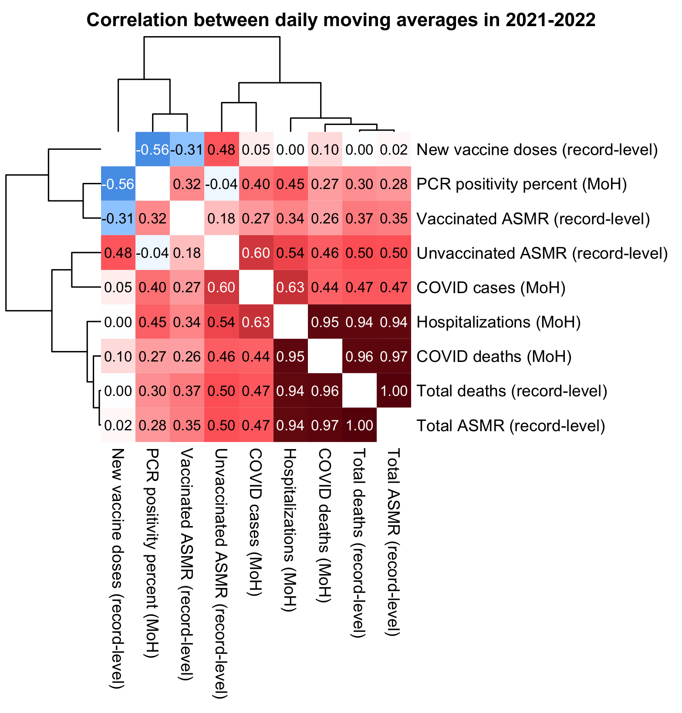
In the plot above PCR positivity rate gets an unusually poor correlation with all-cause deaths, but it's because half of the data is from 2022, and in 2022 there was high PCR positivity but low mortality (which is the typical pattern in the Omicron era all over the world). However the correlation between PCR positivity and total deaths increased from about 0.30 to about 0.45 when I looked at data from 2020-2022 instead, and it further increased to about 0.94 when I looked at data from 2020-2021:
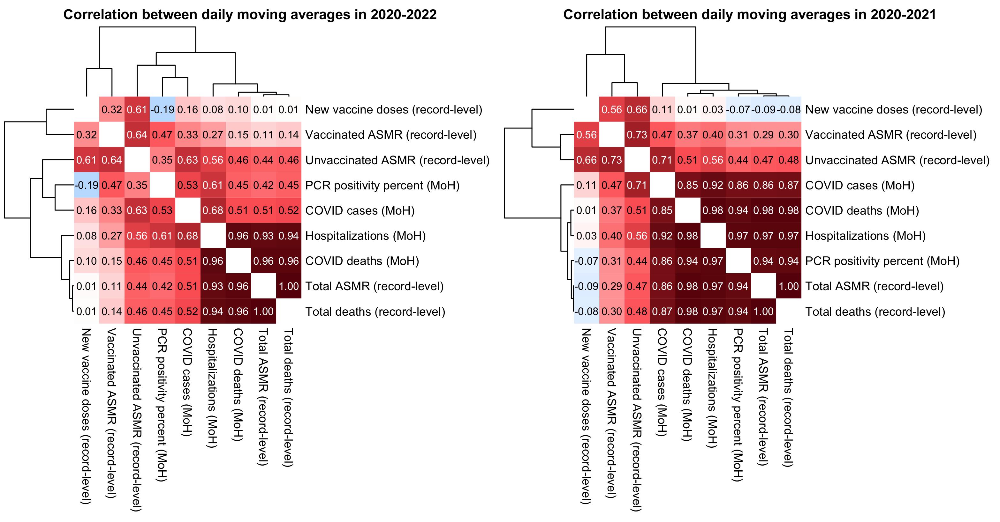
download.file("https://onemocneni-aktualne.mzcr.cz/api/v2/covid-19/nakazeni-hospitalizace-testy.csv","nakazeni-hospitalizace-testy.csv")
download.file("https://onemocneni-aktualne.mzcr.cz/api/v2/covid-19/umrti.csv","umrti.csv")
download.file("https://onemocneni-aktualne.mzcr.cz/api/v2/covid-19/testy-pcr-antigenni.csv","testy-pcr-antigenni.csv")
download.file("http://sars2.net/f/czbucketsdaily.csv.gz","czbucketsdaily.csv.gz")
download.file("http://sars2.net/f/czcensus2021pop.csv","czcensus2021pop.csv")
library(data.table);library(ggplot2)
ma=\(x,b=1,f=b){x[]=rowMeans(embed(c(rep(NA,b),x,rep(NA,f)),f+b+1),na.rm=T);x}
ua=\(x,y,...){u=unique(x);y(u,...)[match(x,u)]}
age=\(x,y){class(x)=class(y)=NULL;(y-x-(y-789)%/%1461+(x-789)%/%1461)%/%365}
xstart=as.Date("2021-01-01");xend=as.Date("2022-12-31")
rec=fread("Czech/data/CR_records.csv",showProgress=F)
p=rec[!is.na(DatumUmrti),.(dead=.N),.(date=DatumUmrti,type=as.numeric(!is.na(Datum_1))+1)]
p=rbind(p,p[,.(dead=sum(dead),type=0),date])
p=dcast(p,date~paste0("dead",type),value.var="dead")
k=grep("Datum_",names(rec))
p=merge(p,data.table(date=as.IDate(unlist(rec[,..k],,F)))[!is.na(date)][,.(vax=.N),date],all=T)
std=fread("czcensus2021pop.csv")$pop
buck=fread("czbucketsdaily.csv.gz")
buck=rbind(buck,cbind(expand.grid(date=as.IDate(xstart:xend),age=0:100,dose=unique(buck$dose)),alive=0,dead=0))|>unique(by=1:3)
asmrtot=buck[,.(dead=sum(dead),alive=sum(alive),type=0),.(date,age)][alive>=1e3]
asmr=rbind(asmrtot,buck[,.(dead=sum(dead),alive=sum(alive)),.(date,age,type=as.integer(dose>=1)+1)])
asmr=asmr[alive>=1e3,.(asmr=sum(dead/alive*std[pmin(age,100)+1]/sum(std)*365e5)),.(date,type)]
p=merge(p,dcast(asmr,date~paste0("asmr",type),value.var="asmr"))
testy=fread("nakazeni-hospitalizace-testy.csv",na.strings="-")
testy=testy[,.(tests=sum(provedene_testy,na.rm=T),cases=sum(potvrzene_pripady,na.rm=T),hosp=sum(nove_hospitalizace,na.rm=T)),.(date=datum)]
p=merge(p,testy[,.(date,hosp,cases)],all=T)
pcr=fread("testy-pcr-antigenni.csv")
p=merge(p,pcr[,.(pcr=(PCR_pozit_sympt+PCR_pozit_asymp)/pocet_PCR_testy*100,date=datum)],all=T)
p=merge(p,fread("umrti.csv")[,.(coviddead=.N),.(date=datum)],all=T)
p=p[date%in%xstart:xend]
p[is.na(p)]=0
var=read.csv(text="id,name
asmr0,Total ASMR (record-level)
asmr1,Unvaccinated ASMR (record-level)
asmr2,Vaccinated ASMR (record-level)
dead0,Total deaths (record-level)
hosp,Hospitalizations (MoH)
coviddead,COVID deaths (MoH)
cases,COVID cases (MoH)
pcr,PCR positivity percent (MoH)
vax,New vaccine doses (record-level)")
pick=strsplit("asmr0,asmr1,asmr2,hosp,coviddead,cases,pcr,vax,dead0",",")[[1]]
m=cor(apply(`colnames<-`(p[,..pick],var$name[match(pick,var$id)]),2,ma,10))
disp=m;disp[]=sprintf("%.2f",m)
diag(m)=NA;diag(disp)=""
hc=as.hclust(reorder(as.dendrogram(hclust(dist(m))),cmdscale(dist(m),1)))
pheatmap::pheatmap(m,filename="1.png",display_numbers=disp,clustering_callback=\(...)hc,
legend=F,cellwidth=19,cellheight=19,fontsize=9,fontsize_number=8,
border_color=NA,na_col="white",
number_color=ifelse((abs(m)>.55)&!is.na(m),"white","black")[hc$order,hc$order],
breaks=seq(-1,1,,256),
colorRampPalette(hsv(rep(c(7/12,0),5:4),c(.9,.75,.6,.3,0,.3,.6,.75,.9),c(.4,.65,1,1,1,1,1,.65,.4)))(256))
Here I used the same method to calculate excess mortality as in earlier sections, where I calculated the expected number of deaths for each week by multiplying the person-days of each combination of age and ongoing month by the mortality rate of all people included in the record-level data for the same combination of age and ongoing month. (Except this time I calculated the baseline by 5-year age groups and not by single year of age, but it didn't make much difference in the excess mortality figures.)
The period after vaccination when there is a clear reduction in mortality because of the temporal healthy vaccinee effect seems to last around 15 weeks. The reduction in mortality seems to be greater for dose 3 and 4 than doses 1 and 2, which might be because people who got doses 3 and 4 were older on average and the temporal HVE seems to be weaker in young age groups:
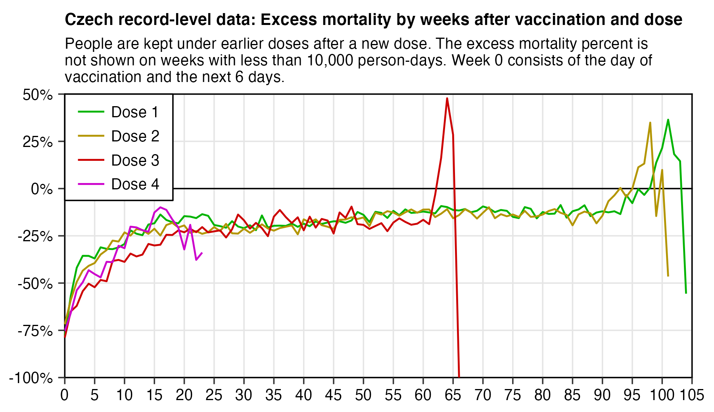
After the period with the greatest temporal HVE has passed around weeks 15 to 20, the excess mortality Moderna vaccines seems to rise up more over time than the excess mortality of Pfizer vaccines: Kirsch will probably use it as another argument for why Moderna vaccines are more deadly, since in his earlier analysis of the Medicare data and New Zealand data, his main argument for why the vaccines were unsafe was that the mortality rate went up over time when weeks after vaccination increased:
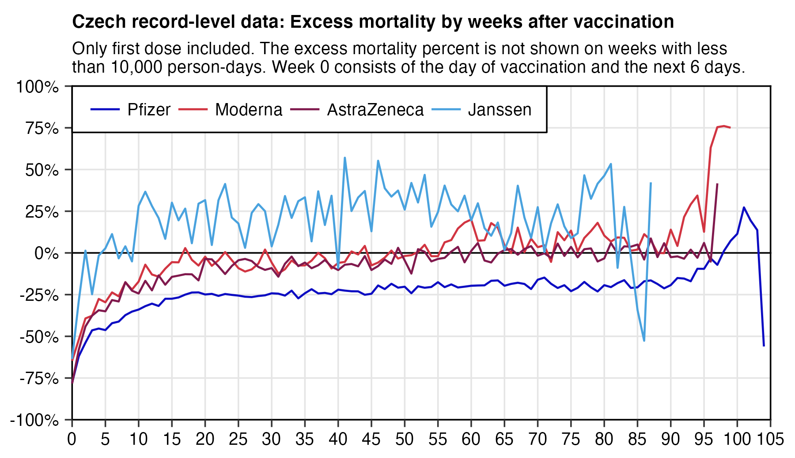
library(data.table);library(ggplot2)
b=fread("http://sars2.net/f/czbucketskeep.csv.gz")[,age:=pmin(age,95)%/%5*5]
# first plot
d=merge(b[dose%in%1:4],b[dose<=1,.(base=sum(dead)/sum(alive)),.(month,age)])[,base:=base*alive]
p=d[,.(y=(sum(dead)/sum(base)-1)*100,pop=sum(alive)),.(x=week,z=paste0("Dose ",dose))]
# # second plot
# d=merge(b[type%in%c("Pfizer","Moderna")],b[dose<=1,.(base=sum(dead)/sum(alive)),.(month,age)])[,base:=base*alive]
# p=d[,.(y=(sum(dead)/sum(base)-1)*100,pop=sum(alive)),.(x=week,z=factor(type,names(sort(table(type),T))))]
hidelim=1e4;p[pop<hidelim,y:=NA]
xstart=0;xend=105;xstep=5;ystart=-100;yend=50;ystep=25
color=hsv(c(12,21,24,30)/36,seq(.5,.8,,4),c(.9,.85,.7,.6))
sub=paste0(" ","For each combination of 5-year age group and ongoing month, the person-days were multiplied by the mortality rate among all people included in the record-level data for the same combination of age group and ongoing month, and the results were added together to get the baseline number of deaths."|>stringr::str_wrap(90))
sub=paste0(sub,"\n ",paste0("People are kept under earlier doses after a new dose. The excess mortality percent is not shown on weeks with less than ",formatC(hidelim,digits=0,format="f",big.mark=",")," person-days. Week 0 consists of the day of vaccination and the next 6 days.")|>stringr::str_wrap(90))
ggplot(p,aes(x,y))+
geom_hline(yintercept=c(ystart,0,yend),linewidth=.3,lineend="square")+
geom_vline(xintercept=c(xstart,xend),linewidth=.3,lineend="square")+
geom_line(aes(color=z),linewidth=.4)+
labs(title="Czech record-level data: Excess mortality by weeks after vaccination and dose",subtitle=sub,x=NULL,y=NULL)+
scale_x_continuous(limits=c(xstart,xend),breaks=seq(xstart,xend,xstep))+
scale_y_continuous(limits=c(ystart,yend),breaks=seq(ystart,yend,ystep),labels=\(x)paste0(x,"%"))+
scale_color_manual(values=color)+
coord_cartesian(clip="off",expand=F)+
theme(axis.text=element_text(size=7,color="black"),
axis.ticks=element_line(linewidth=.3),
axis.ticks.length=unit(3,"pt"),
legend.background=element_rect(fill="white",color="black",linewidth=.3),
legend.justification=c(0,1),
legend.key.height=unit(11,"pt"),
legend.key.width=unit(15,"pt"),
legend.key=element_rect(fill="white"),
legend.margin=margin(-2,7,3,6),
legend.position=c(0,1),
legend.spacing.x=unit(2,"pt"),
legend.text=element_text(size=7),
legend.title=element_blank(),
panel.grid.major=element_line(linewidth=.3,color="gray90"),
panel.background=element_rect(fill="white"),
plot.margin=margin(4,10,4,4),
plot.subtitle=element_text(size=7,margin=margin(0,0,4,0)),
plot.title=element_text(size=7.5,face="bold",margin=margin(2,0,4,0)))
ggsave("0.png",width=4.5,height=3.2,dpi=400*4)
system("convert 0.png -filter lanczos2 -resize 25% 1.png")
In the plot below you can see that during the COVID wave in November to December 2021, there was a temporary dent in unvaccinated CMR divided by vaccinated CMR, so that it fell below -70% in many age groups.
In ages 60-89 in February 2021 to July 2021, there is a diagonally shifting pattern where the period with the lowest ratio is earlier in older age groups and later in younger age groups, but that's because older age groups got vaccinated earlier so the period when they were subject to the greatest temporal HVE passed earlier. And before the main rollout to younger age groups had started, the people in younger age groups who had been vaccinated early included vulnerable and immunocompromised people who had an elevated mortality risk.
I don't know why ages 95-99 and 100+ get such huge percentages here. I got them even if I did this calculation by single year of age. It might be if for example people in long-term care were more likely to be vaccinated than people who were not in long-term care.
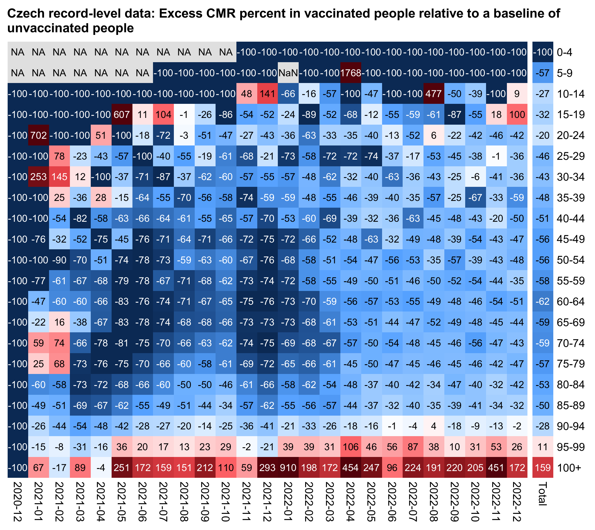
agecut=\(x,y)cut(x,c(y,Inf),paste0(y,c(paste0("-",y[-1]-1),"+")),T,F)
b=fread("http://sars2.net/f/czbucketskeep.csv.gz")[dose<=1&month>="2020-12"]
b=b[,.(dead=sum(dead),alive=sum(alive)),.(dose,age=agecut(age,seq(0,100,5)),month)]
b=rbind(b,b[,.(dead=sum(dead),alive=sum(alive),month="Total"),.(dose,age)])
a=tapply(b$dead/b$alive,b[,1:3],c)
m1=a[2,,];m2=a[1,,]
disp=round((m1/m2)*100)
m=(m1-m2)/ifelse(m1>m2,m2,m1)*100
exp=.8;m=abs(m)^exp*sign(m);maxcolor=300^exp
pheatmap::pheatmap(m,filename="0.png",display_numbers=disp,
gaps_col=ncol(m)-1,
cluster_rows=F,cluster_cols=F,legend=F,cellwidth=17,cellheight=17,fontsize=9,fontsize_number=8,
number_color=ifelse((abs(m)>.55*maxcolor)&!is.na(m),"white","black"),border_color=NA,na_col="gray90",
breaks=seq(-maxcolor,maxcolor,,256),
colorRampPalette(hsv(rep(c(7/12,0),5:4),c(.9,.75,.6,.3,0,.3,.6,.75,.9),c(.4,.65,1,1,1,1,1,.65,.4)))(256))
system("w=`identify -format %w 0.png`;pad=48;convert \\( -pointsize 44 -font Arial-Bold -size $[w-pad]x caption:'Czech record-level data: CMR in vaccinated people as percentage of CMR in unvaccinated people' \\) \\( -gravity north 0.png -shave x6 \\) -append -gravity north -splice x20 1.png")
This code generates a buckets file with an additional column for batch ID:
library(data.table)
ua=\(x,y,...){u=unique(x);y(u,...)[match(x,u)]}
age=\(x,y){class(x)=class(y)=NULL;(y-x-(y-789)%/%1461+(x-789)%/%1461)%/%365}
mindate=as.Date("2020-1-1");maxdate=as.Date("2022-12-31")
rec=fread("Czech/data/CR_records.csv")
t=rec[,.(id=1:.N,death=DatumUmrti)]
set.seed(0);t$birth=ua(paste0(rec$Rok_narozeni,"-1-1"),as.Date)+sample(0:364,nrow(t),T)
t=t[rep(1:nrow(t),8),]
t$dose=rep(0:7,each=nrow(rec))
t$date=c(rep(mindate,nrow(rec)),rec[,`class<-`(unlist(.SD,,F),"Date"),.SDcols=patterns("Datum_")])
t$type=c(rep("",nrow(rec)),rec[,unlist(.SD,,F),.SDcols=patterns("Latka_")])
t$batch=c(rep("",nrow(rec)),rec[,unlist(.SD,,F),.SDcols=patterns("Sarze_")])
t=t[!is.na(date)][date<=maxdate][order(-date)]
t$vaxmonth=ua(t$date,substr,1,7)
name1=unique(t$type);name2=rep("Other",length(name1))
name2[name1==""]=""
name2[grep("comirnaty",ignore.case=T,name1)]="Pfizer"
name2[grep("spikevax",ignore.case=T,name1)]="Moderna"
name2[grep("nuvaxovid",ignore.case=T,name1)]="Novavax"
name2[name1=="COVID-19 Vaccine Janssen"]="Janssen"
name2[name1=="VAXZEVRIA"]="AstraZeneca"
t$type=name2[match(t$type,name1)]
# some batch names have extra spaces at the end or they're in lowercase instead of uppercase
t$batch=ua(ua(t$batch,trimws),toupper)
# use "Other" as batch ID for mistyped and rare batch IDs to reduce the size of the buckets file
t[!batch%in%batch[rowid(batch)==100],batch:="Other"]
# if for example a Moderna batch ID has AstraZeneca as type, replace the type with Moderna
mostcommon=t[,.N,.(batch,type)][order(-N)][rowid(batch)==1,setNames(type,batch)]
t[batch!="",type:=mostcommon[batch]]
rm(rec)
buck=data.table()
for(day in as.list(seq(mindate,maxdate,1))){
cat(as.character(day),"\n")
buck=rbind(buck,t[date<=day&(is.na(death)|day<=death)&day>=birth][!(dose==0&id%in%id[dose>0])][,.(
month=substr(day,1,7),vaxmonth,week=ifelse(type=="",0,as.numeric(day-date)%/%7),
age=age(birth,day),dose,type,batch,alive=1,dead=death==day)])[,.(
alive=sum(alive),dead=sum(dead,na.rm=T)),by=.(month,vaxmonth,week,age,dose,type,batch)]
}
setorder(buck,month,vaxmonth,week,age,dose,type,batch)
fwrite(buck,"czbucketsbatchkeep.csv",quote=F)
I uploaded the output here: f/czbucketsbatchkeep.csv.xz (about 38 MiB). In the output people are kept under earlier doses even after a new dose. Batches with less than 100 doses are shown under the batch name "Other". Vaccines from manufacturers with less than 1,000 total doses are shown under the type "Other". In the earlier buckets files I classified Pfizer's Omicron vaccines under the "Other" type but now I'm classifying them under the Pfizer type instead.
The plot below shows statistics for people who got a first dose from a Pfizer vaccine. Generally batches that have a later mean day of vaccination seem to have higher excess mortality. On the row for the mean date of vaccination, January 1st 2021 is day zero. The only batch with a negative mean date is EJ6796, which has a mean date of -3 which means December 29th 2020 (but that batch also has fairly high excess deaths of about 24%, which might be if vulnerable groups of people were priorized to be vaccinated earliest). There's 15 batches that have more than 100,000 doses given but all of the batches got below -10% excess mortality:
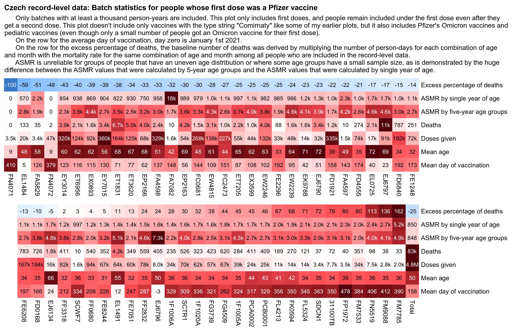
In the plot above when I calculated ASMR by single year of age, the batch FA7082 got an ASMR of about 18,000 deaths per 100,000 person-years. However that's because the age 89 had one death but only 4 person-days in the batch, and age 89 made up about 0.19% of my standard population, so the single death contributed about 18,000 units to the total ASMR value (from 1/4*.0019*365e5):
> std=fread("http://sars2.net/f/czcensus2021pop.csv")[,pop/sum(pop)]
> system("curl -LsO sars2.net/f/czbucketsbatchkeep.csv.xz")
> b=fread("xz -dc czbucketsbatchkeep.csv.xz")[dose==1]
> d=b[batch=="FA7082",.(dead=sum(dead),alive=sum(alive)),.(age=pmin(age,100))][,asmr:=dead/alive*std[age+1]*365e5]
> print(d[dead>0],r=F) # show all ages with nonzero deaths
age dead alive asmr
44 1 26242 24.08040
63 1 9983 46.04660
67 1 7239 63.44008
71 1 5326 80.26433
77 1 4457 69.38750
79 1 2326 101.98112
82 1 2407 67.61925
83 1 1701 84.76822
86 1 1685 62.20545
89 1 4 17790.17285
But when I calculated the ASMR by 5-year age groups instead, ages 85-89 now had 2 deaths and 5,000 person-days, so ages 85-89 contributed only about 188 units to the total ASMR value:
> agecut=\(x,y)cut(x,c(y,Inf),paste0(y,c(paste0("-",y[-1]-1),"+")),T,F)
> ages=0:19*5
> std2=tapply(std,agecut(0:100,ages),sum)
> d2=b[batch=="FA7082",.(dead=sum(dead),alive=sum(alive)),.(age=agecut(age,ages))][,asmr:=dead/alive*std2[age]*365e5]
> print(d2[dead>0],r=F) # show all ages with nonzero deaths
age dead alive asmr
40-44 1 108333 27.46563
60-64 1 42891 49.85952
65-69 1 30224 76.66238
70-74 1 25299 84.80707
75-79 2 20774 140.02652
80-84 2 11081 152.34513
85-89 2 5000 187.71468
However even if you calculate ASMR using 5-year age groups instead of single year of age, there can still occasionally be one age group which has nonzero deaths and a tiny population size, which can artificially inflate the total ASMR value. ASMR is suitable for populations where all age groups always have a large number of people, like the total population of an entire nation. But in cases like these batch statistics where some age groups can have a small population size, the method I used to calculate the excess percentage of deaths in my plot above is often more reliable than ASMR.
For Moderna vaccines, the batches with a later mean day of vaccination also got a higher percentage of excess deaths than the batches with an earlier mean day of vaccination, and the biggest batches generally got a low percentage of excess deaths. But the batch with the very lowest mean date of vaccination was 30042698 which got 106% excess deaths:
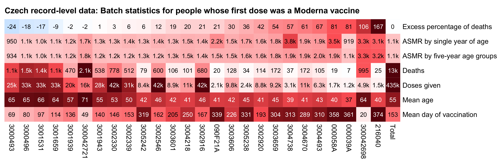
In the next plot I only included first doses like in the two previous plots. It also shows that batches with a later mean date of vaccination have much higher excess mortality than batches with an earlier mean date of vaccination:
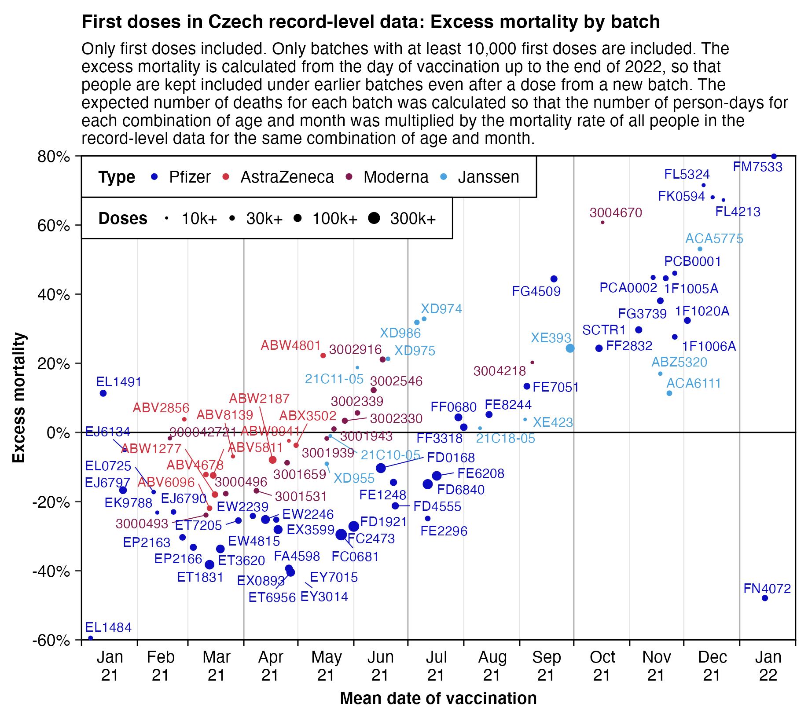
In the plot above the batch with the highest excess deaths is FM7533, which has about 80% excess deaths. The average date of first doses in the batch is in December 2021, so the batch includes many late vaccinees who got the first dose late. However in the plot below where I included all doses instead of only first doses, the same batch now got about -14% excess deaths. The batch has over 20 times as many third doses as first doses, so the small number of late vaccinees who got the first dose late from the batch don't have that much impact on the total mortality of the batch:
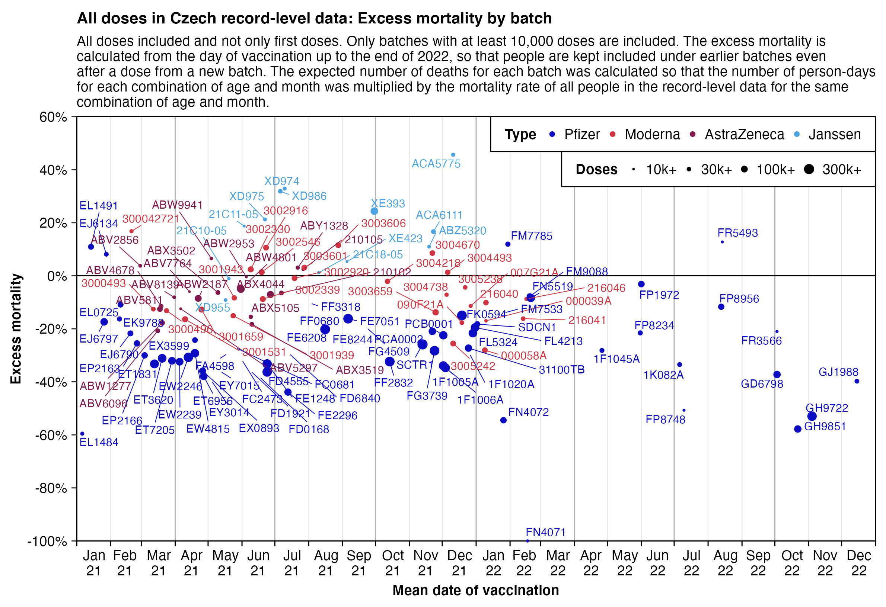
Here I used the same method to calculate excess mortality for the batch FM7533 as in the two plots above, so I got the same result of about 80% excess mortality for the first dose but about -14% excess mortality for all doses:
> buck=fread("curl -Ls sars2.net/f/czbucketsbatchkeep.csv.xz|xz -dc")[,age:=pmin(age,95)]
> me=merge(buck[batch=="FM7533"],buck[dose<=1,.(base=sum(dead)/sum(alive)),.(age,month)])[,base:=base*alive]
> a=me[,.(alive=sum(alive),dead=sum(dead),base=sum(base)),dose]
> a=rbind(a,a[,lapply(.SD,sum)][,dose:="Total"])
> a[,.(excess=(sum(dead)/sum(base)-1)*100,persondays=sum(alive)),dose]|>print(r=F)
dose excess persondays
1 79.62555 11972333
2 54.63342 22580427
3 -21.07481 248860907
4 -24.48992 3037335
5 258.23700 11337
6 -100.00000 966
Total -14.04048 286463305
When I made the heatmap below which included all doses for Pfizer vaccines instead of only first doses, now only 5 out of 68 batches got positive excess mortality, and 3 of them were among the batches with the earliest mean date of vaccination:
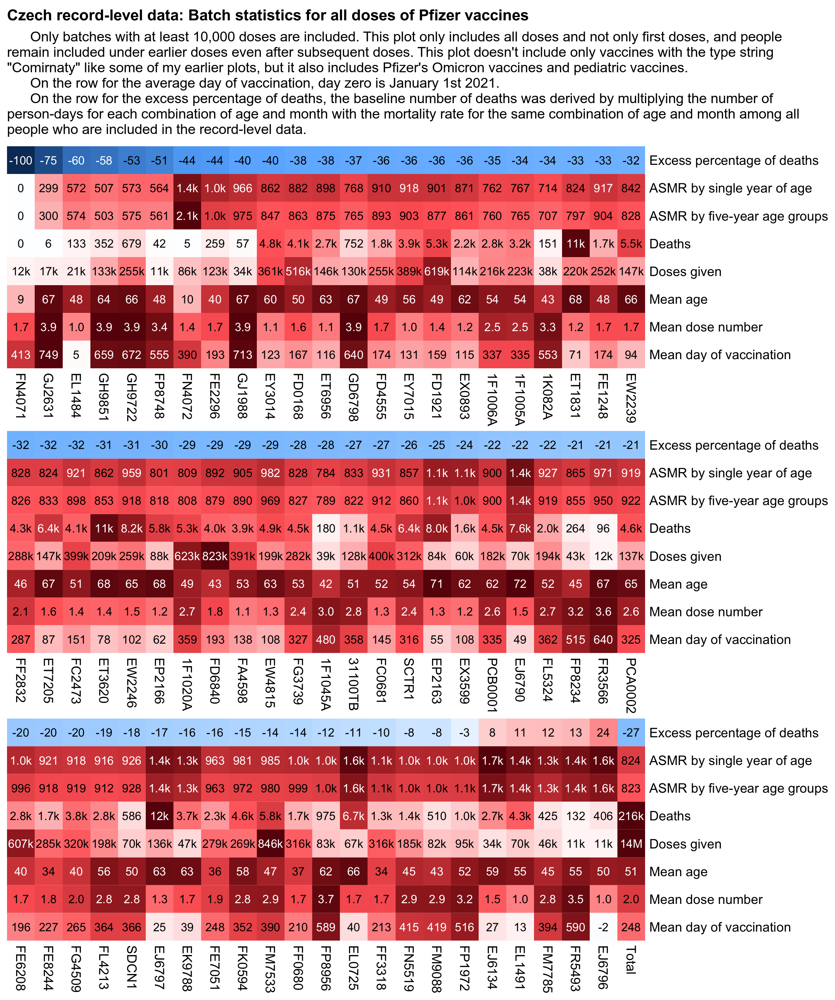
Here's code for making the heatmaps:
library(data.table)
ua=\(x,y,...){u=unique(x);y(u,...)[match(x,u)]}
kimi=\(x){e=floor(log10(ifelse(x==0,1,abs(x))));e2=pmax(e,0)%/%3+1;x[]=ifelse(abs(x)<1e3,round(x),
paste0(sprintf(paste0("%.",ifelse(e%%3==0,1,0),"f"),x/1e3^(e2-1)),c("","k","M","B","T")[e2]));x}
std=fread("czcensus2021pop.csv")[,.(pop=sum(pop)),pmin(age,95)][,pop/sum(pop)]
buck=fread("czbucketsbatchkeep.csv")[,age:=pmin(age,95)]
# buck=buck[dose==1] # keep only first doses
me=merge(buck[type=="Pfizer"&batch!=""],buck[dose<=1,.(base=sum(dead)/sum(alive)),.(age,month)])[,base:=base*alive]
a=me[,.(alive=sum(alive),dead=sum(dead),base=sum(base)),.(batch,age)]
a=rbind(a,a[,.(alive=sum(alive),dead=sum(dead),base=sum(base),batch="Total"),age])
o=a[,.(excess=(sum(dead)/sum(base)-1)*100,asmr=sum(dead/alive*std[age+1]*365e5),
pop=sum(alive)/365,dead=sum(dead),age=weighted.mean(age,alive)),batch]
asmr2=a[,age2:=pmin(age,95)%/%5*5][,.(dead=sum(dead),alive=sum(alive)),.(batch,age2)]
std2=tapply(std,0:95%/%5*5,sum)
o=merge(o,asmr2[,.(asmr2=sum(dead/alive*std2[age2/5+1]*365e5)),batch])
# rec=fread("CR_records.csv")
batches=data.table(dose=rep(1:7,each=nrow(rec)),
date=rec[,unlist(.SD,,F),.SDcols=patterns("Datum_")]-as.double(as.Date(("2021-1-1"))),
type=rec[,unlist(.SD,,F),.SDcols=patterns("Latka_")],
batch=rec[,unlist(.SD,,F),.SDcols=patterns("Sarze_")])
batch=batches[,.(doses=.N,date=mean(date)),.(batch=ua(ua(batch,toupper),trimws))][batch%in%o$batch]
# batch=batch[dose==1] # keep only first doses
batch=rbind(batch,batch[,.(batch="Total",doses=sum(doses),date=weighted.mean(date,doses))])
o=merge(o,batch)[doses>=1e4]
o=data.frame(rbind(o[batch!="Total"][order(excess)],o[batch=="Total"]),row.names=1)
disp0=kimi(as.matrix(o))
max=apply(head(o,-1),2,max)
# max["asmr"]=max["asmr2"]=7e3
var=read.csv(text="id,name
excess,Excess percentage of deaths
asmr,ASMR by single year of age
asmr2,ASMR by five-year age groups
dead,Deaths
doses,Doses given
age,Mean age
date,Mean day of vaccination")
m0=o/max[col(o)]
m0=m0[,var$id];disp0=disp0[,var$id];colnames(m0)=var$name
floors=2;ncol=ceiling(nrow(m0)/floors)
for(i in 1:floors){
ran=((i-1)*ncol+1):min(nrow(m0),i*ncol)
m=t(m0[ran,]);disp=t(disp0[ran,])
pheatmap::pheatmap(m,filename=paste0("i",i,".png"),display_numbers=disp,
cluster_rows=F,cluster_cols=F,legend=F,cellwidth=19,cellheight=19,fontsize=9,fontsize_number=8,
number_color=ifelse((abs(m)>.55)&!is.na(m),"white","black"),border_color=NA,na_col="gray90",
breaks=seq(-1,1,,256),
colorRampPalette(hsv(rep(c(7/12,0),5:4),c(.9,.75,.6,.3,0,.3,.6,.75,.9),c(.4,.65,1,1,1,1,1,.65,.4)))(256))
}
system(paste0("convert ",paste0("i",1:floors,".png",collapse=" ")," -shave x6 -gravity east -append 0.png"))
sub="\u00a0 Only batches with at least 10,000 doses are included. This plot only includes all doses and not only first doses, and people remain included under earlier doses even after subsequent doses. This plot doesn't include only vaccines with the type string \"Comirnaty\" like some of my earlier plots, but it also includes Pfizer's Omicron vaccines and pediatric vaccines.
On the row for the average day of vaccination, day zero is January 1st 2021.
On the row for the excess percentage of deaths, the baseline number of deaths was derived by multiplying the number of person-days for each combination of age and month with the mortality rate for the same combination of age and month among all people who are included in the record-level data."
system(paste0("w=`identify -format %w 0.png`;pad=50;convert \\( -pointsize 45 -font Arial-Bold -size $[w-pad]x caption:'Czech record-level data: Batch statistics for all doses of Pfizer vaccines' \\( -gravity northwest -splice x12 -pointsize 42 -font Arial -interline-spacing -2 caption:'",gsub("'","'\\\\''",sub),"' \\) -extent $[w-pad]x -gravity center \\) \\( -gravity north 0.png -splice 0x6 \\) -append -gravity north -splice x20 1.png"))
And here's code for the scatterplot:
library(ggplot2);library(data.table)
buck=fread("curl -Ls sars2.net/f/czbucketsbatchkeep.csv.xz|xz -dc")[,age:=pmin(age,95)]
me=merge(buck[dose>0&batch!=""&type!=""&type!="Other"],buck[dose<=1,.(base=sum(dead)/sum(alive)),.(age,month)])[,base:=base*alive]
# me=me[dose==1] # keep only first doses
a=me[,.(alive=sum(alive),dead=sum(dead),base=sum(base)),.(batch,age,type)]
mostcommon=a[,max(alive),.(batch,type)][order(-V1)][rowid(batch)==1][,setNames(type,batch)]
a=a[mostcommon[batch]==type]
p=a[,.(excess=(sum(dead)/sum(base)-1)*100),.(batch,type)]
rec=fread("Czech/data/CR_records.csv")
batches=data.table(dose=rep(1:7,each=nrow(rec)),
date=rec[,unlist(.SD,,F),.SDcols=patterns("Datum_")],
type=rec[,unlist(.SD,,F),.SDcols=patterns("Latka_")],
batch=rec[,unlist(.SD,,F),.SDcols=patterns("Sarze_")])
# batches=batches[dose==1] # keep only first doses
p=merge(p,batches[,dose:=NULL][,.(doses=.N,date=`class<-`(round(mean(date)),"Date")),batch])[doses>=1e4]
xstart=as.Date("2021-1-1");xend=as.Date("2023-1-1")
xbreak=seq(xstart,xend,"1 month")
xlab=c(rbind("",format(head(xbreak,-1),"%b\n%y")),"")
xbreak=sort(c(xbreak,(xbreak-15)[-1]))
cand=c(sapply(c(1,2,5),\(x)x*10^c(-10:10)))
ystep=cand[which.min(abs(cand-(max(p$excess)-min(p$excess))/6))]
ystart=ystep*floor(min(p$excess)/ystep)
yend=ystep*ceiling(max(p$excess)/ystep)
ybreak=seq(ystart,yend,ystep)
p$type=factor(p$type,me[,sum(as.double(alive)),type][order(-V1)]$type)
color=hsv(c(240,355,330,204,36)/360,c(.94,.75,.8,.67,.64),c(.76,.82,.5,.87,.95))
pointsize=c(1e4,3e4,1e5,3e5)
sub="All doses included and not only first doses. Only batches with at least 10,000 doses are included. The excess mortality is calculated from the day of vaccination up to the end of 2022, so that people are kept included under earlier batches even after a dose from a new batch. The expected number of deaths for each batch was calculated so that the number of person-days for each combination of age and month was multiplied by the mortality rate of all people in the record-level data for the same combination of age and month."|>stringr::str_wrap(128)
ggplot(p,aes(x=date,y=excess))+
geom_vline(xintercept=seq(xstart,xend,"month"),color="gray90",linewidth=.23,lineend="square")+
geom_vline(xintercept=seq(xstart,xend,"3 month"),color="gray70",linewidth=.3,lineend="square")+
geom_vline(xintercept=c(xstart,xend),linewidth=.3,lineend="square")+
geom_hline(yintercept=c(ystart,0,yend),linewidth=.3,lineend="square")+
geom_point(aes(color=type,size=doses),stroke=0)+
# geom_text(aes(label=batch,color=type),size=2.3,vjust=-.6,show.legend=F)+
ggrepel::geom_text_repel(aes(label=batch,color=type),size=2.3,show.legend=F,max.overlaps=Inf,segment.size=.2,min.segment.length=.2,force=10,force_pull=2,box.padding=.1)+
labs(title="All doses in Czech record-level data: Excess mortality by batch",x="Mean date of vaccination",y="Excess mortality",subtitle=sub)+
scale_x_date(limits=c(xstart,xend),breaks=xbreak,labels=xlab)+
scale_y_continuous(limits=c(ystart,yend),breaks=ybreak,labels=\(x)paste0(x,"%"))+
scale_color_manual(values=color,name="Type")+
scale_size_continuous(range=c(.7,2.7),limits=range(pointsize),breaks=pointsize,labels=paste0(pointsize/1e3,"k+"),name="Doses")+
coord_cartesian(clip="off",expand=F)+
guides(color=guide_legend(order=1),size=guide_legend(order=2))+
theme(axis.text=element_text(size=8,color="black"),
# axis.text.x=element_text(angle=90,vjust=.5,hjust=1),
axis.ticks=element_line(linewidth=.3),
axis.ticks.x=element_line(color=alpha("black",c(1,0))),
axis.ticks.length=unit(3,"pt"),
axis.title=element_text(size=8,face="bold"),
axis.title.x=element_text(margin=margin(4,0,0,0)),
axis.title.y=element_text(margin=margin(0,2,0,1)),
legend.background=element_rect(fill="white",color="black",linewidth=.3),
legend.key.height=unit(8,"pt"),
legend.key.width=unit(6,"pt"),
legend.key=element_rect(fill="white"),
legend.margin=margin(6,8,6,8),
legend.justification=c(1,1),
legend.position=c(1,1),
legend.direction="horizontal",
legend.box="vertical",
legend.box.just="right",
legend.box.margin=margin(0,0,0,0),
legend.box.spacing=unit(0,"pt"),
legend.spacing=unit(0,"pt"),
legend.text=element_text(size=8),
legend.title=element_text(size=8,face="bold",margin=margin(0,2,0,0)),
panel.background=element_rect(fill="white"),
panel.grid=element_blank(),
plot.margin=margin(5,6,5,5),
plot.subtitle=element_text(size=8,margin=margin(0,0,4,0)),
plot.title=element_text(size=9,face="bold",margin=margin(2,,5,0)))
ggsave("1.png",width=7,height=4.8,dpi=340)
I thought that maybe the reason why Janssen vaccines had such high excess mortality could've been if for example it was common for people in long-term care to receive Janssen vaccines, so then Janssen vaccines might have had high excess mortality only in elderly age groups but not in younger age groups. However that wasn't the case, because Janssen vaccines also got high excess mortality in younger age groups:
> download.file("http://sars2.net/f/bucketsbatchkeep.csv.xz","bucketsbatchkeep.csv.xz")
> buck=fread("xz -dc czbucketsbatchkeep.csv.xz")
> b=buck[,age:=pmin(age,95)]
> me=merge(b[type!=""&type!="Other"],b[,.(base=sum(dead)/sum(alive)),.(month,age)])[,base:=base*alive]
> a=me[,.(dead=sum(dead),base=sum(base)),.(age=age%/%10*10,type)]
> a=rbind(a,a[,.(dead=sum(dead),base=sum(base),type="Total"),age])
> a=rbind(a,a[,.(dead=sum(dead),base=sum(base),age="Total"),type])
> a[,tapply(round((dead/base-1)*100),a[,1:2],c)]
type
age AstraZeneca Janssen Moderna Novavax Pfizer Total
0 NA NA -100 NA -52 -52
10 768 -100 3 -100 -19 -18
20 15 -4 9 205 -18 -15
30 45 39 -4 -100 -25 -20
40 39 44 11 -59 -26 -20
50 31 41 10 -6 -25 -19
60 11 44 14 10 -22 -15
70 1 42 3 -60 -16 -11
80 5 38 11 -18 -14 -9
90 6 22 9 -32 -6 -3
Total 4 38 8 -26 -16 -10
However earlier on this page I pointed out that first doses from Janssen vaccines were given much later on average than first doses from Moderna and Pfizer vaccines, but the late vaccinees who were late to get the first dose also had high excess mortality for Moderna and Pfizer vaccines.
So now I tried to calculate excess mortality relative to the mortality rate of people who got the same dose number the same month, and not relative to the mortality rate during the ongoing month. So for each combination of the three variables of vaccination month, dose number, and 5-year age group, I calculated the expected deaths for the group by multiplying the person-days of the group with the mortality rate among all people in the record-level data who had the same combination of the three variables.
For example people who got vaccinated in May 2021 generally spent a similar amount of time during different months up to the end of 2022, because only a small percentage of people in the dataset died. So adjusting for the month of vaccination already adjusts for seasonal variation in mortality, so don't think it's necessary to perform any additional adjustment for seasonality.
I used 5-year age groups instead of single years of age to calculate the baseline mortality rate, because for example there were only a small number of people who got the first dose in January 2022, so using single-year age groups would've resulted in large fluctuations in the baseline mortality rate for people who got the first dose in January 2022 (even though actually that is also a problem with the 5-year age groups).
However now with my new method of adjusting the baseline for the month of vaccination, Janssen vaccines actually got a lower total percentage of excess deaths than Moderna vaccines:
> b=buck[,age:=pmin(age%/%5*5,95)]
> me=merge(b[type!=""&type!="Other"],b[,.(base=sum(dead)/sum(alive)),.(vaxmonth,dose,age)])[,base:=base*alive]
> a=me[,.(dead=sum(dead),base=sum(base)),.(age=age%/%10*10,type)]
> a=rbind(a,a[,.(dead=sum(dead),base=sum(base),type="Total"),age])
> a=rbind(a,a[,.(dead=sum(dead),base=sum(base),age="Total"),type])
> a[,tapply(round((dead/base-1)*100),a[,1:2],c)]
type
age AstraZeneca Janssen Moderna Novavax Pfizer Total
0 NA NA -100 NA 0 0
10 54 -100 -12 -100 1 0
20 -22 18 18 83 -2 0
30 20 44 14 -100 -4 0
40 51 22 33 -80 -6 0
50 47 14 27 -40 -6 0
60 27 19 27 -23 -7 0
70 13 9 17 -80 -6 0
80 6 6 21 -58 -4 0
90 3 0 13 -37 -3 0
Total 10 11 19 -57 -5 0
I figured out one way to estimate the efficacy of different vaccine types, which is to look at how big the spike in ASMR is during the COVID wave in November to December 2021. However the spike seems to be more flat for people whose first dose was Pfizer or Moderna, but the spike is more pronounced for people whose first dose was AstraZeneca or Janssen. And in particular the spike seems to be the flattest for Moderna vaccines, even though Kirsch is making it seem like Moderna vaccines were the deadliest:
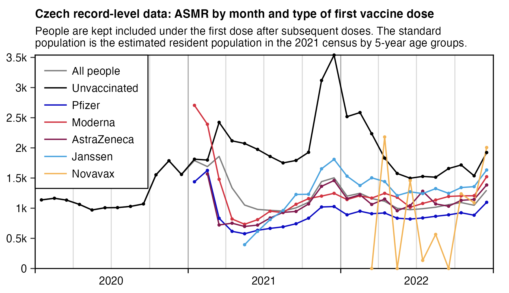
The plot above also has a sharp increase in deaths in December 2022, but it occurs in both vaccinated and unvaccinated people, and it's probably because of an influenza wave that occured in many European countries around December 2022.
std=fread("http://sars2.net/f/czcensus2021pop.csv")[,.(pop=sum(pop)),.(age=pmin(age,95)%/%5*5)][,pop/sum(pop)]
b=fread("http://sars2.net/f/czbucketskeep.csv.gz")[dose<=1&type!="Other"][,age:=pmin(age,95)%/%5*5]
b[dose==0,type:="Unvaccinated"]
a=b[,.(dead=sum(dead),alive=sum(alive)),.(type,month,age)]
p=a[,.(pop=sum(alive),asmr=sum(dead/alive*std[age/5+1]*365e5)),.(month,type)]
p[,month:=as.Date(paste0(month,"-1-15"))]
xstart=as.Date("2020-1-1");xend=as.Date("2023-1-1")
xbreak=seq(xstart,xend,"2 month")
p$type=factor(p$type,c("Unvaccinated","Pfizer","Moderna","AstraZeneca","Janssen"))
# hidelim=1e3;p[pop<hidelim/365,asmr:=NA]
cand=c(sapply(c(1,2,5),\(x)x*10^c(-10:10)))
ymax=max(p$asmr,na.rm=T)
ystep=cand[which.min(abs(cand-ymax/6))]
yend=ystep*ceiling(ymax/ystep)
yend=max(p$asmr)
ystart=0;ybreak=seq(ystart,yend,ystep)
color=c("black",hsv(c(240,355,330,204)/360,c(.94,.75,.8,.67),c(.76,.82,.5,.87)))
ggplot(p,aes(x=month+15,y=asmr))+
geom_vline(xintercept=seq(xstart,xend,"3 month"),color="gray85",linewidth=.3,lineend="square")+
geom_vline(xintercept=seq(xstart,xend,"year"),color="gray65",linewidth=.3,lineend="square")+
geom_vline(xintercept=c(xstart,xend),linewidth=.3,lineend="square")+
geom_hline(yintercept=c(ystart,0,yend),linewidth=.3,lineend="square")+
geom_line(aes(color=type),linewidth=.4)+
labs(title="Czech record-level data: ASMR by month and type of first vaccine dose",subtitle=paste0("People are kept included under the first dose after subsequent doses. The standard population is the estimated resident population in the 2021 census by 5-year age groups.")|>stringr::str_wrap(90),x=NULL,y=NULL)+
scale_x_date(limits=c(xstart,xend),breaks=seq(xstart,xend,"6 month"),labels=c(rbind("",2020:2022),""))+
scale_y_continuous(limits=c(ystart,yend),breaks=seq(ystart,yend,ystep),labels=\(x)paste0(x/1e3,"k"))+
scale_color_manual(values=color)+
coord_cartesian(clip="off",expand=F)+
theme(axis.text=element_text(size=7,color="black"),
axis.ticks=element_line(linewidth=.3),
axis.ticks.x=element_line(color=alpha("black",c(1,0))),
axis.ticks.length=unit(3,"pt"),
legend.direction="vertical",
legend.background=element_rect(fill="white",color="black",linewidth=.3),
legend.key.height=unit(11,"pt"),
legend.key.width=unit(15,"pt"),
legend.key=element_rect(fill="white"),
legend.margin=margin(0,6,4,4.5),
legend.justification=c(0,1),
legend.position=c(0,1),
legend.spacing.x=unit(1.5,"pt"),
legend.text=element_text(size=7),
legend.title=element_blank(),
panel.grid.major=element_blank(),
panel.background=element_rect(fill="white"),
plot.margin=margin(4,10,4,4),
plot.subtitle=element_text(size=7,margin=margin(0,0,4,0)),
plot.title=element_text(size=7.5,face="bold",margin=margin(2,0,4,0)))
ggsave("1.png",width=4.5,height=2.6,dpi=400)
Kirsch wrote:
When Pfizer is compared against Novavax, all illusions of safety go away.
While the Czech Republic had limited use of Novavax, the results are quite stunning in comparison to Pfizer.
Novavax was not administered in 2021 because it wasn't available in the Czech Republic until March 2022. Novavax doesn't appear in the analyses above because nobody would have at least 12 months to die. But we can look at people who got Novavax (CO07 in the original datafile). There were only 6,087 people who got Novavax in total. The month with the most doses was April 2022.
As you can see by looking at the Novavax.xlsx spreadsheet, we can say with 80% confidence that Novavax is likely safer than Pfizer. The ratios are high and consistent, but we need more data to make a more confident assessment. The MRR ratio should be 1 for a safe vaccine.
But these numbers 2.1, 4.7, 2.5, 1.6, and 2.1 are far from safe showing that Novavax is highly likely to be significantly safer than Pfizer.
If the Novavax and Pfizer vaccines were equally safe, we'd expect Pfizer to win on half the ratios. But Novavax won on all 5 ratios we had adequate data for.
The change that would happen if both vaccines are safe is just 3% of the time.
Which means it's far more likely than not that Novavax is far safer than Pfizer.
Kirsch posted his analysis of Novavax vaccines here: https://github.com/skirsch/Czech/blob/main/analysis/Novavax.xlsx.
When I looked at first doses only, I got higher excess mortality for Novavax than Pfizer:
> download.file("http://sars2.net/f/czbucketsbatchkeep.csv.xz","czbucketsbatchkeep.csv.xz")
> b=fread("xz -dc czbucketsbatchkeep.csv.xz")
> d=b[,age:=pmin(age,95)][dose==0,type:="Unvaccinated"]
> d=merge(d[type!="Other"],d[dose<=1,.(base=sum(dead)/sum(alive)),by=.(age,month)])[,base:=base*alive]
> d[dose==1,.(excesspct=round((sum(dead)/sum(base)-1)*100),personyears=round(sum(alive)/365)),type][order(-excesspct)]|>print(r=F)
type excesspct personyears
Janssen 20 539457
Moderna -1 825149
AstraZeneca -9 764170
Novavax -18 3648
Pfizer -25 8676836
Other -100 557
However the first Novavax vaccine in the Czech data was only given in March 2022, so the ultra-late vaccinees who only got the first dose in 2022 might have high excess mortality. And when I looked at all doses instead of only first doses, Novavax now got lower total excess mortality than Pfizer (even though about half of all doses were first doses):
> d[,.(excesspct=round((sum(dead)/sum(base)-1)*100),personyears=round(sum(alive)/365)),type][order(-excesspct)]|>print(r=F)
type excesspct personyears
Janssen 20 543186
Unvaccinated 16 21235372
Moderna -5 2169497
AstraZeneca -9 1423411
Pfizer -27 20665331
Novavax -34 7049
However it might also be that since all people got a Novavax vaccine less than 10 months before the end of 2022 when my analysis ends, people with a Novavax vaccine were affected by the temporal healthy vaccinee effect for a large percentage of their follow-up time, since the period after vaccination that has clearly reduced mortality seems to last about 2-3 months in the Czech data.
The plot below shows that the excess mortality of Novavax vaccines rose above Pfizer vaccines after about 20 weeks, even though the sample size is so small that the confidence intervals are huge. And also on weeks 0-4 after vaccination which is when a large percentage of vaccine deaths would presumably occur, Novavax had higher excess mortality than Pfizer:
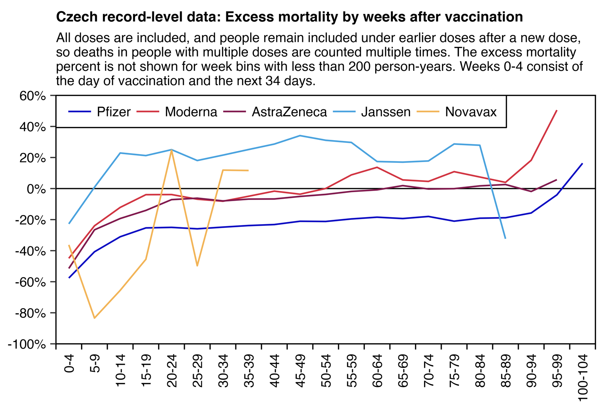
In my two previous code blocks I calculated excess an mortality percentage that was normalized only for age and vaccination month, but in the code below I also normalized the excess mortality for weeks after vaccination. It meant that I couldn't include unvaccinated people in my baseline since they don't have weeks since vaccination, so it increased the excess mortality percentages of vaccinated people. But anyway, I was expecting Novavax to now get a higher excess mortality percentage than Pfizer, but for some reason Novavax still got the lowest percentage:
> d=b[,age:=pmin(age%/%5*5,95)]
> d=merge(d[dose>0&type!="Other"],d[dose>0,.(base=sum(dead)/sum(alive)),.(age,month,week)])[,base:=base*alive]
> d[,.(excesspct=round((sum(dead)/sum(base)-1)*100),personyears=round(sum(alive)/365)),type][order(-excesspct)]|>print(r=F)
type excesspct personyears
Janssen 47 543186
Moderna 19 2169497
AstraZeneca 11 1423411
Pfizer -6 20665331
Novavax -24 7049
In the code above I included all doses and not only first doses, and I kept people included under earlier doses after a new dose. However when I removed people under earlier doses after a new dose instead, Novavax now got the highest excess mortality when I didn't normalize the baseline depending on weeks after vaccination, but Novavax got the lowest excess mortality when I also normalized the baseline depending on weeks after vaccination:
> b=fread("http://sars2.net/f/czbuckets.csv.gz")
> d=b[,age:=pmin(age,95)][dose==0,type:="Unvaccinated"]
> d1=merge(d[type!="Other"],d[dose<=1,.(base=sum(dead)/sum(alive)),by=.(age,month)])[,base:=base*alive]
> d1[dose==1,.(excesspct=round((sum(dead)/sum(base)-1)*100),personyears=round(sum(alive)/365)),type][order(-excesspct)]|>print(r=F)
type excesspct personyears
Novavax -14 564
Moderna -21 56953
Janssen -28 381299
Pfizer -34 607429
AstraZeneca -39 100597
> d2=merge(d[dose>0&type!="Other"],d[dose>0,.(base=sum(dead)/sum(alive)),.(age,month,week)])[,base:=base*alive]
> d2[,.(excesspct=round((sum(dead)/sum(base)-1)*100),personyears=round(sum(alive)/365)),type][order(-excesspct)]|>print(r=F)
type excesspct personyears
Janssen 26 383782
Moderna 14 1026266
AstraZeneca 9 381751
Pfizer -4 9013832
Novavax -15 3866
Here's code for making the line plot:
library(data.table);library(ggplot2)
bin=5
download.file("http://sars2.net/f/czbucketsbatchkeep.csv.xz","czbucketsbatchkeep.csv.xz")
b=fread("xz -dc czbucketsbatchkeep.csv.xz")[,age:=pmin(age,95)]
d=merge(b[type!=""&type!="Other"],b[dose<=1,.(base=sum(dead)/sum(alive)),.(month,age)])[,base:=base*alive]
p=d[,.(y=(sum(dead)/sum(base)-1)*100,pop=sum(alive)),.(x=week%/%bin,z=factor(type,names(sort(table(type),T))))]
hidelim=200;p[pop<hidelim*365,y:=NA]
xend=max(p$x)
cand=c(sapply(c(1,2,5),\(x)x*10^c(-10:10)))
ystep=cand[which.min(abs(cand-(max(p$y,na.rm=T)-min(p$y,na.rm=T))/6))]
yend=ceiling(max(p$y,na.rm=T)/ystep)*ystep
color=hsv(c(240,355,330,204,36)/360,c(.94,.75,.8,.67,.64),c(.76,.82,.5,.87,.95))
xlab=c(rbind("",paste0(0:xend*bin,"-",0:xend*bin+bin-1)),"")
ggplot(p,aes(x,y,group=z))+
geom_hline(yintercept=c(ystart,0,yend),linewidth=.3,lineend="square")+
geom_vline(xintercept=c(-.5,xend+.5),linewidth=.3,lineend="square")+
geom_line(aes(color=z),linewidth=.4)+
labs(title="Czech record-level data: Excess mortality by weeks after vaccination",subtitle=paste0("All doses are included, and people remain included under earlier doses after a new dose, so deaths in people with multiple doses are counted multiple times. The excess mortality percent is not shown for week bins with less than ",formatC(hidelim,digits=0,format="f",big.mark=",")," person-years. Weeks 0-4 consist of the day of vaccination and the next 34 days.")|>stringr::str_wrap(90),x=NULL,y=NULL)+
scale_x_continuous(limits=c(-.5,xend+.5),breaks=seq(-.5,xend+.5,.5),labels=xlab)+
scale_y_continuous(limits=c(ystart,yend),breaks=seq(ystart,yend,ystep),labels=\(x)paste0(x,"%"))+
scale_color_manual(values=color)+
coord_cartesian(clip="off",expand=F)+
theme(axis.text=element_text(size=7,color="black"),
axis.text.x=element_text(angle=90,vjust=.5,hjust=1),
axis.ticks.x=element_line(color=alpha("black",c(1,0))),
axis.ticks=element_line(linewidth=.3),
axis.ticks.length=unit(3,"pt"),
legend.direction="horizontal",
legend.background=element_rect(fill="white",color="black",linewidth=.3),
legend.key.height=unit(11,"pt"),
legend.key.width=unit(15,"pt"),
legend.key=element_rect(fill="white"),
legend.margin=margin(3,5,3,3.5),
legend.justification=c(0,1),
legend.position=c(0,1),
legend.spacing.x=unit(1.5,"pt"),
legend.text=element_text(size=7),
legend.title=element_blank(),
panel.grid.major=element_blank(),
panel.background=element_rect(fill="white"),
plot.margin=margin(4,4,4,4),
plot.subtitle=element_text(size=7,margin=margin(0,0,4,0)),
plot.title=element_text(size=7.5,face="bold",margin=margin(2,0,4,0)))
ggsave("0.png",width=4.4,height=3,dpi=350*4)
system("convert 0.png -filter lanczos2 -resize 25% 1.png")
Jeffrey Morris posted this tweet: [https://x.com/jsm2334/status/1813568488931246543]
If one computes the death rates for unvaccinated vs. ever vaccinated for each 5 year age group, the ever vaccinated death rate is consistently lower, and both are decently close to the actuarial death rate for Czech republic for the age group by averaging 2015-2019 numbers.
Here are the death rates and the raw summary date of follow up time (in person-years) and death counts for each age group for unvaccinated (follow up time starting 1/1/20 until death, first vaccine dose, or 12/31/22) or ever vaccinated (follow up starting date of 1st dose until death or 12/31/22).
Not sure how one can make a credible argument these data prove vaccines kill large numbers of people when the death rates of ever vaccinated are lower than unvaccinated, and both are reasonably close to the background death rate from 2015-2019.

However I don't know if the age-specific mortality rates of unvaccinated people are reasonably close to the 2015-2019 averages like Morris said. Here unvaccinated people got about 200% excess mortality during the COVID wave in December 2021, and even the total excess mortality in 2021 was about 73% in unvaccinated people:
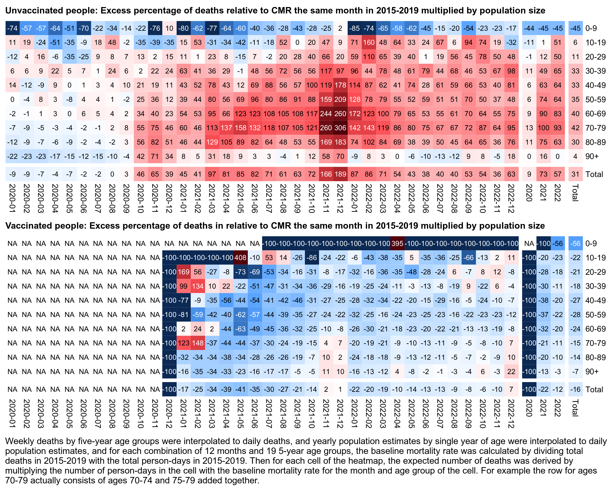
Jikkyleaks pointed out that in Morris's table unvaccinated people have more person-years than vaccinated people even in elderly age groups, because Morris started the observation period for unvaccinated people from the beginning of 2020. [https://x.com/Jikkyleaks/status/1813707647524438520] However when I modified the plot above so that I counted unvaccinated person-years from the start of 2021 instead of 2020, it increased the total excess mortality of unvaccinated people from about 31% to about 68%. But part of the difference can probably be blamed on the HVE.
In order to make my calculation more similar to the calculation by Morris, I used the total CMR for each age group in 2015 to 2019 as the baseline. But it caused my baseline to be too high especially towards the later part of the observation period, because the Czech Republic has a decreasing trend in CMR within age groups. In the code below when I switched my baseline from a 2015-2019 total for each age group to a 2015-2019 linear trend, my total excess deaths in 2020 to 2022 increased from about 9% to about 13%:
> t=fread("http://sars2.net/f/czpopdead.csv")[,age:=age%/%5*5]
> a=t[year>2019,.(dead=sum(dead),pop=sum(pop)),age]
> a=merge(a,t[year%in%2015:2019,.(base=sum(dead)/sum(pop)),age])
> a=merge(a,t[year%in%2015:2019,.(year=2020:2022,base2=predict(lm(dead/pop~year,.SD),.(year=2020:2022))),age])
> a[,base:=base*pop][,base2:=base2*pop]
> a=rbind(a,a[,.(dead=sum(dead),pop=sum(pop),base=sum(base),base2=sum(base2),age="Total"),year])
> a[,.(total=round((sum(dead)/sum(base)-1)*100),linear=round((sum(dead)/sum(base2)-1)*100)),age]|>print(r=F)
age total linear
0 -18 -15
5 -1 -13
10 -2 15
15 -6 -19
20 -2 -7
25 -3 0
30 15 7
35 19 18
40 9 18
45 5 10
50 9 14
55 8 11
60 6 14
65 7 16
70 9 15
75 14 15
80 11 18
85 6 11
90 9 9
95 4 -8
100 48 68
Total 9 13
age average linear
Here's also the code for making the heatmap:
library(data.table)
agecut=\(x,y)cut(x,c(y,Inf),paste0(y,c(paste0("-",y[-1]-1),"+")),T,F)
proj=fread("http://sars2.net/f/czdeadproj.csv")[year(date)%in%2015:2019]
b=fread("http://sars2.net/f/czbucketskeep.csv.gz")[dose<=1]
d=b[,.(dead=sum(dead),alive=sum(as.double(alive))),.(dose,month,month2=substr(month,6,7),age=pmin(age,90)%/%5*5)]
d=merge(d,proj[,.(base=sum(dead)/sum(pop)),.(month2=substr(date,6,7),age)])[,base:=base*alive]
d=d[,.(dead=sum(dead),base=sum(base)),.(dose,age=agecut(age,0:9*10),month)]
d=rbind(d,d[,.(dead=sum(dead),base=sum(base),age="Total"),.(dose,month)])
d[,month:=factor(month,c(sort(unique(month)),2020:2022,"Total"))]
d=rbind(d,d[,.(dead=sum(dead),base=sum(base)),.(dose,age,month=substr(month,1,4))])
d=rbind(d,d[,.(dead=sum(dead),base=sum(base),month="Total"),.(dose,age)])
m0=d[,tapply(((dead-base)/ifelse(dead>base,base,dead)*100),d[,1:3],c)]
disp0=tapply((d$dead/d$base-1)*100,d[,1:3],round)
for(i in 1:2){
m=m0[i,,];disp=disp0[i,,]
exp=.8;m=abs(m)^exp*sign(m)
maxcolor=300^exp;m[is.infinite(m)]=-maxcolor;m[is.nan(m)]=-maxcolor
pheatmap::pheatmap(m,filename=paste0("i",i,".png"),display_numbers=disp,legend=F,cluster_rows=F,cluster_cols=F,
gaps_row=nrow(m)-1,gaps_col=ncol(m)-c(1,4),
cellwidth=16,cellheight=16,fontsize=9,fontsize_number=8,border_color=NA,na_col="white",
number_color=ifelse(!is.na(m)&abs(m)>.5*maxcolor,"white","black"),breaks=seq(-maxcolor,maxcolor,,256),
colorRampPalette(hsv(rep(c(7/12,0),5:4),c(.9,.75,.6,.3,0,.3,.6,.75,.9),c(.4,.65,1,1,1,1,1,.65,.4)))(256))
}
tit="Excess percentage of deaths relative to population size multiplied by total CMR on corresponding months of 2015-2019"
cap="Weekly deaths by five-year age groups were interpolated to daily deaths, and yearly population estimates by single year of age were interpolated to daily population estimates, and for each combination of 12 months and 19 5-year age groups, the baseline mortality rate was calculated by dividing total deaths in 2015-2019 with the total person-days in 2015-2019. Then for each cell of the heatmap, the expected number of deaths was derived by multiplying the number of person-days in the cell with the baseline mortality rate for the month and age group of the cell. For example the row for ages 70-79 actually consists of ages 70-74 and 75-79 added together."
system(paste0("w=`identify -format %w i1.png`;pad=48;convert -gravity northwest -pointsize 42 -font Arial-Bold \\( -splice x24 -size $[w-pad]x caption:'Unvaccinated: ",tit,"' -extent $[w-pad]x -gravity center \\) i1.png -gravity northwest \\( -size $[w-40]x caption:'Vaccinated: ",tit,"' -extent $[w-pad]x -gravity center \\) i2.png \\( -font Arial -interline-spacing -2 -gravity west -size $[w-pad]x caption:'",cap,"' -extent $[w-pad]x -gravity south -splice 0x20 \\) -append 1.png"))
The first file under "Očkování" here has the number of vaccines given by day, dose number, age group, region, and vaccine type: https://onemocneni-aktualne.mzcr.cz/api/v2/covid-19. The number of doses given in the CSV file seems to be almost identical to the record-level data, and the CSV file even uses the same names for the vaccine types. For example here's the number of first doses given by vaccine type up to the end of 2023:
> download.file("https://onemocneni-aktualne.mzcr.cz/api/v2/covid-19/ockovani.csv","ockovani.csv")
> t=fread("ockovani.csv")
> moh=t[datum<="2023-12-31",.(moh=sum(prvnich_davek)),.(type=vakcina)]
> rec=fread("CR_records.csv")
> merge(rec[Datum_1<="2023-12-31",.(recordlevel=.N),.(type=OckovaciLatka_1)],moh,all=T)|>print(r=F)
type recordlevel moh
COMIRNATY OMICRON XBB.1.5 6m-4 11 11
COVAXIN 5 5
COVID-19 Vaccine Janssen 412312 412318
Comirnaty 5586978 5586776
Comirnaty 6m-4 111 111
Comirnaty Omicron XBB.1.5. 1744 1745
Comirnaty Omicron XBB.1.5. 5-11 73 73
Comirnaty Original/Omicron BA.1 289 290
Comirnaty Original/Omicron BA.4/BA.5 661 663
Covishield 115 116
Covovax 29 29
Nuvaxovid 5425 5424
Nuvaxovid XBB 1.5 NA 0
SPIKEVAX 526452 526447
SPIKEVAX BIVALENT ORIGINAL/OMICRON BA.4-5 4 4
Sinopharm 38 38
Sinovac 180 181
Spikevax bivalent Original/Omicron BA.1 15 15
Sputnik V 10 10
VAXZEVRIA 447450 447428
Valneva 2 2
type recordlevel moh
You can download regional vaccination data here from the first CSV file under "Očkování": https://onemocneni-aktualne.mzcr.cz/api/v2/covid-19. It shows that the ratio of Pfizer first doses to Moderna first doses ranged from about 8 to 13 depending on the region:
system("wget onemocneni-aktualne.mzcr.cz/api/v2/covid-19/umrti.csv
wget onemocneni-aktualne.mzcr.cz/api/v2/covid-19/ockovani.csv
wget csu.gov.cz/docs/107508/a53bbc83-5e04-5a74-36f9-549a090a806e/130142-24data051724.zip
unzip 130142-24data051724.zip
wget sars2.net/f/{czicd.csv.gz,czcensus2021pop.csv,cznuts.csv}")
vax=fread("ockovani.csv")
d=vax[,.(doses=sum(prvnich_davek)),.(region=kraj_nazev,type=vakcina)]
d1=d[grep("comirnaty",ignore.case=T,type),.(Pfizer=sum(doses)),region]
d2=d[grep("spikevax",ignore.case=T,type),.(Moderna=sum(doses)),region]
rat=merge(d1,d2)[,ratio:=Pfizer/Moderna][order(ratio)]
rat[,ratio:=round(ratio,1)][]|>print(r=F)
region Pfizer Moderna ratio
Kraj Vysočina 242228 29168 8.3
Olomoucký kraj 283836 34131 8.3
Pardubický kraj 241427 27257 8.9
Zlínský kraj 272423 30752 8.9
Královéhradecký kraj 282321 29809 9.5
Moravskoslezský kraj 563177 56852 9.9
Liberecký kraj 223807 22292 10.0
Středočeský kraj 577675 53262 10.8
Karlovarský kraj 136853 11834 11.6
Jihomoravský kraj 630695 54459 11.6
Hlavní město Praha 1078626 92880 11.6
Jihočeský kraj 342569 28338 12.1
Ústecký kraj 404658 32337 12.5
Plzeňský kraj 309676 23097 13.4
I checked if the regions that had a higher proportion of Pfizer first doses to Moderna first doses would've had lower COVID ASMR, but actually it was the reverse so the correlation between COVID ASMR and the dose ratio was positive on average depending on the year:
coviddead=fread("umrti.csv")[,.(dead=.N),.(year=year(datum),age=pmin(vek,95)%/%5*5,nuts=kraj_nuts_kod)]
coviddead=merge(coviddead,fread("cznuts.csv")[,.(nuts,region=name)])
pop=fread("OD_DEM02_vse_2024051613085948.CSV")[uzemi_typ=="kraj"&vek_txt!=""&pohlavi_txt=="",.(
age=as.numeric(sub("^(Od )?([^ ]+) .*","\\2",vek_txt)),year=year(casref_do),region=vuzemi_txt,pop=hodnota)]
std=fread("czcensus2021pop.csv")[,sum(pop),pmin(age,95)%/%5][,V1/sum(V1)]
asmr=merge(pop,coviddead)[,.(asmr=sum(dead/pop*std[age/5+1]*1e5)),.(region,year)]
merge(rat,asmr)[,.(cor=round(cor(ratio,asmr),2)),year][order(year)]|>print(r=F)
year cor 2020 0.01 2021 0.42 2022 0.34 2023 -0.13 2024 0.12
This shows the COVID ASMR in 2020 as an example:
> merge(rat,asmr)[year==2020][order(ratio)]|>mutate_if(is.double,round,1)|>print(r=F)
region Pfizer Moderna ratio year asmr
Kraj Vysočina 242228 29168 8.3 2020 128.0
Olomoucký kraj 283836 34131 8.3 2020 117.2
Pardubický kraj 241427 27257 8.9 2020 89.4
Zlínský kraj 272423 30752 8.9 2020 132.2
Královéhradecký kraj 282321 29809 9.5 2020 107.5
Moravskoslezský kraj 563177 56852 9.9 2020 126.7
Liberecký kraj 223807 22292 10.0 2020 103.7
Středočeský kraj 577675 53262 10.8 2020 98.9
Karlovarský kraj 136853 11834 11.6 2020 151.7
Jihomoravský kraj 630695 54459 11.6 2020 121.1
Hlavní město Praha 1078626 92880 11.6 2020 83.2
Jihočeský kraj 342569 28338 12.1 2020 129.0
Ústecký kraj 404658 32337 12.5 2020 131.7
Plzeňský kraj 309676 23097 13.4 2020 100.4
When I looked at all-cause ASMR instead of COVID ASMR, I still got a positive correlation:
> acm=merge(pop,fread("czicd.csv.gz")[,.(dead=sum(dead)),.(year,region,age)])
> acm=merge(rat,acm[,.(asmr=sum(dead/pop*std[age/5+1]*1e5)),.(region,year)])
> acm[,.(cor=round(cor(ratio,asmr),2)),year]|>print(r=F)
year cor 2013 0.21 2014 0.28 2015 0.35 2016 0.36 2017 0.27 2018 0.29 2019 0.23 2020 0.08 2021 0.25 2022 0.18
Kirsch wrote that "Pfizer and Moderna were distributed at the same time in the Czech Republic to all age groups." [https://x.com/stkirsch/status/1813756548885401781]
However that's not true, because the ratio of Pfizer vaccines given to Moderna vaccines given changed dramatically depending on the month of vaccination and the decade of birth:
rec=fread("CR_records.csv")
t=rec[,.(dose=rep(1:7,each=.N),decade=rep(Rok_narozeni%/%10*10,7))]
t$month=rec[,ua(`class<-`(unlist(.SD,,F),"Date"),substr,1,7),.SDcols=patterns("Datum_")]
t$type=rec[,unlist(.SD,,F),.SDcols=patterns("OckovaciLatka_")]
t=t[!is.na(month)]
t$type[grep("comirnaty",ignore.case=T,t$type)]="Pfizer"
t$type[grep("spikevax",ignore.case=T,t$type)]="Moderna"
d=t[,.N,.(type,month,decade)]
d=rbind(d,d[,.(N=sum(N),month="Total"),.(type,decade)])
d=rbind(d,d[,.(N=sum(N),decade="Total"),.(type,month)])
a=tapply(d$N,d[,1:3],c)
round(a["Pfizer",,]/a["Moderna",,])
decade month 1910 1920 1930 1940 1950 1960 1970 1980 1990 2000 2010 2020 Total 2020-12 NA NA NA NA NA NA NA NA NA NA NA NA NA 2021-01 8 17 36 20 31 34 48 56 67 24 NA NA 35 2021-02 4 6 10 9 10 12 13 16 16 9 NA NA 11 2021-03 2 3 6 6 5 6 5 5 5 6 NA NA 6 2021-04 3 3 3 5 10 8 7 7 7 8 NA NA 7 2021-05 4 2 3 5 8 16 18 11 7 7 NA NA 11 2021-06 4 3 3 5 11 13 12 13 11 16 NA NA 11 2021-07 4 2 3 4 5 8 16 16 12 29 NA NA 13 2021-08 NA 7 8 11 14 15 17 20 25 77 NA NA 25 2021-09 2 8 6 8 8 8 9 10 12 20 NA NA 12 2021-10 5 10 14 12 11 11 10 10 12 14 NA NA 12 2021-11 11 5 7 6 6 7 8 10 13 23 NA NA 8 2021-12 12 4 5 5 7 7 6 6 8 19 NA NA 7 2022-01 10 5 5 5 6 6 7 6 6 12 5170 NA 7 2022-02 NA 5 6 6 6 6 7 7 7 19 1913 NA 8 2022-03 NA 5 6 7 7 6 6 6 6 15 824 NA 8 2022-04 NA 34 13 10 9 7 8 8 7 16 158 NA 9 2022-05 NA 25 15 11 9 8 8 7 8 21 161 NA 10 2022-06 NA 14 15 12 9 8 8 7 9 20 175 NA 10 2022-07 1 27 16 12 11 9 8 8 8 20 163 NA 11 2022-08 4 10 11 10 11 10 9 8 8 15 194 NA 10 2022-09 NA 25 24 21 23 21 18 15 15 19 NA NA 21 2022-10 NA 105 62 43 53 51 37 27 24 39 194 NA 45 2022-11 NA 138 79 54 67 58 44 33 28 49 434 NA 56 2022-12 NA 98 119 71 71 69 39 33 22 41 NA NA 59 2023-01 NA NA 74 67 47 34 20 17 16 23 NA NA 31 2023-02 NA NA 106 75 49 34 20 16 17 17 141 NA 29 2023-03 NA NA 54 77 38 19 21 18 24 34 116 NA 28 2023-04 NA NA 49 26 26 20 16 15 18 27 31 NA 20 2023-05 NA NA 24 26 32 24 14 25 51 66 NA NA 29 2023-06 NA NA NA 16 NA 67 9 11 41 15 NA NA 21 2023-07 NA NA NA 13 NA NA 26 18 NA NA NA NA 42 2023-08 NA NA NA NA NA 20 45 NA 15 32 NA NA 57 2023-09 NA NA 477 568 443 633 423 239 68 53 NA NA 394 2023-10 NA 525 1281 1013 858 830 1934 759 NA 846 NA NA 974 2023-11 1 246 328 585 1042 874 1245 1059 NA NA NA NA 702 2023-12 NA NA NA 1916 1591 4573 NA NA NA NA NA NA 2518 2024-01 NA NA NA NA NA 2325 1533 497 NA NA NA NA 4323 2024-02 NA NA NA NA NA 356 NA 196 NA NA NA NA 1252 2024-03 NA NA NA NA NA NA NA NA NA NA NA NA NA Total 5 6 8 7 9 10 11 11 10 23 1136 NA 10
I didn't find any pregenerated CSV file that showed all-cause deaths in the Czech Republic by both region and age, but this page had a series of Excel files that showed deaths grouped by ICD code, region, age, and year: https://csu.gov.cz/produkty/zemreli-podle-seznamu-pricin-smrti-pohlavi-a-veku-v-cr-krajich-a-okresech-fgjmtyk2qr.
I combined the Excel files into this CSV file: f/czicd.csv.gz.
system("wget https://csu.gov.cz/docs/107508/d49104c8-ca61-8137-ce6e-0e720a304206/13006523_data.zip
unzip 13006523_data.zip")
r=do.call(rbind,lapply(1:150,\(i){
x=openxlsx::read.xlsx(sprintf("%s%03d%s","13006523_data/13006523a",i,".xlsx"),colNames=F,na.strings="- ")
data.frame(year=as.numeric(sub(".* ","",x[2,3])),
region=sub(" -.*","",x[1,3]),
icd=gsub("\r\n","",x[-(1:4),1]),
age=rep(c(0,1,1:19*5),each=nrow(x)-4),
dead=as.numeric(unlist(x[-(1:4),-(1:3)],,F)))}))
r$dead[is.na(r$dead)]=0
r=r[r$region!="Česko",] # rows for Czech totals were redundant because they were the same as the sum of all regions
r=r[grep("\\d$",r$icd),] # remove rows for total deaths by ICD chapter
nuts=read.csv("http://sars2.net/f/cznuts.csv") # add the NUTS3 code for each kraj
r$nuts=nuts$nuts[match(r$region,nuts$name)]
r=r[,c(1,2,6,3,4,5)]
con=gzfile("czicd.csv.gz","w",compression=9)
write.csv(r,con,quote=F,row.names=F,na="")
close(con)
I didn't include rows for totals by ICD code, age, or region, because the totals were redundant because they were identical to the sums of deaths under individual variables. So the Excel files had no deaths that are missing an age or region, and deaths with an unknown cause were listed under ICD codes for unknown causes.
Jeffrey Morris linked to this study where all-cause mortality was performed for approximately 80% of the total population of Hungary: https://www.ncbi.nlm.nih.gov/pmc/articles/PMC9319484/. The authors performed a multivariate regression where the variables included age, location, and presence of chronic diseases.
The observation period of the study ended in August 2021, so people were simply assigned to a vaccine type based on the manufacturer of their primary course doses.
The study was divided into an epidemic period which lasted from April 1st 2021 until June 20th, and to a nonepidemic period which lasted from June 21st 2021 until August 15th 2021. Hungary also had a low number of COVID deaths in summmer 2021 like the Czech Republic.
When the regression analysis was performed during the epidemic period and nonepidemic period combined, people with a Pfizer vaccine actually ended up having a lower mortality risk than people with a Moderna vaccine:
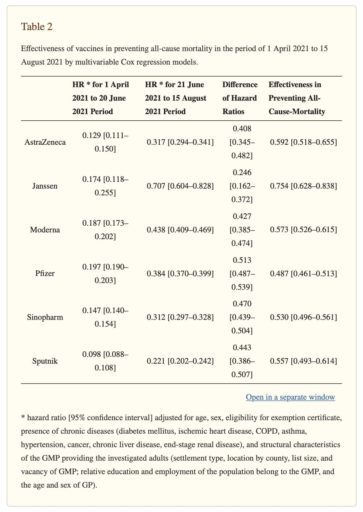
In order to adjust for the healthy vaccinee effect and other confounding variables which were not included in the regression model, the authors calculated an adjusted HR during the epidemic period relative to a baseline of the HR in the nonepidemic period. However after the adjustment, people with a Moderna vaccine ended up getting a lower mortality risk than people with a Pfizer vaccine. The authors wrote: "Because the HRs for the epidemic-free period represented the difference in survival due to healthy vaccinee effect, the epidemic HRs corrected with nonepidemic HRs were used to describe the effectiveness of vaccines in preventing all-cause mortality. Our results demonstrated that each vaccine improved the survival probabilities. In this respect, the Pfizer vaccine (VE: 0.513, 95% CI 0.487–0.539) showed a weaker protective effect than the other vaccines (Janssen VE: 0.246, 95% CI 0.162–0.372; AstraZeneca VE: 0.408, 95% CI 0.345–0.482; Moderna VE: 0.427, 95% CI 0.385–0.474; Sputnik VE: 0.443, 95% CI 0.386–0.507; Sinopharm VE: 0.470, 95% CI 0.439–0.504) (Table 2)."
The supplementary PDF includes this table which shows that different vaccine types had different profiles of risk factors and socioeconomic variables: [https://www.ncbi.nlm.nih.gov/pmc/articles/PMC9319484/bin/vaccines-10-01009-s001.zip]
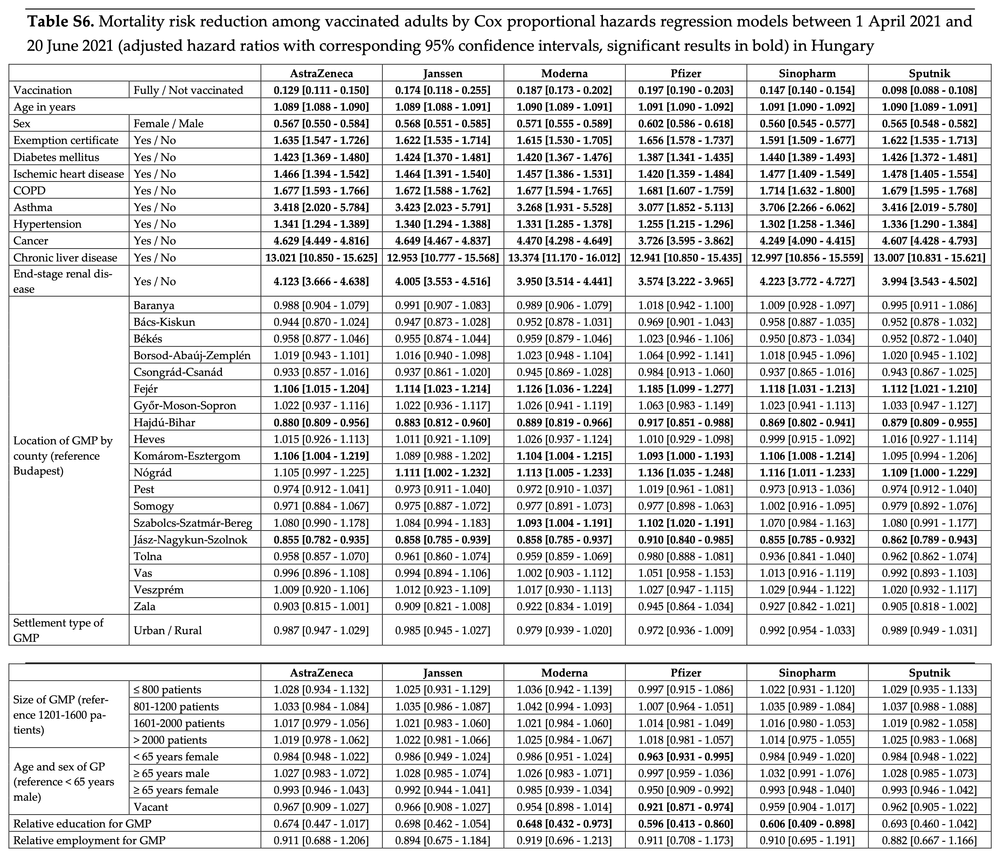
The authors also wrote: "The structural indicators of GMPs showed no consequent association with survival, but significant geographical variability could be observed for each vaccine group, and the relative education of people belonging to a GMP proved to be a significant protective factor for the Moderna, Pfizer, and Sinopharm cohorts (Table S5)."
And the discussion section of the paper also said: "It cannot be excluded that the observed variability in mortality reduction is attributable to the variability of uncontrolled confounding factors in the vaccine cohorts. For example, it was shown by our investigation that the Sputnik and Janssen vaccines were preferred among younger adults with advantageous social status, while Pfizer was preferred among older adults with chronic diseases. Therefore, it is also highly probable that Pfizer was preferred among patients with diseases not controlled for in our investigation, and adults with better social status were less exposed to chronic diseases not controlled for in our investigation."
In the Hungarian study I linked above, the authors calculated a normalized hazard ratio for different vaccine types by adjusting the HR during a COVID period with the HR in summer 2021 when there was a low number of COVID deaths. The adjustment caused Moderna vaccines to get a lower HR than Pfizer, even though without the adjustment Pfizer got a lower HR than Moderna.
Similarly in the Czech data when I divided the ASMR in December 2021 when there was a high number of COVID deaths with the ASMR in July 2021 when there were almost no COVID deaths, the ratio was lower for people who got a Moderna vaccine for the first dose than people who got a Pfizer vaccine for the first dose:
> std=fread("http://sars2.net/f/czcensus2021pop.csv")
> std=std[,.(pop=sum(pop)),.(age=pmin(age,95)%/%5*5)][,pop/sum(pop)]
> b=fread("http://sars2.net/f/czbucketskeep.csv.gz")
> b=b[dose<=1&type!="Other"][,age:=pmin(age,95)%/%5*5][dose==0,type:="Unvaccinated"]
> d=b[,.(dead=sum(dead),alive=sum(alive)),.(type,month,age)]
> d=d[,.(asmr=sum(dead/alive*std[age/5+1]*365e5)),.(month,type)]
> d[,.(ratio=asmr[month=="2021-12"]/asmr[month=="2021-07"]),type][order(ratio)]|>print(r=F)
type ratio
Moderna 1.312
Pfizer 1.544
AstraZeneca 1.742
Unvaccinated 1.905
Janssen 2.231
In the code above Janssen got a huge ratio because Janssen vaccines have a much later average date of vaccination than the other types, so in July 2021 many people had still recently received a Janssen vaccine so they were subject to the temporal healthy vaccinee effect.
So next I tried using the ASMR from May to December 2022 as the baseline instead, and I compared it to the combined ASMR in November and December 2021. And now Janssen expectedly got a much lower ratio. But Moderna still had a lower ratio than Pfizer:
> d2=b[,period:=ifelse(month%in%c("2021-11","2021-12"),1,ifelse(month>="2022-05",2,NA))]
> d2=d2[,.(dead=sum(dead),alive=sum(alive)),.(type,period,age)]
> d2=d2[,.(asmr=sum(dead/alive*std[age/5+1]*365e5)),.(period,type)]
> d2[!is.na(period),.(ratio=asmr[period==1]/asmr[period==2]),type][order(ratio)]|>print(r=F)
type ratio
Moderna 1.027
Pfizer 1.144
AstraZeneca 1.243
Janssen 1.306
Unvaccinated 2.053
Another confounding factor between different vaccine types is that some types had more doses given to males (and of course males have higher mortality rates within age groups and males are more likely to die of COVID). However the percentage of first doses given to males was about 48.0% for the type "Comirnaty" (Pfizer) but about 47.0% for the type "SPIKEVAX" (Moderna), so it cannot explain why Moderna got higher ASMR than Pfizer. However Janssen vaccines were given to 57% males which might partially explain why Janssen vaccines got such high ASMR:
> rec=fread("CR_records.csv")
> d=rec[,.N,.(type=OckovaciLatka_1,sex=Pohlavikod)][,dcast(.SD,type~sex,value.var="N")]
> d[,.(type,malepct=M/(F+M)*100,doses=F+M)][order(-doses)]|>print(r=F)
type malepct doses
Comirnaty 48.04 5579925
51.29 4046233
SPIKEVAX 47.01 526000
VAXZEVRIA 44.16 447300
COVID-19 Vaccine Janssen 56.89 410057
Nuvaxovid 46.08 5421
Comirnaty Omicron XBB.1.5. 47.91 1916
Comirnaty Original/Omicron BA.4/BA.5 50.08 661
Comirnaty Original/Omicron BA.1 45.21 292
Sinovac 34.08 179
Comirnaty 6m-4 55.86 111
Covishield 57.66 111
Comirnaty Omicron XBB.1.5. 5-11 46.32 95
Sinopharm 51.43 35
Covovax 27.59 29
COMIRNATY OMICRON XBB.1.5 6m-4 38.46 26
Spikevax bivalent Original/Omicron BA.1 46.67 15
Sputnik V 60.00 10
COVAXIN 20.00 5
Nuvaxovid XBB 1.5 33.33 3
Valneva 50.00 2
SPIKEVAX BIVALENT ORIGINAL/OMICRON BA.4-5 NA NA
type malepct doses
The 4th file from here has COVID deaths grouped by single year of age, sex, and region: https://onemocneni-aktualne.mzcr.cz/api/v2/covid-19. Only one person in the file was missing an age and none were missing the sex or region. But anyway in the file males account for about 56% of all COVID deaths, and the percentage of male COVID deaths rises up to about 68% in ages 60-69:
> dead=fread("umrti.csv")
> d=dead[,.N,.(sex=pohlavi,age=factor(vek%/%10*10))]
> d=rbind(d,d[,.(N=sum(N),age="Total"),sex])
> d=d[,.(male=N[sex=="M"],female=N[sex=="Z"]),age][order(age)]
> d[,.(malepct=round(male/(male+female)*100)),age][!is.na(age)]|>print(r=F)
age malepct
0 25
10 71
20 58
30 65
40 63
50 66
60 68
70 62
80 51
90 39
100 22
Total 56
Kirsch sent this message to me:
so I loved your acm chart that truther used. It shows the mortality of the unvaxxed got lower in 2023 (low point was lower) but the low points for moderna and pfizer were higher in 2023 vs. 2022.
How do you explain that???? How can one go down and the other go up if the vaccines are lowering mortality?
I guess he meant higher in 2022 vs 2021. But the simple answer to his question is that in 2021 people were still subject to the temporal HVE after their first dose.
Similarly in early 2022 people with three doses had low ASMR because they were subject to the temporal HVE:

This GIF file also shows that in you remove under earlier doses after a new dose, it results in a huge increase in the ASMR of people with one dose:

library(data.table);library(ggplot2)
download.file("http:/sars2.net/f/czbucketskeep.csv.gz","czbucketskeep.csv.gz")
b=fread("czbucketskeep.csv.gz")
std=fread("czcensus2021pop.csv")[,sum(pop),pmin(age,95)%/%5][,V1/sum(V1)]
d=b[!(dose>0&type%in%c("","Other","Novavax"))]
d=d[dose==0,type:="Unvaccinated"]
d[,dose:=ifelse(dose==0,"Unvaccinated",paste0("Dose ",pmin(dose,4),"+"))]
d$dose=factor(d$dose,c("Unvaccinated",paste0("Dose ",1:4,"+")))
d=d[,.(dead=sum(dead),alive=sum(as.double(alive))),.(age=pmin(age,95)%/%5*5,type,dose,month)]
p=d[,.(asmr=sum(dead/alive*std[age/5+1]*365e5),alive=sum(alive)),.(type,dose,month)]
p$type=factor(p$type,p[,sum(alive),type][order(-V1)]$type)
p$month=as.Date(paste0(p$month,"-1"))
setorder(p,type,dose,month)
p$asmr[p$alive<3e4]=NA
xstart=as.Date("2020-1-1");xend=as.Date("2023-1-1")
xbreak=seq(xstart,xend,"6 month");xlab=c(rbind("",2020:2022),"")
ymax=max(p$asmr,na.rm=T);ystep=1000
ystart=0;yend=max(p$asmr,na.rm=T);ybreak=seq(ystart,yend,ystep)
ylab=c("",paste0(ybreak[-1]/1e3,"k"))
color=c("black",hsv(c(12,23,26,31)/36,c(.4,.6,.8,.8),c(.9,1,.8,.5)))
ggplot(p,aes(x=month+15))+
facet_wrap(~type,scales="free_y",ncol=1,strip.position="top")+
geom_hline(yintercept=ybreak,linewidth=.25,color="gray85")+
geom_vline(xintercept=seq(xstart,xend,"3 month"),linewidth=.25,color="gray85")+
geom_vline(xintercept=seq(xstart,xend,"year"),linewidth=.25,lineend="square")+
geom_hline(yintercept=c(ystart,yend),linewidth=.25,lineend="square")+
geom_line(aes(y=asmr,color=dose),linewidth=.35)+
geom_point(aes(y=asmr,color=dose),size=.5)+
geom_label(data=unique(p,by="type"),aes(label=paste0("\n ",type," \n")),x=xstart,y=yend,lineheight=.6,hjust=0,vjust=1,size=2.3,fill="white",label.r=unit(0,"lines"),label.padding=unit(0,"lines"),label.size=.25)+
labs(x=NULL,y=NULL,title="Czech record-level data: Monthly ASMR by vaccine type and dose",subtitle="The ASMR is not displayed on months with less than 30,000 person-days.\nThe standard population is the 2021 census population by 5-year age groups.")+
scale_x_date(limits=c(xstart,xend),breaks=xbreak,labels=xlab)+
scale_y_continuous(limits=c(ystart,yend),breaks=ybreak,labels=ylab)+
scale_color_manual(values=color)+
scale_fill_manual(values=color)+
coord_cartesian(clip="off",expand=F)+
guides(color=guide_legend(nrow=1,byrow=F))+
theme(axis.text=element_text(size=7,color="black"),
axis.ticks=element_line(linewidth=.25),
axis.ticks.x=element_line(color=alpha("black",c(1,0))),
axis.ticks.y=element_line(color=alpha("black",c(0,rep(1,length(ybreak)-1)))),
axis.ticks.length=unit(2,"pt"),
legend.background=element_blank(),
legend.box.spacing=unit(0,"pt"),
legend.direction="horizontal",
legend.justification=c(1,.5),
legend.key.height=unit(10,"pt"),
legend.key.width=unit(13,"pt"),
legend.key=element_rect(fill=alpha("white",0)),
legend.margin=margin(2),
legend.position="bottom",
legend.spacing.x=unit(2,"pt"),
legend.text=element_text(size=7,vjust=.5),
legend.title=element_blank(),
panel.spacing=unit(0,"lines"),
panel.background=element_rect(fill="white"),
panel.grid=element_blank(),
plot.margin=margin(4,5,4,4),
plot.subtitle=element_text(size=6.5,margin=margin(0,0,3,0)),
plot.title=element_text(size=7,face="bold",margin=margin(1,0,4,0)),
strip.background=element_blank(),
strip.text=element_blank())
ggsave("1.png",width=3.4,height=4.7,dpi=450)
The plot below shows an excess mortality percent calculated the same way as in earlier. The x-axis shows the quarter of vaccination and the y-axis shows the quarter of death. The plot only includes first doses and people remain included under the first dose after a second dose.
The x-axis shows in the first two quarters all vaccine types had low mortality, because people were still subject to the temporal healthy vaccinee effect after the first dose.
However the y-axis shows that there was a sudden increase in mortality in people who were vaccinated in the third quarter of 2021 or later. For people who were vaccinated in the fourth quarter of 2021, Pfizer had about 42% excess mortality but Moderna had 45% excess mortality, so the ratio between Moderna and Pfizer was close to 1, but during the next three quarters the ratio fell below 1 because Moderna had lower excess mortality than Pfizer:

The next plot is otherwise the same except I included all doses instead of only first doses, and I also removed people under earlier doses after a new dose. Now AstraZeneca has a massive increase in excess mortality in the first quarter of 2022, which is because almost no people got a booster dose from an AstraZeneca vaccine, so the healthy vaccinees moved under another vaccine brand in the first quarter of 2021. Now the y-axis shows the month of most recent vaccination, so in the first quarter of 2021 there's a huge increase in the excess mortality of people whose most recent vaccine was in the first three quarters of 2021:

library(data.table)
system("wget sars2.net/f/czbuckets{,keep}.csv.gz")
# first plot
b=fread("czbucketskeep.csv.gz")[,age:=pmin(age,95)]
d=merge(b[dose==1&month>=2021&vaxmonth>=2021],b[dose<=1,.(base=sum(dead)/sum(alive)),.(age,month)])[,base:=alive*base]
# # second plot
# b=fread("czbuckets.csv.gz")[,age:=pmin(age,95)]
# d=merge(b[dose>0&month>=2021&vaxmonth>=2021],b[,.(base=sum(dead)/sum(alive)),.(age,month)])[,base:=alive*base]
quar=\(x){u=unique(x);paste0(substr(u,1,4),"Q",(as.numeric(substr(u,6,7))-1)%/%3+1)[match(x,u)]}
d=d[,.(dead=sum(dead),alive=sum(as.double(alive)),base=sum(base)),
.(month=factor(quar(month)),vaxmonth=factor(quar(vaxmonth)),type)]
d=rbind(d,d[,.(dead=sum(dead),alive=sum(alive),base=sum(base),month="Total"),.(vaxmonth,type)])
d=rbind(d,d[,.(dead=sum(dead),alive=sum(alive),base=sum(base),vaxmonth="Total"),.(month,type)])
types=c("Pfizer","Moderna","AstraZeneca","Janssen")
maxcolor=300;exp=.8
for(i in 1:length(types)){
disp=d[type==types[i],tapply((dead/base-1)*100,list(vaxmonth,month),round)]
m=d[type==types[i],tapply((dead-base)*100/ifelse(dead>base,base,dead),list(vaxmonth,month),c)]
disp[lower.tri(disp)&row(disp)!=nrow(disp)]=""
m[is.infinite(m)]=-maxcolor
pheatmap::pheatmap(abs(m)^exp*sign(m),filename=paste0("i",i,".png"),display_numbers=disp,
gaps_col=ncol(m)-1,gaps_row=nrow(m)-1,main=types[i],
cluster_rows=F,cluster_cols=F,legend=F,
cellwidth=18,cellheight=18,fontsize=9,fontsize_number=8,border_color=NA,na_col="white",
number_color=ifelse(!is.na(m)&abs(m)^exp>.5*maxcolor^exp,"white","black"),
breaks=seq(-maxcolor^exp,maxcolor^exp,,256),
colorRampPalette(hsv(rep(c(7/12,0),4:5),c(.9,.75,.6,.3,0,.3,.6,.75,.9),c(.4,.65,1,1,1,1,1,.65,.4)))(256))
}
system("montage -tile 2x i[1-4].png -geometry +0+10 0.png;convert 0.png -trim -bordercolor white -border 32 1.png")
Uncle John Returns posted the tables below on Twitter and wrote: "Turns out that those Czechs who received a dose of Moderna in 2021 were twice as likely to have a pre-existing chronic condition as those who had Pfizer with AZ higher still. [...] The source is a ministry of health file which has 1 row per dose (so 3.68 GB) with other data such as the age band, sex and place of residence. Available on the vaccinations tab here https://onemocneni-aktualne.mzcr.cz/api/v2/covid-19." [https://x.com/UncleJo46902375/status/1814375808062112215]


The value of the indikace_chronicke_onemocneni field (indication chronic disease) is always either 1 or empty.
For first doses, the overall percentage of chronic diseases was surprisingly low because it was under 10% in all age groups except ages 65-69:
download.file("https://onemocneni-aktualne.mzcr.cz/api/v2/covid-19/ockovani-profese.csv","ockovani-profese.csv")
t=fread("ockovani-profese.csv")
d=t[poradi_davky==1&vekova_skupina!="nezařazeno",.(
.N,chronic=sum(indikace_chronicke_onemocneni,na.rm=T)),.(
type=vakcina,age=as.numeric(sub("[+-].*","",vekova_skupina)))]
d[,.(chronicpct=round(sum(chronic)/sum(N)*100,1)),age][order(age)]|>print(r=F)
age chronicpct 0 1.5 5 0.0 12 0.1 16 0.6 18 1.3 25 1.7 30 1.9 35 2.4 40 3.0 45 3.9 50 5.1 55 6.6 60 8.6 65 11.1 70 5.3 75 2.1 80 1.1
When I calculated an age-normalized prevalence of chronic conditions relative to the prevalence among all people who are included in the CSV file for each age group, the excess prevalence was about -26% for the first dose type "Comirnaty" (Pfizer) but about 55% for "SPIKEVAX" (Moderna):
a=d[,.(N=sum(N),chronic=sum(chronic)),.(age,type)] a=merge(a,d[,.(base=sum(chronic)/sum(N)),age])[,base:=base*N] a[,.(pct=round((sum(chronic)/sum(base)-1)*100),N=sum(N)),type][order(-N)]|>print(r=F)
type pct N
Comirnaty -26 5527776
SPIKEVAX 55 526448
VAXZEVRIA 252 447428
COVID-19 Vaccine Janssen -35 412320
Comirnaty 5-11 31 59001
Nuvaxovid -91 5424
Comirnaty Omicron XBB.1.5. 6 1988
Comirnaty Original/Omicron BA.4/BA.5 -33 669
Comirnaty Original/Omicron BA.1 77 294
Sinovac -72 181
Covishield -100 117
Comirnaty 6m-4 -100 111
Comirnaty Omicron XBB.1.5. 5-11 -31 102
Sinopharm -100 38
COMIRNATY OMICRON XBB.1.5 6m-4 150 29
Covovax -33 29
Spikevax bivalent Original/Omicron BA.1 -100 15
Sputnik V -100 10
Nuvaxovid XBB 1.5 -100 8
COVAXIN -100 5
SPIKEVAX BIVALENT ORIGINAL/OMICRON BA.4-5 310 5
Valneva -100 2
type pct N
I was expecting the late vaccinees who got the first dose in late 2020 to have a higher age-normalized prevalence of chronic disease than people who got vaccinated during the rollout peak, but for some reason I got the opposite result:

This shows the percentage of people by age group and vaccine type who were indicated as having a chronic disease. I again only included first doses:
t=fread("ockovani-profese.csv")
name1=unique(t$vakcina);name2=rep("Other",length(name1))
name2[name1==""]=""
name2[grep("comirnaty",ignore.case=T,name1)]="Pfizer"
name2[grep("spikevax",ignore.case=T,name1)]="Moderna"
name2[grep("nuvaxovid",ignore.case=T,name1)]="Novavax"
name2[name1=="COVID-19 Vaccine Janssen"]="Janssen"
name2[name1=="VAXZEVRIA"]="AstraZeneca"
t$type=name2[match(t$vakcina,name1)]
a=t[poradi_davky==1&vekova_skupina!="nezařazeno",.(.N,chronic=sum(indikace_chronicke_onemocneni,na.rm=T)),.(
type,age=as.integer(sub("[-+].*","",vekova_skupina)))]
a[,age:=factor(age,unique(age)[order(as.numeric(sub("[-+].*","",unique(age))))])]
a[,type:=factor(type,a[,sum(N),type][order(-V1)]$type)]
a=rbind(a,a[,.(N=sum(N),chronic=sum(chronic),age="Total"),type])
a=rbind(a,a[,.(N=sum(N),chronic=sum(chronic),type="Total"),age])
a[,tapply(round(chronic/N*100),.(type,age),c)]
0 5 12 16 18 25 30 35 40 45 50 55 60 65 70 75 80 Total Pfizer 1 0 0 1 1 1 2 2 2 3 4 5 6 7 3 1 1 3 Moderna NA NA 0 1 3 4 4 5 5 7 8 10 12 16 7 3 2 7 AstraZeneca NA NA NA 14 17 16 19 20 21 25 28 31 34 39 12 4 3 17 Janssen NA NA 0 0 1 1 1 1 2 3 3 4 5 5 5 5 4 3 Novavax NA NA 0 0 0 0 0 0 0 0 1 0 1 2 0 1 2 0 Other NA 0 NA 0 0 0 0 0 0 3 0 8 0 4 0 0 0 1 Total 1 0 0 1 1 2 2 2 3 4 5 7 9 11 5 2 1 4
This shows third doses instead of first doses:
0 5 12 16 18 25 30 35 40 45 50 55 60 65 70 75 80 Total Pfizer 0 0 0 1 2 2 3 3 4 5 6 7 9 11 5 2 1 5 Moderna NA NA 0 2 3 4 4 5 5 7 8 10 13 17 8 3 2 7 AstraZeneca NA NA NA NA 0 0 0 12 9 9 16 33 28 30 3 6 5 12 Janssen NA NA NA NA 2 4 4 4 5 5 6 9 7 9 4 3 3 5 Novavax NA NA 0 100 7 0 0 3 0 0 6 0 0 6 5 0 12 3 Other NA NA NA NA NA 0 0 0 0 0 0 0 0 0 0 0 NA 0 Total 0 0 0 1 2 3 3 3 4 5 6 8 9 12 6 2 1 5
In both of the tables above Novavax got a lower percentage than Pfizer, which might partially explain people with a Novavax vaccine have such low mortality.
Here's code for making the heatmap:
# download.file("https://onemocneni-aktualne.mzcr.cz/api/v2/covid-19/ockovani-profese.csv","ockovani-profese.csv")
library(data.table)
t=fread("ockovani-profese.csv")
yemo=\(x,y){u=unique(x);p=as.POSIXlt(`class<-`(u,"Date"));sprintf("%d-%02d",p$year+1900,p$mon+1)[match(x,u)]}
name1=unique(t$vakcina);name2=rep("Other",length(name1))
name2[name1==""]=""
name2[grep("comirnaty",ignore.case=T,name1)]="Pfizer"
name2[grep("spikevax",ignore.case=T,name1)]="Moderna"
name2[grep("nuvaxovid",ignore.case=T,name1)]="Novavax"
name2[name1=="COVID-19 Vaccine Janssen"]="Janssen"
name2[name1=="VAXZEVRIA"]="AstraZeneca"
t$type=name2[match(t$vakcina,name1)]
d=t[year(datum)<=2022&poradi_davky==1,.(.N,chronic=sum(indikace_chronicke_onemocneni,na.rm=T)),.(
month=yemo(datum),type,age=vekova_skupina)][age!="nezařazeno"]
a=d[,.(N=sum(N),chronic=sum(chronic)),.(age,type,month)]
a=merge(a,d[,.(base=sum(chronic)/sum(N)),age])[,base:=base*N]
a=a[,.(chronic=sum(chronic),N=sum(N),base=sum(base)),.(type,month)]
a[,type:=factor(type,names(sort(a[,tapply(N,type,sum)],T)))]
a=rbind(a,a[,.(chronic=sum(chronic),N=sum(N),base=sum(base),month="Total"),type])
a=rbind(a,a[,.(chronic=sum(chronic),N=sum(N),base=sum(base),type="Total"),month])
m1=a[,tapply(chronic,.(type,month),c)]
m2=a[,tapply(base,.(type,month),c)]
pop=a[,xtabs(N~type+month)]
m=(m1-m2)/ifelse(m1>m2,m2,m1)*100
disp=round((m1/m2-1)*100)
exp=.82;maxcolor=500
m[m==-Inf]=-maxcolor
pheatmap::pheatmap(abs(m)^exp*sign(m),filename="i1.png",display_numbers=disp,
gaps_row=nrow(m)-1,gaps_col=ncol(m)-1,
cluster_rows=F,cluster_cols=F,legend=F,cellwidth=19,cellheight=19,fontsize=9,fontsize_number=8,
border_color=NA,na_col="gray90",
number_color=ifelse((abs(m)^exp>.55*maxcolor^exp)&!is.na(m),"white","black"),
breaks=seq(-maxcolor^exp,maxcolor^exp,,256),
colorRampPalette(hsv(rep(c(7/12,0),5:4),c(.9,.75,.6,.3,0,.3,.6,.75,.9),c(.4,.65,1,1,1,1,1,.65,.4)))(256))
kimi=\(x){e=floor(log10(ifelse(x==0,1,abs(x))));e2=pmax(e,0)%/%3+1;p=!is.na(x)
x[p]=paste0(sprintf(paste0("%.",ifelse(e[p]%%3==0,1,0),"f"),x[p]/1e3^(e2[p]-1)),c("","k","M","B","T")[e2[p]]);x}
exp2=.6;maxcolor2=max(pop[-nrow(pop),-ncol(pop)])
pheatmap::pheatmap(pop^exp2,filename="i2.png",display_numbers=ifelse(pop<=10,round(pop),kimi(pop)),
gaps_row=nrow(m)-1,gaps_col=ncol(m)-1,
cluster_rows=F,cluster_cols=F,legend=F,cellwidth=19,cellheight=19,fontsize=9,fontsize_number=8,
border_color=NA,na_col="white",
number_color=ifelse(pop^exp2>maxcolor2^exp2*.45,"white","black"),
breaks=seq(0,maxcolor2^exp2,,256),
sapply(seq(1,0,,256),\(i)rgb(i,i,i)))
cap="\u00a0 Czech MoH data: Excess percentage for age-normalized prevalence of chronic disease for people with a first dose listed. The x-axis shows the month of vaccination. The baseline is the prevalence of chronic disease by age group among all people in the CSV file who have a first dose listed in 2022 or earlier.
The direct method of age standardization was used, so that for each cell, the number of people in each age group was multiplied by the proportion of people in the same age group who were indicated as having a chronic illness in the whole CSV file, and the results for each age group were added together to get the total expected number of people with a chronic illness for the cell.
Source: onemocneni-aktualne.mzcr.cz/api/v2/covid-19, \"COVID-19: Overview of reported vaccinations by profession (place of vaccination, residence of the vaccinated person)\"."
system(paste0("w=`identify -format %w i1.png`;pad=20;magick -pointsize 40 -font Arial \\( -size $[w-pad*3]x caption:'",cap,"' -splice $[pad]x20 \\) \\( i1.png -crop -0+8 \\) \\( -size $[w-pad*3]x caption:'Number of people who received a first dose each month' -splice $[pad]x0 \\) \\( i2.png -crop -0+8 \\) -append 1.png"))
The second file from the bottom under vaccinations here has data for hospitalizations by vaccine type and age group: https://onemocneni-aktualne.mzcr.cz/api/v2/covid-19.
The file has about 7 million rows with one row for each vaccinated person. It has these columns:
id id
kraj_bydliste_nazev name of region of resicence
kraj_bydliste_kod code of region of residence
orp_bydliste_nazev name of county of residence
orp_bydliste_kod code of county of residence
vekova_kategorie age category
ockovaci_latka_nazev vaccine name
ockovaci_latka_kod vaccine code
prvni_davka date of first dose
druha_davka date of second dose
dokoncene_ockovani date when completed primary course
posilujici_davka date of booster dose
indikace_pred_ockovanim type of test before vaccination
pozivita_pred_ockovanim positivity of test before vaccination
pozivita_pred_ockovanim_datum date of positive test before vaccination
hospitalizace_pred_ockovanim hospitalized before vaccination
jip_pred_ockovanim ICU before vaccination
indikace_po_ockovani type of test after vaccination
pozivita_po_ockovani positivivity of test after vaccination
pozivita_po_ockovani_datum date of positive test after vaccination
hospitalizace_po_ockovani hospitalized after vaccination
jip_po_ockovani ICU after vaccination
The types of test are diagnostic, preventative, epidemiological, or other (ostatní). Negative tests are not listed so the type of the test is only shown for positive tests. There's only up to one test before vaccination and one test after vaccination listed for each person, and similarly there's only up to one hospitalization before vaccination and one hospitalization after vaccination listed for each person.
I used the file to calculate an age-normalized hospitalization rate from the day of the first dose up to the present. The file included data for hospitalizations up the the present month, so I used the date when I downloaded the file as the end of my observation period.
For each 17 age groups included in the file, I calculated the expected number of deaths by multiplying the person-days by the mortality rate among all people who had a first dose listed in the file.
My excess percentage of hospitalizations was about -6% for the first dose type "Comirnaty" and about -4% for the first dose type "SPIKEVAX", so it was almost the same, but AstraZeneca and particularly Janssen vaccines had a much higher hospitalization rate (but they are not mRNA vaccines unlike Pfizer and Moderna, even though it might be a coincidence):
download.file("https://onemocneni-aktualne.mzcr.cz/api/v2/covid-19/ockovani-pozitivni-hospitalizovani.csv","ockovani-pozitivni-hospitalizovani.csv")
h=fread("ockovani-pozitivni-hospitalizovani.csv")
d=h[,.(age=vekova_kategorie,date=prvni_davka,type=ockovaci_latka_nazev,hosp=hospitalizace_po_ockovani)][age!="-"]
maxdate=as.IDate("2024-7-20")
a=d[,.(hosp=sum(hosp,na.rm=T),pop=sum(as.double(maxdate-date+1))),.(type,age)]
a=merge(a,a[,.(base=sum(hosp)/sum(pop)),age])[,base:=base*pop]
a[,.(excesspct=round((sum(hosp)/sum(base)-1)*100),hospitalizations=sum(hosp),pyears=round(sum(pop/365))),type][order(-pyears)]|>print(r=F)
type excesspct hospitalizations pyears
Comirnaty -6 43053 17432607 # Pfizer
SPIKEVAX -4 6234 1657122 # Moderna
VAXZEVRIA 19 11921 1478098 # AstraZeneca
COVID-19 Vaccine Janssen 57 3576 1185707
Nuvaxovid -50 7 12140 # Novavax
Comirnaty Omicron XBB.1.5. -10 7 1349
Comirnaty Original/Omicron BA.4/BA.5 -100 0 1015
Sinovac -100 0 543
Comirnaty Original/Omicron BA.1 -100 0 454
Covishield -100 0 372
Comirnaty 6m-4 -100 0 143
Sinopharm -100 0 113
Covovax -100 0 87
Comirnaty Omicron XBB.1.5. 5-11 -100 0 62
Sputnik V -100 0 30
Spikevax bivalent Original/Omicron BA.1 -100 0 22
COVAXIN -100 0 16
COMIRNATY OMICRON XBB.1.5 6m-4 -100 0 15
SPIKEVAX BIVALENT ORIGINAL/OMICRON BA.4-5 -100 0 4
Valneva -100 0 4
Nuvaxovid XBB 1.5 -100 0 2
type excesspct hospitalizations pyears
In the code below I additionally normalized the hospitalization rate for the month of vaccination. I now only included first doses given in 2021, because otherwise I would've been more likely to get an anomalously high baseline rates for vaccination months with a low number of doses given in some age groups. However now Moderna got a slightly lower excess hospitalization percent than Pfizer which was the opposite of the previous plot. And now the hospitalization rate of Janssen vaccines reduced dramatically as expected, because late vaccinees had a higher hospitalization rate than early vaccinees, and late vaccinees are overrepresented for Janssen vaccines:
yemo=\(x,y){u=unique(x);p=as.POSIXlt(as.Date(u));sprintf("%d-%02d",p$year+1900,p$mon+1)[match(x,u)]}
d2=d[date<="2021-12-31"][,month:=yemo(date)]
a=d2[,.(hosp=sum(hosp,na.rm=T),pop=sum(as.double(maxdate-date+1))),.(type,age,month)]
a=merge(a,a[,.(base=sum(hosp)/sum(pop)),.(month,age)])[,base:=base*pop]
a=a[,.(excesspct=round((sum(hosp)/sum(base)-1)*100),hospitalizations=sum(hosp),pyears=round(sum(pop/365))),type]
a[order(-pyears)]|>print(r=F)
type excesspct hospitalizations pyears
Comirnaty -5 42775 17127673
SPIKEVAX -6 6210 1633228
VAXZEVRIA 21 11921 1478067
COVID-19 Vaccine Janssen 28 3562 1168387
Sinovac -100 0 539
Covishield -100 0 372
Sinopharm -100 0 109
Covovax -100 0 85
Sputnik V -100 0 28
COVAXIN -100 0 16
The plot below shows the excess hospitalization percent by age and the month of the first dose. There's a diagonal pattern across different age groups where there's a low excess hospitalization percent during the same month when the number of new first doses peaked in the age group:

In the plot below I didn't normalize the total excess mortality by the month of vaccination so Janssen again got 57% excess hospitalizations, because late vaccinees also had a high age-normalized hospitalization rate for other vaccine types. However even in May 2021 when the total number of doses given peaked, Janssen and AstraZeneca had a much higher total hospitalization rate than Pfizer and Moderna:

Here's code for making the heatmaps:
library(data.table)
h=fread("ockovani-pozitivni-hospitalizovani.csv")
d=h[,.(age=vekova_kategorie,date=prvni_davka,type=ockovaci_latka_nazev,hosp=hospitalizace_po_ockovani)]
d=d[age!="-"&date<"2022-01-01"]
u=unique(d$date);d$month=format(u,"%Y-%m")[match(d$date,u)]
a=d[,.(.N,hosp=sum(hosp,na.rm=T),pop=sum(as.double(as.IDate("2024-7-20")-date+1))),.(month,age)]
a=merge(a,a[,.(base=sum(hosp)/sum(pop)),age])[,base:=base*pop]
p=a[,.(N=sum(N),hosp=sum(hosp),base=sum(base),pop=sum(pop)),.(month,age)]
p=rbind(p,p[,.(N=sum(N),hosp=sum(hosp),base=sum(base),pop=sum(pop),age="Total"),month])
p=rbind(p,p[,.(N=sum(N),hosp=sum(hosp),base=sum(base),pop=sum(pop),month="Total"),age])
m=p[,tapply((hosp-base)/ifelse(hosp>base,base,hosp)*100,.(age,month),c)]
disp=p[,tapply((hosp/base-1)*100,.(age,month),round)]
pop=p[,xtabs(N~age+month)]
exp=.7;maxcolor=300;m[m==-Inf]=-maxcolor
pheatmap::pheatmap(abs(m)^exp*sign(m),filename="i1.png",display_numbers=disp,
gaps_row=nrow(m)-1,gaps_col=ncol(m)-1,
cluster_rows=F,cluster_cols=F,legend=F,cellwidth=19,cellheight=19,fontsize=9,fontsize_number=8,
border_color=NA,na_col="gray90",
number_color=ifelse((abs(m)^exp>.55*maxcolor^exp)&!is.na(m),"white","black"),
breaks=seq(-maxcolor^exp,maxcolor^exp,,256),
colorRampPalette(hsv(rep(c(7/12,0),5:4),c(.9,.75,.6,.3,0,.3,.6,.75,.9),c(.4,.65,1,1,1,1,1,.65,.4)))(256))
kimi=\(x){e=floor(log10(ifelse(x==0,1,abs(x))));e2=pmax(e,0)%/%3+1;p=!is.na(x)
x[p]=paste0(sprintf(paste0("%.",ifelse(e[p]%%3==0,1,0),"f"),x[p]/1e3^(e2[p]-1)),c("","k","M","B","T")[e2[p]]);x}
exp2=.6;maxcolor2=max(pop[-nrow(pop),-ncol(pop)])
pheatmap::pheatmap(pop^exp2,filename="i2.png",display_numbers=ifelse(pop<=10,round(pop),kimi(pop)),
gaps_row=nrow(m)-1,gaps_col=ncol(m)-1,
cluster_rows=F,cluster_cols=F,legend=F,cellwidth=19,cellheight=19,fontsize=9,fontsize_number=8,
border_color=NA,na_col="white",
number_color=ifelse(pop^exp2>maxcolor2^exp2*.45,"white","black"),
breaks=seq(0,maxcolor2^exp2,,256),
sapply(seq(1,0,,256),\(i)rgb(i,i,i)))
cap="\u00a0 Czech MoH data: Excess percentage for age-normalized hospitalization rate for people with a first dose listed in 2021. The x-axis shows the month of vaccination. The baseline is the hospitalization rate among people in the same age group in the CSV file who got a first dose in 2021. The hospitalization rate was calculated from the day of the first dose until July 20th 2024.
Source: onemocneni-aktualne.mzcr.cz/api/v2/covid-19, tab for vaccinations, second file from bottom translated as \"COVID-19: Overview of persons with reported vaccinations with regard to SARS-CoV-2 infection\"."
system(paste0("pad=24;w=`identify -format %w i1.png`;magick -pointsize 40 -font Arial \\( -size $[w*2-pad*3] caption:'",cap,"' -splice $[pad]x20 \\) -font Arial-Bold \\( \\( \\( -size $[w-pad*3] caption:'Excess hospitalization percentage' -splice $[pad]x20 \\) i1.png -append \\) \\( \\( -size $[w-pad*2] caption:'Number of people who received a first dose each month' -splice $[pad]x20 \\) i2.png -append \\) +append \\) -append 1.png"))
I have been telling Kirsch that if the reason why Moderna has higher ASMR than Pfizer would be because Moderna vaccines were killing a lot more people, you'd expect the Moderna-Pfizer ratio to be higher in the first days or weeks following vaccination and get closer to 1.0 over time, because deaths caused by vaccines would probably be much more common in the days or weeks following vaccination than more than a year after vaccination.
However this plot shows that the Moderna-Pfizer ratio remains at a consistent level of about 1.1 to 1.6 until it shoots up at the very end of the plot (when there's only a small number of people who got vaccinated early enough that they had not yet ran out of follow-up time):

In the black line the ratio was only normalized by age. In the gray line the ratio was additionally normalized by ongoing month, but it didn't change the results that much.
But anyway, you would at least think that there would be more vaccine deaths in weeks 0 to 29 than weeks 60 to 89. But because the Moderna-Pfizer ratio remains consistently elevated even more than a year after vaccination, it rather seems to be the product of the same kind of confounding factors which also cause late vaccinees to have much higher age-normalized mortality than early vaccinees.
b=data.table::fread("http://sars2.net/f/czbucketskeep.csv.gz")
b[,age:=pmax(pmin(95,age%/%5*5),15)]
d=merge(b[dose==1],b[dose<=1,.(base2=sum(dead)/sum(alive)),.(month,age)])[,base2:=base2*alive]
d=merge(d,b[dose<=1,.(base1=sum(dead)/sum(alive)),age],by="age")[,base1:=base1*alive]
d=d[,.(rate1=sum(dead)/sum(base1),rate2=sum(dead)/sum(base2)),.(week,type)]
a1=d[,xtabs(rate1~week+type)];r1=a1[,"Moderna"]/a1[,"Pfizer"]
a2=d[,xtabs(rate2~week+type)];r2=a2[,"Moderna"]/a2[,"Pfizer"]
week=unique(d$week)
png("1.png",1300,800,res=198)
par(mar=c(2.3,2.3,2.1,.8),mgp=c(0,.6,0))
tit="Age-normalized Moderna-Pfizer ratio by weeks after first dose"
leg=c("Normalized by age only","Normalized by age and ongoing month")
col=c("black","gray60")
plot(week,r1,type="l",col=col[1],main=tit,xlab=NA,ylab=NA,lwd=1.5,cex.main=1.1)
abline(h=1,lty=2)
lines(week,r2,type="l",col=col[2],lwd=1.5)
legend("bottom",legend=leg,col=col,lty=1,lwd=1.5)
dev.off()
The following code calculates an age-normalized excess hospitalization percentage relative to a baseline of unvaccinated people.
I combined two different CSV files published by the Czech ministry of health: https://onemocneni-aktualne.mzcr.cz/api/v2/covid-19.
I took hospitalizations by vaccine type from the same CSV file as earlier. It's missing the date of hospitalization but it only has a field which indicates if a person has been hospitalized after vaccination or not, so I had to calculate the hospitalization rate up to the present day and I wasn't able to choose which day my observation period ended.
I took hospitalizations in unvaccinated people from another CSV file published by the MoH. But I didn't find a good way to calculate the number of person-days for unvaccinated people by age group up to the present day, so I took the number of person-days for unvaccinated people from one of my buckets files, so that I used the number of person-days in each age group in December 2022 as the subsequent population size up to July 2024 so that I adjusted the person-days for the length of each month.
library(data.table)
yemo=\(x,y){u=unique(x);p=as.POSIXlt(as.Date(u));sprintf("%d-%02d",p$year+1900,p$mon+1)[match(x,u)]}
system("wget onemocneni-aktualne.mzcr.cz/api/v2/covid-19/ockovani{,-hospitalizace-tyden,-pozitivni-hospitalizovani}.csv sars2.net/f/czbucketsdaily.csv.gz")
ho=fread("ockovani-hospitalizace-tyden.csv")
unvax=ho[,.(hosp=hospitalizovani_bez_ockovani),.(date=tyden_od+3,age=pmax(25,pmin(80,as.numeric(sub("[-+].*","",vekova_skupina)))))][,spline(date,hosp/7,xout=min(date):max(date)),age][,.(hosp=sum(y)),.(age,month=yemo(`class<-`(x,"Date")))]
maxdate=as.IDate("2024-7-20")
unvaxpop=fread("czbucketsdaily.csv.gz")[dose==0][,.(pop=sum(alive)),.(month=yemo(date),age=pmax(pmin(age,80),25)%/%5*5)]
unvaxpop=rbind(unvaxpop,unvaxpop[month=="2022-12",.(pop,month=seq(as.Date("2023-1-1"),as.Date("2024-7-1"),"month")),age][,pop:=pop/31*ifelse(month==as.Date("2024-7-1"),20,lubridate::days_in_month(month))][,month:=yemo(month)][])
hosp=fread("ockovani-pozitivni-hospitalizovani.csv")
hospi=hosp[,.(age=vekova_kategorie,date=prvni_davka,type=ockovaci_latka_nazev,hosp=hospitalizace_po_ockovani)][age!="-"]
name1=unique(hospi$type);name2=rep("Other",length(name1))
name2[name1==""]=""
name2[grep("comirnaty",ignore.case=T,name1)]="Pfizer"
name2[grep("spikevax",ignore.case=T,name1)]="Moderna"
name2[grep("nuvaxovid",ignore.case=T,name1)]="Novavax"
name2[name1=="COVID-19 Vaccine Janssen"]="Janssen"
name2[name1=="VAXZEVRIA"]="AstraZeneca"
hospi$type=name2[match(hospi$type,name1)]
a=hospi[,.(hosp=sum(hosp,na.rm=T),pop=sum(as.double(as.IDate("2024-7-20")-date+1))),.(age=pmax(25,pmin(80,as.numeric(sub("[+-].*","",age)))),type)]
a=merge(a,merge(unvax,unvaxpop)[,.(hosp=sum(hosp),pop=sum(pop)),age][,.(base=hosp/pop,age)])[,base:=base*pop][]
a[,.(excesspct=(sum(hosp)/sum(base)-1)*100),type][order(-excess),excess:=round(excess)][]|>print(r=F)
I only considered first doses in the code above. The output shows that the excess hospitalization percent was about -79% for people whose first dose was Pfizer, -77% for Moderna, -71% for AstraZeneca, and -68% for Janssen:
type excesspct
Pfizer -79
Moderna -77
Novavax -91
AstraZeneca -71
Janssen -68
Other -100
So in other words unvaccinated people had about 5 times higher age-normalized hospitalization rate than people who got a Pfizer vaccine for the first dose, or Pfizer vaccines had about 79% efficacy in preventing hospitalization relative to the baseline of unvaccinated people.
Novavax got an excess hospitalization percent of -91% above, but it's because people only started getting Novavax vaccines in March 2022 after which there weren't that many people hospitalized for COVID. The CSV file I used to get hospitalization data by vaccine type is missing the date of hospitalization, so I wasn't able to adjust my excess mortality percent for the ongoing month.
There were zero hospitalizations in people who got a vaccine from the other rare types, so the excess hospitalization percent was -100%.
But anyway, my results roughly seem to match the record-level data which shows that during the COVID wave in the last two months of 2021, the spike in all-cause ASMR was higher for Janssen and AstraZeneca but more flat for Moderna and Pfizer.
In June 2024 the Czech authors who uploaded the record-level data to GitHub published a paper which analyzed batch safety data they received through a freedom of information response: https://onlinelibrary.wiley.com/doi/abs/10.1111/eci.14271. The paper is behind a paywall, but I bought access to it and posted screenshots of the paper here: i/czech-batch-study.jpg. The batch data can be downloaded from here: https://github.com/PalackyUniversity/batch-dependent-safety/blob/main/data/SUKL-batches-AE.xlsx.
In the spreadsheet posted at GitHub, Pfizer vaccines got a lower rate of deaths than Moderna vaccines but a higher rate of serious adverse events:
library(data.table);library(openxlsx)
f="SUKL-batches-AE.xlsx"
download.file("https://github.com/PalackyUniversity/batch-dependent-safety/raw/main/data/SUKL-batches-AE.xlsx",f)
s1=data.table(read.xlsx(f))[,.(doses=sum(doses_per_batch)),name]
s2=data.table(read.xlsx(f,sheet=2))[,.(dead=sum(deaths),serious=sum(serious)),name]
me=merge(s1,s2,all=T)
name=rep("Other",nrow(me))
name[grep("COMIRNATY",me$name)]="Pfizer"
name[grep("MODERNA|SPIKEVAX",me$name)]="Moderna"
name[grep("NUVAXOVID",me$name)]="Novavax"
name[grep("JANSSEN",me$name)]="Janssen"
name[grep("VAXZEVRIA|ASTRAZENECA",me$name)]="AstraZeneca"
me$name=name
me[is.na(me)]=0
me=me[,.(dead=sum(dead),serious=sum(serious),doses=sum(doses)),name]
me=me[,.(doses,name,dead,serious,deadpermil=dead/doses*1e6,seriouspermil=serious/doses*1e6)]
me[order(-doses)]|>dplyr::mutate_if(is.double,round,1)|>print(r=F)
name doses dead serious deadpermil seriouspermil
Pfizer 28343760 134 5183 4.7 182.9
Moderna 3798150 26 583 6.8 153.5
AstraZeneca 1113200 44 695 39.5 624.3
Janssen 776800 10 241 12.9 310.2
Novavax 632000 0 4 0.0 6.3
Other 64800 2 13 30.9 200.6
If Pfizer is used as the baseline, the number of deaths per million was about 8 times higher for AstraZeneca and about 3 times higher for Janssen:
> x=data.frame(me,row.names=1);t((t(x)/unlist(x["Pfizer",])))[,4:5]|>round(2)
deadpermil seriouspermil
Pfizer 1.00 1.00
AstraZeneca 8.36 3.41
Janssen 2.72 1.70
Moderna 1.45 0.84
Novavax 0.00 0.03
Other 6.53 1.10
However the spreadsheet didn't contain information about age or other confounders, but in the record-level data when I assigned a random birthday for each person and I counted the person-days for each age up to the end of 2022, the average age is about 50 for people who got Pfizer for the first dose but about 56 for Moderna and 68 for AstraZeneca:
> b=fread("http://sars2.net/f/czbucketskeep.csv.gz")
> b[dose==1,.(alive=sum(as.double(alive))),.(age,type)][,.(age=weighted.mean(age,alive)),type]|>print(r=F)
type age
Pfizer 49.7
Moderna 56.0
Other 44.1
AstraZeneca 68.4
Janssen 47.3
Novavax 41.5
However when I calculated the average age of people who got each batch in the record-level data, it got a fairly low correlation with both the rate of deaths per batch and the rate of serious adverse events per batch:
> download.file("http://sars2.net/f/czbucketsbatchkeep.csv.xz","czbucketsbatchkeep.csv.xz")
> b=fread("xz -dc czbucketsbatchkeep.csv.xz")
> ages=b[batch!="",.(alive=sum(alive)),.(age,batch)][,.(age=weighted.mean(age,alive)),batch]
> s1=data.table(read.xlsx(f))[,.(batch=sub("^\t","",batch_id),doses=doses_per_batch)]
> s2=data.table(read.xlsx(f,sheet=2))[,.(dead=sum(deaths),serious=sum(serious)),batch]
> me=merge(merge(s1,ages,all=T),s2,all=T)
> me[is.na(me)]=0
> me[doses>0,cor(dead/doses,age)] # the correlation was about 0.18 between age and the rate of deaths
[1] 0.1825102
> me[doses>0,cor(serious/doses,age)] # the correlation was about 0.18 between age and the rate of serious adverse events
[1] 0.1874058


{kind=link}